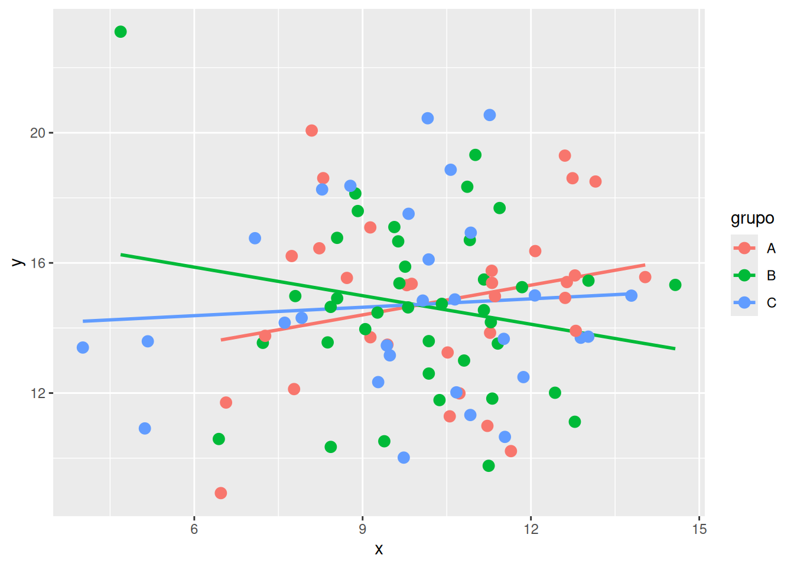

Relatório do segundo treinamento onde foi apresentado como importar dados e manipulá-los no R, bem como as principais estatísticas descritivas univariadas e multivariadas.
Pacotes (package) são coleções de funções, dados e documentação que estendem as capacidades do R base (aquele que você recebe na instalação padrão). São como “caixas de ferramentas” especializadas que você adiciona ao R para realizar tarefas específicas, então você tem pacotes para elaboração de gráficos, para certos tipos de análises, para manipulação de dados, para leitura (importação) de dados. Em https://cran.r-project.org/web/views/ há uma “breve” lista de pacotes conforme a sua finalidade.
Mostrar código
# funções no R baselength(ls("package:base"))
[1] 1283
Mostrar código
# funções especializadas no pacote dplyrlength(ls("package:dplyr"))
[1] 297
Mostrar código
# um pacote possui um conjunto de arquivos associadossystem.file(package ="ggplot2") %>%list.files()
Por padrão, ao iniciar uma sessão no R, serão carregados os pacotes e funções associados ao R base. Os demais devem ser instalados primeiramente, e depois carregados na seção para serem usados.
# verificando se um pacote já está instaladosum(installed.packages()[, "Package"] =='dplyr')
[1] 1
Mostrar código
any(installed.packages()[, "Package"] =='dplyr')
[1] TRUE
Mostrar código
"ggplot2"%in%rownames(installed.packages())
[1] TRUE
A instalação de pacotes no R é feita usando a função install.packages ou devtools::install_github para pacotes que estão no github e não em um repositório de pacotes.
Mostrar código
# pelo repositório oficial (na web)install.packages("ggplot2")install.packages(c("dplyr", "tidyr", "readr")) # instalando vários pacotes de uma vez# Instalar o pacote e todas dependências relacionadas a eleinstall.packages("ggplot2", dependencies =TRUE)# instalar de um arquivo localinstall.packages("caminho/para/pacote.tar.gz", repos =NULL, type ="source")# Instalar pacote mantido no GitHubinstall.packages("devtools")devtools::install_github("tidyverse/ggplot2")# Usar outros repositórios para instalaçãoinstall.packages("ggplot2", repos ="https://cloud.r-project.org/")
Para carregar um pacote em uma sessão usamos library() ou require(). A diferença entre os dois é que, na ausência do pacote que você pretende carregar, library gera um erro, enquanto o require retorna um valor FALSE invisível, o qual pode ser usado, por exemplo, para criar uma lógica em seu script para instalar o pacote caso o mesmo não possa ser carregado ou, então, para gerar uma mensagem no terminal indicando essa ausência do pacote.
Mostrar código
library(ggplot2)# Não exibir mensagens de carregamento do pacotesuppressPackageStartupMessages(library(ggplot2))# criando uma lógica simples com require para instalar pacotes que# não possam ser carregadosif(!require(ggplot2)) {install.packages("ggplot2")require(ggplot2)}# usando uma função do pacote sem o carregar (namespace qualification)head(dplyr::filter(mtcars, mpg >20), 2)
# carregando vários pacotes de uma lista de nomespacotes <-c("ggplot2", "dplyr", "tidyr")x <-lapply(pacotes, library, character.only =TRUE, quietly =TRUE)
Além dessas funções para instalação e carregamento de pacotes, também outras funções que devem ser conhecidas na rotina são as de atualização (update.packages()) e remoção (remove.packages()) de pacotes, descrição (packageDescription()), versão (packageVersion()) e forma recomendada pelo seus autores de citação (citation()) quando usada em uma publicação.
Mostrar código
# Atualização de pacotesupdate.packages() # todosupdate.packages(ask =FALSE) # todos, mas exige confirmação# apagar um pacoteremove.packages("nome_pacote")
Mostrar código
# descrição e versãopackageDescription("ggplot2")
Package: ggplot2
Title: Create Elegant Data Visualisations Using the Grammar of Graphics
Version: 4.0.0
Authors@R: c( person("Hadley", "Wickham", , "hadley@posit.co", role =
"aut", comment = c(ORCID = "0000-0003-4757-117X")),
person("Winston", "Chang", role = "aut", comment = c(ORCID =
"0000-0002-1576-2126")), person("Lionel", "Henry", role =
"aut"), person("Thomas Lin", "Pedersen", ,
"thomas.pedersen@posit.co", role = c("aut", "cre"), comment =
c(ORCID = "0000-0002-5147-4711")), person("Kohske",
"Takahashi", role = "aut"), person("Claus", "Wilke", role =
"aut", comment = c(ORCID = "0000-0002-7470-9261")),
person("Kara", "Woo", role = "aut", comment = c(ORCID =
"0000-0002-5125-4188")), person("Hiroaki", "Yutani", role =
"aut", comment = c(ORCID = "0000-0002-3385-7233")),
person("Dewey", "Dunnington", role = "aut", comment = c(ORCID =
"0000-0002-9415-4582")), person("Teun", "van den Brand", role =
"aut", comment = c(ORCID = "0000-0002-9335-7468")),
person("Posit, PBC", role = c("cph", "fnd"), comment = c(ROR =
"03wc8by49")) )
Description: A system for 'declaratively' creating graphics, based on
"The Grammar of Graphics". You provide the data, tell 'ggplot2'
how to map variables to aesthetics, what graphical primitives
to use, and it takes care of the details.
License: MIT + file LICENSE
URL: https://ggplot2.tidyverse.org,
https://github.com/tidyverse/ggplot2
BugReports: https://github.com/tidyverse/ggplot2/issues
Depends: R (>= 4.1)
Imports: cli, grDevices, grid, gtable (>= 0.3.6), isoband, lifecycle (>
1.0.1), rlang (>= 1.1.0), S7, scales (>= 1.4.0), stats, vctrs
(>= 0.6.0), withr (>= 2.5.0)
Suggests: broom, covr, dplyr, ggplot2movies, hexbin, Hmisc, knitr,
mapproj, maps, MASS, mgcv, multcomp, munsell, nlme, profvis,
quantreg, ragg (>= 1.2.6), RColorBrewer, rmarkdown, roxygen2,
rpart, sf (>= 0.7-3), svglite (>= 2.1.2), testthat (>= 3.1.5),
tibble, vdiffr (>= 1.0.6), xml2
Enhances: sp
VignetteBuilder: knitr
Config/Needs/website: ggtext, tidyr, forcats, tidyverse/tidytemplate
Config/testthat/edition: 3
Config/usethis/last-upkeep: 2025-04-23
Encoding: UTF-8
LazyData: true
RoxygenNote: 7.3.2
Collate: 'ggproto.R' 'ggplot-global.R' 'aaa-.R'
'aes-colour-fill-alpha.R' .....
NeedsCompilation: no
Packaged: 2025-08-19 08:21:45 UTC; thomas
Author: Hadley Wickham [aut] (ORCID:
<https://orcid.org/0000-0003-4757-117X>), Winston Chang [aut]
(ORCID: <https://orcid.org/0000-0002-1576-2126>), Lionel Henry
[aut], Thomas Lin Pedersen [aut, cre] (ORCID:
<https://orcid.org/0000-0002-5147-4711>), Kohske Takahashi
[aut], Claus Wilke [aut] (ORCID:
<https://orcid.org/0000-0002-7470-9261>), Kara Woo [aut]
(ORCID: <https://orcid.org/0000-0002-5125-4188>), Hiroaki
Yutani [aut] (ORCID: <https://orcid.org/0000-0002-3385-7233>),
Dewey Dunnington [aut] (ORCID:
<https://orcid.org/0000-0002-9415-4582>), Teun van den Brand
[aut] (ORCID: <https://orcid.org/0000-0002-9335-7468>), Posit,
PBC [cph, fnd] (ROR: <https://ror.org/03wc8by49>)
Maintainer: Thomas Lin Pedersen <thomas.pedersen@posit.co>
Repository: CRAN
Date/Publication: 2025-09-11 07:10:02 UTC
Built: R 4.5.1; ; 2025-10-17 13:11:49 UTC; unix
-- File: /home/marcelo/R/x86_64-pc-linux-gnu-library/4.5/ggplot2/Meta/package.rds
Mostrar código
packageVersion("ggplot2")
[1] '4.0.0'
Mostrar código
# forma de citaçãocitation("ggplot2")
To cite ggplot2 in publications, please use
H. Wickham. ggplot2: Elegant Graphics for Data Analysis.
Springer-Verlag New York, 2016.
Uma entrada BibTeX para usuários(as) de LaTeX é
@Book{,
author = {Hadley Wickham},
title = {ggplot2: Elegant Graphics for Data Analysis},
publisher = {Springer-Verlag New York},
year = {2016},
isbn = {978-3-319-24277-4},
url = {https://ggplot2.tidyverse.org},
}
Algo a se ter em mente é que nada impede de vários pacotes terem o mesmo nome para funções com finalidades diferentes. Nesse caso, ao carregar esses pacotes, o último a ser carregado irá mascarar o nome da anterior no seu ambiente. Assim, para evitar conflitos, ou o uso da função errada, recomenda-se usar a função seguindo o padrão nome_do_pacote::nome_da_função.
1.2 Leitura de datasets externos ao R
A importação de dados é o primeiro passo em qualquer análise. O R oferece múltiplos pacotes especializados para diferentes formatos de arquivos, mas iremos focar nos pacotes de leitura dos arquivos provenientes dos softwares Excel, SAS, Stata e SPSS. Para isso, utilizaremos os pacotes readxl e haven.
Mostrar código
# mini rotina para instalar um pacote se ainda não estiver instaladoinstala_se_nao_existe <-function(nome_do_pacote){if(nome_do_pacote %in%rownames(installed.packages())) return()install.packages(nome_do_pacote, quiet =TRUE)return()}lapply(c("readxl", "haven"), instala_se_nao_existe)# Carregar pacoteslibrary(readxl) # Excellibrary(haven) # SAS, SPSS, STATA
1.2.1 Importando dados do Excel
Para leitura de arquivos do Excel nos formatos .xls e .xlsx usaremos o pacote readxl, o qual faz parte do conjunto de pacotes do tidyverse. Dele podemos usar as funções read_excel(), read_xls() ou read_xlsx(), os quais recebem argumentos semelhantes, com a diferença que os dois últimos são específicos ao formato do arquivo.
O primeiro e mais importante argumento a ser fornecido para essa função é o path, o local onde o arquivo se encontra no seu computador. Esse caminho pode ser absoluto (desde a raiz, normalmente / no linux ou C: no windows, até o local) ou relativo ao diretório de trabalho (que pode ser verificado usando a função getwd()).
Como os arquivos do Excel aceitam múltiplas planilhas (em diferentes abas), o argumento de sheet do read_excel() permite escolher qual aba se pretende carregar. Caso seja necessário verificar primeiro o nome das abas disponíveis no arquivo, use excel_sheets(path).
Outro problema comum em arquivos do Excel são planilhas que não iniciam na linha 1 ou que apresentam um conjunto de colunas que não pretendemos usar (sem conteúdo ou preenchido com informações que não fazem parte do dateset). Para contornar esses obstáculos, podemos usar o argumento skip com o número de linhas iniciais que não devem ser lidas, ou usar o range com um character indicando a primeira e última células que delimitam seus dados (por exemplo, range = "B2:D20" indica que devem ser lidas as colunas B, C e D, das linhas 2 até a 20).
Por padrão, essas funções buscam adivinhar o tipo de dados presente em cada coluna da planilha, mas é possível declarar o tipo usando o argumento col_types com um vetor com comprimento igual ao número de colunas que irá importar. Esse vetor deve, para cada coluna, usar uma das opções:
“skip”: remove a coluna do dataset
“guess”: deixa para a função escolher o tipo
“logical”: booleano
“numeric”: numérico
“date”: data
“text”: character
“list”: lista
Também por padrão, a primeira linha é usada para obter os nomes de cada coluna. Se você não possui nomes das colunas na sua planilha use col_names = FALSE na função ou passe um vetor dos nomes das colunas para o argumento col_names.
Um aspecto importante de qualquer conjunto de dados é saber como foram codificados os dados ausentes. O argumento na permite passar um vetor de character com os códigos usados na planilha para declarar um dado ausente, o qual será convertido para NA no R.
# definir a planilha por nome ou índicedados_pela_aba <-read_excel("../datasets/excel/ap2.xlsx", sheet ="Data")dados_pela_aba <-read_excel("../datasets/excel/ap2.xlsx", sheet =1)# carregar somente um intervalo de células, em que a linha 1 não é headerdados_pelo_range <-read_excel("../datasets/excel/ap2.xlsx",range ="A2:B100",sheet ="Data",col_names =FALSE)
# mesmo exemplo, mas definindo os nomes das colunasdados_pelo_range <-read_excel("../datasets/excel/ap2.xlsx",range ="A2:B100",sheet ="Data",col_names =c('fazenda', 'lote'))head(dados_pelo_range)
# definir os códigos usados na planilha para dados ausentesdados_na <-read_excel("../datasets/excel/ap2.xlsx",na =c("", "NA", "N/A", "-"))
1.2.2 Importando dados do Stata
Para leitura de arquivos do Stata no formato .dta usaremos o pacote heaven, o qual possui funções para leitura de arquivos do Stata, SPSS e SAS. Nesse treinamento vamos focar na função read_dta() para leitura dos arquivos do Stata (superiores a versão 13.0).
Assim como no read_excel(), o primeiro argumento de read_dta() deve ser a localização do arquivo. Além disso, a função aceita como argumentos encoding, a codificação de carácteres usada, skip para remover um certo número de linhas, col_select para definir quais colunas serão selecionadas e n_max para declarar o número máximo de linhas que devem ser importadas.
Um diferença importante entre arquivos do Excel e do Stata é que no segundo o dataset e as suas variáveis podem conter metadados (“notes” e “labels”) com informações sobre esses dados. Essas informações podem ser acessadas na função attr().
serological reac. against A.pleuropneumoniae serotype 2 at age_t
mp_t
serological reac. against M.hyopneumoniae at age_t
infl_t
serological reac. against Influenza virus at age_t
prrs_t
serological reac. against PRRS virus at age_t
ap2_t6
serological reac. against A.pleuropneumoniae serotype 2 at age_t6
mp_t6
serological reac. against M.hyopneumoniae at age_t6
infl_t6
serological reac. against Influenza virus at age_t6
prrs_t6
serological reac. against PRRS virus at age_t6
ap2_sc
seroconversion to ap2 during the finishing period
1.2.3 Verificação e diagnóstico dos dados importados
Uma vez carregados os dados, é importante avaliar a estrutura desse conjunto de dados importado. Para uma exploração inicial, será interessante avaliar, no mínimo, as dimensões desses dados (número de observações e variáveis), quais os tipos das variáveis no R, resumos estatísticos simples, quantidade de valores ausentes por variável.
Mostrar código
verificar_dados <-function(dados) {cat("Dimensões:", dim(dados), "\n")cat("Tipos de variáveis:\n")print(sapply(dados, class))cat("\nPrimeiras linhas:\n")print(head(dados, 3))cat("\nResumo estatístico:\n")print(summary(dados))cat("\nValores missing por coluna:\n")print(colSums(is.na(dados)))cat("\nStructura dos dados:\n")str(dados)}# Aplicar a qualquer dataset importadoverificar_dados(dados_stata)
Por fim, em grandes datasets é comum que os dados sejam registrados em múltiplos arquivos (principalmente no Excel, por causa do limite de linhas). Nesse caso, para não ser necessário carregar cada um desses arquivos e depois construir um data.frame que uni todos, podemos usar recursos de programação funcional do pacote purrr para importar diretamente todos os arquivos em um único data.frame.
Mostrar código
library(purrr)# obter uma lista dos arquivos que serão importados e# mapear todos os arquivos para um unico data.framedados <-list.files("datasets/csv", pattern ="\\.csv$", full.names =TRUE) |>map_df(read_csv2)
Quadro Resumo das funções que podem ser usadas na importação de arquivos externos ao R
Formato
Pacote
Função
CSV
readr
read_delim(), read_csv(), read_csv2()
Excel
readxl
read_excel(), read_xls(), read_xlsx()
SAS
haven
read_sas()
SPSS
haven
read_sav()
Stata
haven
read_stata(), read_dta()
Múltiplos
rio
import()
2 Manipulação de dados com os pacotes do tidyverse
O tidyverse é uma coleção de pacotes R voltados para a ciência de dados, que compatilham uma mesma filosofia, gramática e estruturas de dados. Ele é composto dos seguintes pacotes:
tibble: extensão do data.frame;
dplyr: funções na forma de verbos que fornece a gramática para a manipulação dos dados;
tidyr: funções para obtenção dos dados que seguem a filosia dos “dados arrumados”;
readr: importação de dados tabulares (csv, tsv, fwf);
purrr: programação funcional;
stringr: manipulação de strings (character);
forcats: manipulação de fatores (factor);
lubridate: manipulação de datas (date);
ggplot2: criação de gráficos.
Mostrar código
# Carregar todo o conjunto de pacoteslibrary(tidyverse)# Ou carregar pacotes individuaislibrary(dplyr)library(tidyr)library(readr)
Como já mencionado, o tidyverse segue a filosofia de “dados arrumados” (tidy data), o que basicamente significa que:
cada variável forma uma coluna;
cada unidade observacional (unidade amostral) forma uma linha;
O tibble facilita a compreensão dos seus dados, uma vez que sua impressão (com print) apresenta o tipo de cada variável, não imprime o conjunto completo (somente as primeiras linhas) e não faz conversões automáticas de variáveis character para factor. Além disso, ele aceita nomes não sintáticos do R para as variáveis (usando ``).
Uma diferença importante entre tibble e data.frame está na forma como você extrai uma variável do conjunto. No data.frame usamos os padrões nome_do_dataframe["nome_da_coluna"], nome_do_dataframe[indice_da_coluna] ou nome_do_dataframe$nome_da_coluna. No tibble usamos os padrões nome_do_tibble$nome_da_coluna, nome_do_tibble[[indice_da_coluna]], nome_do_tibble[["nome_da_coluna"]] ou, ainda, extrair por meio do pipe com nome_do_tibble %>% .$nome_da_coluna, nome_do_tibble %>% .[["nome_da_coluna"]] ou nome_do_tibble |> pull("nome_da_coluna").
Mostrar código
# extraindo uma variável do tibbledados_tidy %>% .$idade_anos
[1] 7 4 9 5 4 10
Mostrar código
dados_tidy %>% .[["idade_anos"]]
[1] 7 4 9 5 4 10
Mostrar código
dados_tidy |>pull("idade_anos")
[1] 7 4 9 5 4 10
2.1 O pipe (%>% e |>)
O pipe permite agrupar em um código que parece ser uma única operação múltiplas operações (chamadas de funções), em que o resultado de uma operação e fornecido como o primeiro argumento da subsequente. Isso torna o código mais legível.
Mostrar código
# Sem pipe, com funções aninhadasresultado <-summarise(group_by(filter(dados_tidy, peso_kg >10), especie ),peso_medio =mean(peso_kg))# ou criando várias etapasdados_filtrados <-filter(dados_tidy, peso_kg >10)dados_agrupados <-group_by(dados_filtrados, especie)resultado <-summarise(dados_agrupados, peso_medio =mean(peso_kg))# Com pipe do tidyverse (%>%)resultado <- dados_tidy %>%filter(peso_kg >10) %>%group_by(especie) %>%summarise(peso_medio =mean(peso_kg))# com pipe nativo do R 4.1+ (|>)resultado <- dados_tidy |>filter(peso_kg >10) |>group_by(especie) |>summarise(peso_medio =mean(peso_kg))
2.2 Manipulação dos dados com o dplyr
Usamos o select() para obter um subconjunto do nosso dataset com somente as variáveis de interesse.
# seleção de colunas pelo nome ou com vetor de caractéresdf_exemplo %>%select(id, especie, peso)df_exemplo %>%select(c("id", "especie", "peso"))# Seleção com funções helpers# starts_with para as colunas que iniciam com certo valordf_exemplo %>%select(starts_with("data"))# ends_with para as colunas que terminam com certo valordf_exemplo %>%select(ends_with("do"))# contains para as colunas que possuem um certo valordf_exemplo %>%select(contains("ac"))# where para colunas que correspondem a TRUE para alguma função de retorno lógicodf_exemplo %>%select(where(is.numeric))# usando padrão de fórmula para múltiplas condiçõesdf_exemplo %>%select(where(~is.numeric(.x) &&min(.x) >10))# Seleção pela exclusão de determinadas colunasdf_exemplo %>%select(-id, -data_consulta)df_exemplo %>%select(-c("id", "data_consulta"))# Seleção com renomeação de determinadas colunasdf_exemplo %>%select(identificador = id,tipo_animal = especie,everything() )
Usamos o filter() para obter um subconjunto do nosso dataset com somente as observações que atendem a uma determinada condição.
Mostrar código
# Filtro básicodf_exemplo %>%filter(especie =="cão")# Múltiplas condições# AND - , ou &df_exemplo %>%filter(especie =="gato", peso >10, vacinado ==TRUE)df_exemplo %>%filter(especie =="gato"& peso >10& vacinado ==TRUE)# OR - |df_exemplo %>%filter(especie =="cão"| especie =="gato")# agrupando os OR de == com %in%df_exemplo %>%filter(especie %in%c("cão", "gato"))# Filtros com funções# between para min <= x <= maxdf_exemplo %>%filter(between(idade, 5, 10))df_exemplo %>%filter(!is.na(temperatura))
Usamos o mutate() para criar ou modificar variáveis.
Mostrar código
# criar colunas# case_when para construir uma variável baseado em condições das demaisdf_exemplo %>%mutate(score_inventado = peso / (idade ^0.5),categoria_idade =case_when( idade <1~"Filhote", idade <7~"Adulto",TRUE~"Idoso" ) ) %>%select(id, especie, idade, categoria_idade, score_inventado)# modificar colunasdf_exemplo %>%mutate(peso =round(peso, 0),temperatura = temperatura *9/5+32 )# transformações em várias colunas# scale centraliza a variável (desvio / desvio-padrão)# cuidado para multiplos across no mutate, a ordem importadf_exemplo %>%mutate(across(where(is.numeric), ~round(.x, 1)),across(c(peso, temperatura), ~scale(.x)[,1], .names ="{.col}_z") )df_exemplo %>%mutate(across(c(peso, temperatura), ~scale(.x)[,1], .names ="{.col}_z"),across(where(is.numeric), ~round(.x, 1)) )# transmute() - mantém apenas as colunas criadasdf_exemplo %>%transmute( id,peso_libras = peso *2.205,idade_meses = idade *12 )
Usamos o arrange() para ordenar as variáveis por uma ou mais variáveis.
Mostrar código
# Ordenação crescente por uma variáveldf_exemplo %>%arrange(peso)# Ordenação decrescente por uma variáveldf_exemplo %>%arrange(desc(peso))# Ordenação múltipladf_exemplo %>%arrange(especie, desc(idade), peso)# Ordenação com NAdf_exemplo %>%arrange(desc(is.na(temperatura)), temperatura)
Para criar agregações (resumos estatíticos) usamos summarise() e o group_by() caso esse resumo deva ser calculado para cada categoria de determinada variável.
Para obter um subconjunto de observações também podemos usar funções da família slice_*.
Mostrar código
# Primeiras ou últimas n observaçõesdf_exemplo %>%slice_head(n =5)df_exemplo %>%slice_tail(n =5)# Linhas específicasdf_exemplo %>%slice(c(1, 5, 10))# Amostragem "aleatória"df_exemplo %>%slice_sample(n =10)df_exemplo %>%slice_sample(prop =0.1)# Extremos por grupodf_exemplo %>%group_by(especie) %>%slice_max(peso, n =3) # 3 maiores valoresdf_exemplo %>%group_by(especie) %>%slice_min(idade, n =2) # 2 menores valores# retornando exatamente o valor ndf_exemplo %>%group_by(especie) %>%slice_min(idade, n =2, with_ties =FALSE)
Para obter os valores únicos de uma ou mais variáveis usamos distinct().
Mostrar código
# Valores únicos de uma colunadf_exemplo %>%distinct(especie)# Combinações únicas# .keep_all = TRUE para manter as outras colunasdf_exemplo %>%distinct(especie, vacinado, .keep_all =TRUE)# Remover duplicatasdf_exemplo %>%distinct()
Para contagem de ocorrências usamos count() e add_count().
Mostrar código
# quantidade de observações por categoriadf_exemplo %>%count(especie, sort =TRUE, name ="Amostra")# Contagem com pesodf_exemplo %>%count(especie, wt = peso, name ="peso_total")# mesmo que agrupar e agregar para a somadf_exemplo %>%group_by(especie) %>%summarise(peso_total =sum(peso) )# Adicionar contagem sem agregardf_exemplo %>%add_count(especie, name ="n_por_especie") %>%add_count(especie, wt = peso, name ="peso_por_especie") %>%select(id, especie, n_por_especie, peso_por_especie)
2.3 Reestruturação dos dados com o tidyr
Algumas vezes os dados importados apresentam um conjunto de colunas que precisam ser transformadas em uma única com seu valor e outra com a categoria, ou o contrário. Para conseguir isso usamos as funções pivot_longer() e pivot_wider(). pivot_longer() retorna um dataset com mais observações e menos colunas, usando os nomes das colunas alvo para construir uma variável e o valor de cada coluna para construir outra. pivot_wider() retorna um dataset com mais colunas e menos observações, usando os valores de uma ou mais colunas alvo para criar novas variáveis e outra coluna para extrair os valores.
Também é possível separar os valores de uma variável em novas variáveis usando o separate() ou unir os valores de diferentes variáveis em uma única usando o unite().
Quando temos dados ausentes (NA) em variáveis do nosso conjunto de dados, normalmente, algum tratamento será necessário para lidar com essas observações, seja removendo elas ou substituindo por outro valor. fill() substitui os valores NA das variáveis alvo por valores anteriores e posteriores àquela observação no conjunto de dados, enquanto replace_na() substitui os valores NA por um valor padrão. Já o drop_na() remove a unidade observacional inteira que apresente um NA nas variáveis alvo.
Por vezes em nossa análise chegamos em um ponto onde é necessário dividir nosso dataset em multiplos conjuntos, baseado em alguma categoria, seja para aplicar algum teste ou ajustar um modelo. Esse processo, normalmente, envolveria criar várias variáveis cada uma com o dataset filtrado para a categoria de interesse e depois aplicar o teste a cada uma desses subconjuntos. Entretanto, o tidyr oferece uma estratégia mais elegante para esse processo por meio do aninhamento usando o nest(). O nest() permite criar um novo tibble em que, em uma coluna do tipo lista, cada observação se torna um tibble filtrado para a categoria de interesse, assim, podemos aplicar o teste de forma iterativa em cada um, por meio de funções de programação funcional do purrr, mantendo também o resultado em formato de lista para cada observação.
Call:
lm(formula = peso ~ idade, data = .x)
Residuals:
Min 1Q Median 3Q Max
-10.5686 -3.9560 0.4428 2.6257 12.5723
Coefficients:
Estimate Std. Error t value Pr(>|t|)
(Intercept) 12.1732 1.9516 6.237 3e-07 ***
idade 0.3133 0.2401 1.305 0.2
---
Signif. codes: 0 '***' 0.001 '**' 0.01 '*' 0.05 '.' 0.1 ' ' 1
Residual standard error: 5.364 on 37 degrees of freedom
Multiple R-squared: 0.04399, Adjusted R-squared: 0.01816
F-statistic: 1.703 on 1 and 37 DF, p-value: 0.2
Mostrar código
dados_aninhados$teste_media_peso_vacinado[[1]]
Welch Two Sample t-test
data: peso by vacinado
t = 0.0048531, df = 34.736, p-value = 0.9962
alternative hypothesis: true difference in means between group FALSE and group TRUE is not equal to 0
95 percent confidence interval:
-3.539016 3.555972
sample estimates:
mean in group FALSE mean in group TRUE
14.46500 14.45652
2.4 Unindo diferentes tabelas com dplyr
Outra situação com que se depara na análise de dados é a necessidade de importar dados de diferentes planilhas (tabelas), as quais depois precisamos unir em um único dataset, baseado na informação de alguma variável que ocorre em ambas as tabelas. Isso é particularmente comum quando trabalhamos com dados importados de bancos de dados relacionais, onde temos uma tabela que possui uma coluna de chave primária (valores únicos) e outra com chave estrangeira que indica que aquele registro se refere à observação única daquela outra tabela.
Para unir essas tabelas usamos joins, uma operação derivada do SQL, uma linguagem de consulta de banco de dados relacionais. joins guardam uma semelhança com a teoria de conjuntos (união, diferença, intersercção).
Tipos de joins do dplyr
Mostrar código
animais <-tibble(id =1:5,nome =c("Rex", "Mia", "Bob", "Luna", "Max"),especie =c("cão", "gato", "cão", "gato", "coelho"))consultas <-tibble(id_animal =c(1, 2, 1, 3, 6), # id 6 não existe no tibble animaisdata =as.Date(c("2023-01-10", "2023-01-15", "2023-02-01","2023-02-10", "2023-02-15" )),motivo =c("vacina", "checkup", "checkup", "vacina", "emergência"))# inner_join - mantém apenas registros com correspondênciainner <- animais %>%inner_join(consultas, by =c("id"="id_animal"))# left_join - mantém todos da esquerdaleft <- animais %>%left_join(consultas, by =c("id"="id_animal"))# right_join - mantém todos da direitaright <- animais %>%right_join(consultas, by =c("id"="id_animal"))# full_join - mantém todosfull <- animais %>%full_join(consultas, by =c("id"="id_animal"))# semi_join - mantém linhas de L que têm match em Ranimais_com_consulta <- animais %>%semi_join(consultas, by =c("id"="id_animal"))# anti_join - mantém linhas de L que NÃO têm match em Ranimais_sem_consulta <- animais %>%anti_join(consultas, by =c("id"="id_animal"))
2.5 Manipulando texto, datas e fatores com stringr, lubridate e forcats
Quando nosso dataset possui variáveis que representam um texto, por exemplo, uma resposta aberta, é normal ter que manipular essa variável para padronizá-la antes de uma análise. O stringr oferece um conjunto de funções que permitem manipular dados do tipo character, que inclui meios de tranformar o texto em maiúsculas ou minúsculas, detectar certas palavras, contar o número de ocorrências de uma palavra, remover ou substituir uma palavra por outra ou, ainda, usar expressões regulares (REGEX) para tranformar seus dados iniciais.
Mostrar código
exemplo <-tibble(id =1:5,descricao =c(" Infecção respiratória AGUDA ","dermatite alérgica crônica","FRATURA do fêmur esquerdo","gastroenterite viral","Otite média bilateral" ))# Funções básicasdiagnosticos_limpos <- exemplo %>%mutate(# Remover espaços extras no inicio e fim do textodescricao_limpa =str_trim(descricao),# Converter para minúsculasdescricao_lower =str_to_lower(descricao_limpa),# Converter para título ("Um Texto Dessa Forma")descricao_title =str_to_title(descricao_limpa),# Detectar padrõestem_infeccao =str_detect(descricao_lower, "infec"),# Extrair palavrasprimeira_palavra =str_extract(descricao_limpa, "^\\w+"),# Substituirdescricao_mod =str_replace(descricao_lower, "aguda|crônica", "***"),# Contar palavrasn_palavras =str_count(descricao_limpa, "\\w+") )diagnosticos_limpos# Expressões regularestelefones <-c("(11) 1234-5678", "11-98765.4321", "1112345678", "11 1234 5678")telefones_limpos <- telefones %>%str_remove_all("[^0-9]") %>%# Remove tudo exceto númerosstr_replace("^(\\d{2})(\\d{4,5})(\\d{4})$", "(\\1) \\2-\\3")telefones_limpos
O lubridate por sua vez permite trabalhar com dados temporais (data e tempo). Com ele você converter dados para os tipos Date e POSIXct (date-time), usar aritméticas entre datas, adcionar ou remover timezones, além de criar períodos, durações e intervalos.
Mostrar código
datas_texto <-c("01/03/2023", "15-06-2023", "2023-12-25")datas <-tibble(texto = datas_texto,data_dmy =dmy(c("01/03/2023", "15/06/2023", "25/12/2023")),data_dmy_hm =dmy_hm(c("01/03/2023 15:20", "15/06/2023 08:12", "25/12/2023 17:30")),data_ymd =ymd("2023-12-25"))class(df_exemplo$data_consulta)# obter os componentes da dataconsultas_datas <- df_exemplo %>%mutate(ano =year(data_consulta),mes =month(data_consulta, label =TRUE),dia =day(data_consulta),dia_semana =wday(data_consulta, label =TRUE),semana_epidemio =epiweek(data_consulta),trimestre =quarter(data_consulta),dia_ano =yday(data_consulta) )intervencoes <-tibble(inicio =ymd(c("2023-01-01", "2023-03-15", "2023-06-01")),fim =ymd(c("2023-01-15", "2023-04-01", "2023-06-30"))) %>%mutate(duracao_dias =as.numeric(fim - inicio),duracao_semanas =as.numeric(difftime(fim, inicio, units ="weeks")),meio_periodo = inicio +days(as.integer(duracao_dias /2)) )# criando periodosintervencoes$inicio +years(1)# criando duraçõesintervencoes$inicio +dyears(1)# criando intervalosintevalo_um_ano <-interval( intervencoes$inicio, intervencoes$inicio +years(1))# testando se uma data está dentro de um intervalo(intervencoes$inicio[1] +days(20)) %within% intevalo_um_ano# Sequências de datascalendario_vacinacao <-tibble(data =seq(ymd("2023-01-01"), ymd("2023-12-31"), by ="month"),tipo ="Vacinação mensal")# Arredondar datasagora <-now()tibble(original = agora,hora =floor_date(agora, "hour"), # floor arredonda para baixodia =round_date(agora, "day"), # round arredonda para o mais próximosemana =ceiling_date(agora, "week"), # ceiling arredonda para cimames =floor_date(agora, "month"))
Para finalizar nossa seção sobre o tidyverse temos o pacote forcats para manipulação de fatores. Ele possui ferramentas para alterar ou reordenar os fatores de uma variável de forma simples.
Os pacotes apresentados possuem uma grande gama de ferramentas, e nem todas serão apresentadas no nosso treinamento. Caso queira aprender mais sobre elas, recomendo o livro R para Ciência de Dados, o qual possui uma versão online de acesso aberto ou a documentação dos pacotes do tidyverse que podem ser encontrados em https://www.tidyverse.org/packages/.
3 Estatística descritiva
Estatísticas descritivas fazem parte de todo trabalho de análise de dados. Podemos ver ela como um passo inicial, em que você utiliza técnicas de análise exploratória para entender melhor o comportamento dos seus dados considerando o todo, por meio de tabelas, gráficos e medidas-resumo. Na estatística descritiva univariada buscamos o comportamento de uma variável isolada das demais do conjunto de dados, enquanto nas estatísticas bivariada ou multivariada exploramos o comportamento em conjunto de duas ou mais variáveis.
Para exemplificar as estatísticas descritivas em nosso treinamento, usaremos o dataset ap2 (mais informações desse conjunto de dados podem ser verificadas no arquivo dicionário de dados.pdf).
O tipo de variável em estudo irá influenciar na técnica que você escolhe para analisá-la, assim, podemos sintetizar as possibilidades de análise da seguinte forma para estatísticas univariadas:
flowchart TD
A[Tipo de Variável]
A --> B[Qualitativa]
%% Qualitativa
B --> B1[Tabelas]
B1 --> B11[Distribuição de frequências]
B --> B2[Gráficos]
B2 --> B21["Barras (horizontal e vertical)"]
B2 --> B22[Setores ou Pizzas]
B2 --> B23[Diagrama de Pareto]
Estatísticas descritivas univariadas para variáveis qualitativas. Fonte: adaptado de Favaro et al. (2017)
flowchart TD
classDef groupBox fill:#f2f7ff;
A[Tipo de<br>Variável]
C[Quantitativa]
A--> C
C --> M[Medidas‑resumo]
C --> T[Tabelas] --> T1[Distribuição de frequências]
M --> P["Posição ou<br>Localização"]
M --> D["Dispersão ou<br>Variabilidade"]
M --> F[Forma]
%% Posição/Localização: coluna vertical
subgraph POS[" "]
direction TB
P0[Tendência<br>Central]
P1[Média]
P2["Moda*"]
P3[Mediana]
%% Empilhar verticalmente sem setas “hierárquicas”
P0 --- P1
P1 --- P2
P2 --- P3
end
%% Conectar o rótulo principal a este grupo
P --> P0
%% Dispersão (mantém horizontal, só como contexto)
subgraph DISP[" "]
direction TB
D0[Dispersão ou<br>Variabilidade]
D1[Amplitude]
D2[Desvio‑médio]
D3[Variância]
D4[Desvio‑padrão]
D5[Erro‑padrão]
D6[Coef. variação]
D0 --- D1
D1 --- D2
D2 --- D3
D3 --- D4
D4 --- D5
D5 --- D6
end
D --> D0
subgraph FORMA[" "]
direction TB
F0[Forma]
F1[Assimetria]
F2[Curtose]
F0 --- F1
F1 --- F2
end
F --> F0
class POS,DISP,FORMA groupBox
Estatísticas descritivas univariadas para variáveis quantitativas (tabelas e medidas-resumo). Fonte: adaptado de Favaro et al. (2017)
flowchart TD
A[Tipo de Variável]
A --> C[Quantitativa]
%% Quantitativa - Tabelas e Gráficos
C --> C2[Gráficos]
C2 --> C21[Linhas]
C2 --> C22[Pontos ou Dispersão]
C2 --> C23[Histograma]
C2 --> C24[Ramo-e-folhas]
C2 --> C25[Boxplot]
Estatísticas descritivas univariadas para variáveis quantitativas (gráficos). Fonte: adaptado de Favaro et al. (2017)
3.1 Tabela de distribuição de frequências (Univariada)
Tabelas de frequências representam o número absoluto ou relativo de ocorrências de uma categoria (variáveis qualitativas), valor (variáveis quantitativas discretas) ou intervalo de valores (variáveis quantitativas contínuas).
Assim, a tabela será composta dos possíveis valores:
Frequência absoluta (\(F_i\)): contagem das observações na classe \(i\);
Frequência relativa (\(Fr_i\)): contagem das observações na classe \(i\) em relação ao total de observações da variável;
Frequência acumulada (\(F_{ac_i}\)): soma das observações na classe \(i\) e nas anteriores a ela (só faz sentido se há noção de ordem nos dados);
Frequência acumulada relativa (\(Fr_{ac_i}\)): soma das frequências relativas até a classe \(i\) (inclusive);
No caso de variáveis contínuas, para criarmos tabelas de frequências delas, primeiro criamos classes representado intervalos de valores, depois contamos o número de observações em cada intervalo. O número de classes e o intervalo de cada classe é arbitrário, entretanto, Bussab e Morettin (2011) sugerem o seguinte algoritmo para construção da tabela:
Ordenar os dados do menor ao maior;
Calcular o número de classes (\(k\)) por
\(k=1 + 3,322 \times \log_{10}{n}\) (Equação de Sturges)
\(k=\sqrt{n}\)
\(n\) é o número de observações e k deve ser arredondado para o inteiro mais próximo;
Calcular o intervalo das classes, \(\Delta_{h}\), como \(\Delta_{h} = \frac{A}{k}\), em que \(A\) é a amplitude (máximo valor menos o mínimo);
Construa os intervalos iniciando pelo menor valor como primeiro limite inferior e somando \(\Delta_{h}\) ao limite inferior de cada classe para obter os limites superiores. Cada intervalo, exceto o primeiro, será aberto (exclui) no limite inferior e fechado (inclui) no superior, e o limite inferior das classes após a primeira serão o limite superior da anterior (ex.: {[1, 11], ]11, 21], ]21, 31], ]31, 41]});
Conte o número de observações que possuem valores dentro de cada intervalo para construir a tabela de frequências.
No R, as tabelas de frequências podem ser obtidas da seguinte forma:
Distribuição de frequências de uma variável quantitativa contínua
Classe
\(F_i\)
\(Fr_i\)
\(F_{ac_i}\)
\(Fr_{ac_i}\)
[12.1,15.3]
15
1.3%
15
1.3%
(15.3,18.5]
65
5.8%
80
7.2%
(18.5,21.7]
155
13.9%
235
21.1%
(21.7,24.9]
201
18.0%
436
39.1%
(24.9,28.1]
189
17.0%
625
56.1%
(28.1,31.2]
169
15.2%
794
71.3%
(31.2,34.4]
137
12.3%
931
83.6%
(34.4,37.6]
97
8.7%
1028
92.3%
(37.6,40.8]
64
5.7%
1092
98.0%
(40.8,44]
17
1.5%
1109
99.6%
(44,48]
5
0.4%
1114
100.0%
3.2 Representação gráfica dos dados de uma variável
Os gráficos hoje são insdispensáveis na estatística e análise de dados, servindo como uma ponte entre os dados brutos e seu comportamento em conjunto. Normalmente os usamos para detectar padrões, tendências, anomalias e relações que não seriam percebidos em tabelas ou medidas resumo.
Na análise exploratória de dados (EDA), histogramas, boxplots e gráficos de dispersão permitem identificar a forma da distribuição, detectar outliers e avaliar a simetria. Também usamos gráficos para auxiliar na verificação de suposições de modelos estatísticos, por exemplo, quando criamos um gráfico Q-Q para identificar desvios da normalidade.
Além disso, os gráficos são ferramentas para a comunicação estatística, os quais usamos para traduzir conceitos complexos em representações visuais mais intuitivas e didáticas que facilitem a compreensão por um público que não necessariamente possui um conhecimento formal de estatística, mas que podem ser o alvo dos nossos resultados, por exemplo, um gestor público ou de uma empresa cujas nossas análises poderiam (ou deveriam) trazer uma informações relevantes para aumentar a eficácia de sua administração.
Em contextos como epidemiologia veterinária, um gráfico de série temporal pode sugerir surtos epidêmicos ou sazonalidade de doenças, mapas de calor espaciais podem revelar clusters de casos, indicando os locais para intensificar as ações de defesa sanitária.
Em nossos treinamentos, a maioria dos gráficos serão construídos usando o pacote ggplot2 do tidyverse. Existem muitas fontes de informação para o aprendizado do ggplot2 e da criação de gráficos no R, porém, deixo aqui duas recomendações que considero como um “guia de bolso” para criação de gráficos no R, que são o livro R Graphics Cookbook do Winston Chang (2025), um livro online de acesso aberto com várias explicações sobre a criação de gráficos com o ggplot2, e o site The R Graph Gallery onde você encontra explicações e exemplos de código para a criação dos mais variados gráficos no R. Agora, se você quer um conteúdo avançado sobre o ggplot2, o livro online ggplot2: Elegant Graphics for Data Analysis é o que você procura.
3.2.1 Criação de gráficos no ggplot2
O ggplot2 implementa os conceitos da Grammar of Graphics de Leland Wilkinson, onde gráficos são construídos através de camadas semânticas, as quais são combinadas de forma modular e sistemática. Seus principais aspectos são:
Decomposição: Todo gráfico pode ser decomposto em componentes independentes;
Composição: Componentes são combinados usando o operador +;
Declarativo: Você descreve O QUE quer, não COMO desenhar.
Todo gráfico criado com o ggplot2 vai depender da seguinte estrutura mínima:
ggplot(data =<DATA>, # 1. Dados (fonte da informação para o gráfico)mapping =aes(<MAPPINGS>) # 2. Mapeamentos estéticos (quais variáveis serão usadas e onde) ) +<GEOM_FUNCTION>() # 3. Geometria (o que será desenhado)
Assim, ggplot() inicia a construção do gráfico, indicando às camadas posteriores de construção qual o dataset fonte das variáveis (argumento data) e, em geral, como serão mapeadas as variáveis para o gráfico (quem será o eixo das ordenadas? e das abscissas? exitem variáveis categóricas que gostaríamos de usar como fonte para as cores do que será apresentado, ou seja, criar subconjuntos?). Iniciado o ggplot(), que podemos pensar como um quadro em branco, passamos a de fato desenhar nosso gráfico com geom_*() e outras camadas de estilização.
Além desses componentes primários, outros que costumam ser usados na construção de gráficos são:
Facets: Divisão em subgráficos
Statistics (stat): Transformações estatísticas
Coordinates (coord): Sistema de coordenadas
Themes: Aparência não relacionada aos dados
Scales: Controle de mapeamentos
Vamos então observar na prática como é construção do gráfico no ggplot2. Iniciamos com ggplot(data=dados), o que gera somente o nosso painel, sem qualquer escala ainda.
Mostrar código
set.seed(42)dados <-data.frame(x =rnorm(100, mean =10, sd =2),y =rnorm(100, mean =15, sd =3),grupo =sample(c("A", "B", "C"), 100, replace =TRUE),tamanho =runif(100, 1, 10))p_base <-ggplot(dados)p_base # Produz apenas o painel vazio
Chamada de ggplot somente com argumento data
O aes() pode ser informado no próprio ggplot, caso esse mapeamento vá ser usado da mesma forma por todas as demais camadas, ou pode ser informado a cada geom_*(), caso seja algo específico daquela geometria. Os principais elementos estéticos definidos no aes() são: x (eixo das abscissas), y (eixo das ordenadas), color (cor de delimitação), fill (cor de preenchimento), size (tamanho), alpha (transparência), shape (forma), linetype (tipo de linha).
Mostrar código
p_base <-ggplot(dados, aes(x = x, y = y))# Mapeamento geralp1 <-ggplot(dados, aes(x = x, y = y)) +geom_point()# Mapeamento local (na geometria)p2 <-ggplot(dados) +geom_point(aes(x = x, y = y))# Mapeamentos múltiplosp3 <-ggplot(dados, aes(x = x, y = y)) +geom_point(aes(color = grupo, size = tamanho), alpha =0.6) # alpha fixo (não mapeado)
Mostrar código
p_basep1p2p3
Chamada de ggplot(dados, aes(x = x, y = y)) sem uma geometria
Chamada de ggplot(dados, aes(x = x, y = y)) com uma geometria de pontos
aes() definidos na geometria
aes() em diferentes camadas
Uso do aes()
Como já falado, o ggplot2 segue um sistema de camadas, então cada operação após o + adiciona uma nova feição sobre o gráfico e pode inclusive sobrescrever geometrias definidas em operações anteriores, então é importante verificar a ordem em que são declarados os aspectos visuais do gráfico. Observe abaixo, como alterar a ordem de declaração das geometrias “esconde” certos pontos no gráfico da esquerda em relação ao da direita.
Mostrar código
p_ordem1 <-ggplot(dados, aes(x, y)) +geom_smooth(method ="lm", se =TRUE, color ="blue", linewidth =4) +geom_point(size =4, color ="black") # Pontos sobre a linhap_ordem2 <-ggplot(dados, aes(x, y)) +geom_point(size =4, color ="black") +geom_smooth(method ="lm", se =TRUE, color ="blue", linewidth =4) # Linha sobre pontosp_ordem1
`geom_smooth()` using formula = 'y ~ x'
Mostrar código
p_ordem2
`geom_smooth()` using formula = 'y ~ x'
Chamada de ggplot() + geom_smooth() + geom_point()
Chamada de ggplot() + geom_point() + geom_smooth()
Importância de definir a ordem correta das geometrias no seu gráfico.
Quando definimos um aes() na chamada de ggplot(), ele será herdado pelas demais camadas, porém, ao usarmos ele em uma geometria, ele só será usado nela.
Mostrar código
p_heranca <-ggplot(dados, aes(x, y, color = grupo)) +# color globalgeom_smooth(method ="lm", se =FALSE) +geom_point(size =3)p_sem_heranca <-ggplot(dados, aes(x, y)) +geom_smooth(method ="lm", se =FALSE) +geom_point(size =3, aes(color = grupo))p_herancap_sem_heranca

ggplot() + geom_smooth() + geom_point() com herança de aes() do ggplot()
Chamada de ggplot() + geom_point() + geom_smooth() com aes() específico para geom_point()
Herança de aes() no ggplot2.
Quando queremos criar múltiplos gráficos da mesma geometria, segundo uma variável alvo, podemos usar o facet_*() para criação de vários subpainéis.
Com facet_wrap(~ variavel_alvo) os painéis são dispostos horizontalmente considerando o número de categorias. Por padrão, os painéis serão dispostos em uma tabela quadrada, mas essa disposição pode ser alterada usando os argumentos nrow para o número de linhas e ncol para o número de colunas.
Mostrar código
p_wrap <-ggplot(dados, aes(x, y)) +geom_point(color ="steelblue") +geom_smooth(method ="lm", se =FALSE, color ="red") +facet_wrap(~ grupo, ncol =2)p_wrap
Múltiplos painéis no ggplot2 com facet_wrap.
Observe na figura acima que o nome das categorias são exibidas como headers de cada painel, assim, se queremos alterar o título da categoria de cada painel, seria necessário alterar a própria variável (usando por exemplo o recode() se for um dado do tipo factor). O argumento labeller = label_both faz com que o título do painel também apresente o nome da variável. Aspectos visuais do título serão alterados na camada de theme() do gráfico no ggplot2, a qual será apresentada mais adiante no treinamento, mas podemos alterar tanto características do texto (strip.text) quanto do fundo do título (strip.background).
Já o facet_grid(variavel_alvo_linha ~ variavel_alvo_coluna) permite criar painéis a partir de subconjuntos de uma variável para as colunas e outra para as linhas do gráfico. As mesmas técnicas de estilização do facet_wrap se aplicam ao facet_grid.
Para controlar a escala das estéticas mapeadas no gráfico do ggplot2 usamos as funções da família scale_*. scale_* segue um padrão de nome onde primeiro declaramos qual estética queremos controlar (x, y, size…) e em seguida a forma ou transformação que consideramos para a variável mapeada.
Para escalas de posição (eixos x e y), usamos scale_*_continuous para controlar a escala que varia em um intervalo contínuo e scale_*_discrete se queremos que cada valor único da variável mapeada seja tratada como uma categoria.
Com scale_*_continuous podemos controlar os limites do eixo alvo com limits = c(minimo, maximo) e suas marcações com breaks e minor_breaks. breaks e minor_breaks recebe um vetor das posições das marcações ou uma função que, a partir dos limites do eixo, calculará as posições das marcações. Além disso, podemos usar o argumento transform para transformações dos dados naquela escala, por exemplo, aplicando a raiz quadrada ou o log, e podemos usar labels para alterar o texto exibido em cada marcação do eixo.
Manipulando escalas no ggplot2 com scale_*_discrete.
Em ambos, limits define o próprio limite para os dados mapeados, então, devemos tomar cuidado, principalmente em gráficos que calculam estatísticas para sua construção, já que dados fora desses limites serão desconsiderados
Warning: Removed 29 rows containing missing values or values outside the scale range
(`stat_boxplot()`).
Warning: Removed 2 rows containing non-finite outside the scale range
(`stat_boxplot()`).
Original sem perda
Usando limites nas ordenadas e nas abscissas
Perda de dados ao usar limits no scale_*_.
Se queremos limitar nossa escala no gráfico, sem alterar esse mapeamento e, consequentemente, haver perda de dados, podemos usar coord_cartesian e definir nossos limites para as ordenadas com ylim e as abscissas com xlim.
Alterando as escalas dos eixos com coord_cartesian.
Para alterar escalas de cores e preenchimentos usamos scale_color_* e scale_fill_*. Para criar um gradiente contínuo podemos usar scale_*_gradient, o qual aceita os parâmetros low e high como os valores das cores a usar para criar seu gradiente de cores. Então, se usados ambos, será criado uma escala com um gradiente de cores variando entre a cor em low (menor valor dos dados e maior intensidade da cor declara em low) e a cor em high (maior valor dos dados e maior intensidade da cor declara em high). Se declarado somente low, teremos um gradiente criado a partir de uma única cor, com a maior intensidade no menor valor.
Para criar uma escala de cor divergente (gradiente com três cores, com um delas indicando um ponto central), podemos usar scale_*_gradient2. Além disso, podemos criar um gradiente com n cores com scale_*_gradientn (nesse caso, deve ser fornecido um vetor dos nomes de cores a usar no gradiente).
Mostrar código
ggplot(dados, aes(x, y, color = tamanho, size = tamanho)) +geom_point() +scale_color_gradient(low ="blue")ggplot(dados, aes(x, y, color = tamanho, size = tamanho)) +geom_point() +scale_color_gradient(low ="blue", high ="red")ggplot(dados, aes(x, y, color = tamanho, size = tamanho)) +geom_point() +scale_color_gradient2(low ="blue",mid ="white",high ="red",midpoint =mean(dados$tamanho) )ggplot(dados, aes(x, y, color = tamanho, size = tamanho)) +geom_point() +scale_color_gradientn(colors =c("blue", "red", "grey", "green"))
scale_color_gradient definindo somente low
scale_color_gradient definindo low e high
scale_color_gradient2
scale_color_gradientn com 4 cores
Alterando as escalas de cores com scale_*_gradient.
Para escalas de cores discretas, por exemplo, para diferenciar categorias, podemos usar scale_*_manual com o vetor de cores de cada categoria.
Para escalas de tamanho (size) podemos alterar o comportamento com scale_radius() se queremos uma escala contínua de variação, ou scale_size_binned() se queremos criar quebras.
Alterando as escalas de cores discretas com scale_*_discrete e tamanhos com scale_radius e scale_size_binned.
Embora seja possível definir manualmente as cores que queremos usar nas escalas, a escolha de cores interfere em muito em como o público conseguirá identificar padrões no gráfico. Por isso, recomendo usar funções que já fornecem paletas de cores criadas com uma finalidade específica como as do ColorBrewer com scale_*_brewer ou do pacote paletteer. ColorBrewer possui um site onde é possível testar a paleta de cores que queremos usar. Usando o scale_*_brewer, definimos o tipo de paleta (seq” para sequencial, “div” para divergente ou “qual” para qualitativo) e o nome da paleta.
Mostrar código
ggplot(dados, aes(grupo, fill = grupo)) +geom_bar() +scale_fill_brewer(type ="qual")ggplot(dados, aes(grupo, fill = grupo)) +geom_bar() +scale_fill_brewer(palette ="Pastel1")
scale_fill_brewer(type = "qual")
scale_fill_brewer(palette = "Pastel1")
Alterando as escalas de cores com scale_*_brewer.
O pacote paletter também possui um site para escolher sua paleta. Para usá-lo precisamos instalar o pacote e depois utilizar as funções adequadas ao tipo de dados (scale_*_paletteer_c para contínuas e scale_*_paletteer_d para discretas).
Mostrar código
require(paletteer)instala_se_nao_existe("nbapalettes")instala_se_nao_existe("pals")ggplot(dados, aes(x, y, color = tamanho)) +geom_point() +scale_color_paletteer_c("pals::coolwarm")ggplot(dados, aes(grupo, fill = grupo)) +geom_bar() +scale_fill_paletteer_d("nbapalettes::supersonics_holiday")
NULL
NULL
scale_color_paletteer_c para paletas contínuas
scale_fill_paletteer_d para paletas discretas
Alterando as escalas de cores com scale_*_paletteer.
Para finalizar nossa introdução à criação de gráficos com o ggplot2 vamos ver como personalizar nosso gráfico. A camada de legendas e títulos do gráfico podem ser alteradas com labs(). Os argumentos title, subtitle e caption criam textos para o título, subtítulo e nota de rodapé do gráfico, respectivamente. Outros elementos como as legendas e nomes dos eixos são representados pelo nome do argumento usado no aes(), por exemplo, o argumento color declara o título da legenda que representa as categorias dessa estética no gráfico. Caso queira remover o título de uma legenda ou eixo atribua o valor element_blank(), que indica ao ggplot2 para não desenhar nada para aquele elemento.
Mostrar código
p_base <-ggplot( dados,aes(x, y, color = grupo, size = tamanho, shape = categoria) ) +geom_point() +labs(title ="Gráfico de dispersão de X por Y",subtitle ="Um subtítulo para esse gráfico",x ="Título do eixo X",y ="Título do eixo Y",shape ="Legenda de shape",color ="Legenda de color",size ="Legenda de size",caption ="Uma nota explicativa ao conteúdo do gráfico" )p_base
Alterando títulos e legendas em labs().
Além do padrão temático inicial contruído no ggplot2, o pacote fornece alguns temas já contruídos que podemos usar em nosso gráfico como modelo de estilo e ir adicionando novas personalizações conforme a necessidade. Os seguintes temas estão disponíveis: theme_gray, theme_bw, theme_linedraw, theme_light, theme_dark, theme_minimal, theme_classic e theme_void.
Cada um desses temas predefinidos possuem argumentos para certo controle de sua aparência (verifique os argumentos na documentação deles com help(nome_do_tema)), porém, quando queremos alterar algum elemento de aparência do gráfico, normalmente usaremos theme(). theme() permite personalizar todos componentes não definidos pelos seus dados. Sua utilização envolve declarar um argumento com o nome do componente que queremos modificar e fornecer um objeto do tipo element_*. element_* representam elementos temáticos: element_blank para declarar que o componente não deve ser desenhado, element_rect para bordas e planos de fundo, element_line para linhas, element_text para componentes de texto, element_polygon para polígonos e element_point para pontos.
Então, por exemplo, para personalizar o texto do título e subtítulo podemos usar em theme() o plot.title = element_text(args) e plot.subtitle = element_text(args), para alterar a legenda dos eixos usar o axis.title = element_text(args), para alterar as linhas de guia no gráfico usar panel.grid.major = element_rect() e panel.grid.minor = element_rect(). Além disso, alguns argumentos de theme não recebem element_, como o legend.position, no qual você declara onde as legendas serão alocadas (topo, abaixo, esquerda ou direita).
Embora o ggplot2 traga muitas possibilidades de criação de gráficos, há sempre espaço para inovações e especializações na comunidade do R, então recomendo o site ggplot2 extensions que traz uma série de pacotes baseados no ggplot2, mas com um “temperinho a mais” para determinados objetivos que poderiam ser particularmente difíceis ou tediosos de alcançar usando somente o ggplot2 (“não reinvente a roda se ela já foi criada”).
3.2.2 Representação gráfica de variáveis qualitativas (Univariada)
3.2.2.1 Gráfico de barras
Apresenta por meio de barras as frequências absolutas ou relativas de cada possível categoria (ou valor). Nesse caso o comprimento ou altura da barra representa sua frequência, enquanto cada barra representa uma classe. Embora seja mais usual para dados qualitativos, também é possível usar o gráfico de barras para representar variáveis discretas (desde que o número de possíveis valores não seja alto), ou para variáveis contínuas agrupadas em intervalos.
Mostrar código
# paletteer_d("nationalparkcolors::Acadia")# ap2 %>% count(vacc_mp)library(ggtext)plot_theme <-theme_minimal() +theme(plot.title =element_markdown(size =16),axis.text.x =element_text(size =12, face ="bold"),axis.text.y =element_text(size =12),axis.title.x =element_markdown(size =14),axis.title.y =element_markdown(size =14), )ggplot(ap2) +geom_bar(aes(vacc_mp), fill ="#72874EFF", color ="black") +labs(title ="Frequência absoluta dos porcos vacinados contra *M. hyopneumoniae*",x ="Estado vacinal contra *M. hyopneumoniae*",y ="Frequência absoluta" ) +scale_y_continuous(breaks =seq(0, 750, 50) ) + plot_themeggplot(ap2) +geom_bar(aes(vacc_mp, y =after_stat(prop), group =1),fill ="#72874EFF",color ="black" ) +labs(title ="Frequência relativa dos porcos vacinados contra *M. hyopneumoniae*",x ="Estado vacinal contra *M. hyopneumoniae*",y ="Frequência relativa (%)" ) +scale_y_continuous(labels = scales::label_percent(),breaks = scales::breaks_width(width = .05), ) + plot_theme +coord_flip()
Frequência absoluta em gráfico de barras vertical de uma variável qualitativa
Frequência relativa em gráfico de barras horizontal de uma variável qualitativa
Exemplos de gráficos de barras para variáveis qualitativas
Mostrar código
ggplot(ap2) +geom_bar(aes(age_t), fill ="#476F84FF", color ="black") +scale_x_continuous(breaks =1:6) +labs(title ="Frequência absoluta das idades dos porcos na transferência do desmame para a unidade de acabamento",x ="Idade (dias)",y ="Frequência absoluta" ) + plot_themeggplot(ap2) +geom_bar(aes(x = age_t, y =after_stat(prop), group =1),fill ="#476F84FF",color ="black" ) +scale_x_continuous(breaks =1:6) +scale_y_continuous(labels = scales::label_percent(),breaks = scales::breaks_width(width = .05), ) +labs(title ="Frequência relativa das idades dos porcos na transferência do desmame para a unidade de acabamento",x ="Idade (dias)",y ="Frequência relativa (%)" ) + plot_theme
Frequência absoluta em gráfico de barras vertical de uma variável discreta
Frequência relativa em gráfico de barras vertical de uma variável discreta
Exemplos de gráficos de barras para variáveis discretas
Mostrar código
classes_k <-round(1+3.322*log10(length(ap2$dwg_fin)))breaks <-floor(seq(min(ap2$dwg_fin), max(ap2$dwg_fin), length.out = classes_k +1))breaks[length(breaks)] <-ceiling(max(ap2$dwg_fin))frequencias_dwg_fin <- ap2 %>%mutate(dwg_fin_classificado =cut(dwg_fin, breaks = breaks, right =TRUE, include.lowest =TRUE, dig.lab =4) ) %>%count(dwg_fin_classificado, name ="Fi") %>%mutate(Fri = Fi /sum(Fi),Fac =cumsum(Fi),Frac =cumsum(Fi /sum(Fi)) )ggplot(frequencias_dwg_fin) +geom_bar(aes(x = dwg_fin_classificado, y = Fi), stat ="identity", fill ="#FED789FF", color ="black", position =position_dodge(0.7)) +labs(title ="Ganho de peso diário entre *age_t* e *age_t6*",x ="Intervalos de ganho de peso",y ="Frequência absoluta" ) + plot_themeggplot(frequencias_dwg_fin) +geom_bar(aes(x = dwg_fin_classificado, y = Fri), stat ="identity", fill ="#FED789FF", color ="black", position =position_dodge(0.7)) +labs(title ="Ganho de peso diário entre *age_t* e *age_t6*",x ="Intervalos de ganho de peso",y ="Frequência relativa" ) +scale_y_continuous(labels = scales::label_percent(),breaks = scales::breaks_width(width = .05), ) + plot_themeggplot(frequencias_dwg_fin) +geom_bar(aes(x = dwg_fin_classificado, y = Fac), stat ="identity", fill ="#FED789FF", color ="black", position =position_dodge(0.7)) +labs(title ="Ganho de peso diário entre *age_t* e *age_t6*",x ="Intervalos de ganho de peso",y ="Frequência acumulada" ) + plot_themeggplot(frequencias_dwg_fin) +geom_bar(aes(x = dwg_fin_classificado, y = Frac), stat ="identity", fill ="#FED789FF", color ="black", position =position_dodge(0.7)) +labs(title ="Ganho de peso diário entre *age_t* e *age_t6*",x ="Intervalos de ganho de peso",y ="Frequência relativa acumulada" ) +scale_y_continuous(labels = scales::label_percent(),breaks = scales::breaks_width(width = .05), ) + plot_theme
Frequência absoluta em gráfico de barras vertical de uma variável contínua agrupada
Frequência relativa em gráfico de barras vertical de uma variável contínua agrupada
Frequência absoluta acumulada em gráfico de barras vertical de uma variável contínua agrupada
Frequência relativa acumulada em gráfico de barras vertical de uma variável contínua agrupada
Exemplos de gráficos de barras para variáveis contínuas agrupadas
3.2.3 Gráfico de setores ou pizza
O gráfico de setores divide um círculo de raio arbitrário em \(n\) partes (\(n\) igual ao número de categorias), sendo a área de cada parte correspondente à frequência relativa da categoria. Em geral, não é um gráfico indicado quando temos muitas categorias ou diferenças muito pequenas entre as frequências de cada categoria, já que visualmente torna-se difícil detectar essas diferenças.
O diagrama de Pareto é um gráfico de barras sobreposto por um gráfico de linhas e pontos. Nele as barras representam as frequências das categorias em ordem decrescente, enquanto as linhas representam a frequência acumulada. É uma ferramenta visual, normalmente, utilizada para avaliar as principais causas de problemas em linhas de produção.
3.2.5 Outras opções gráficas para variáveis qualitativas
As opções a seguir, embora não sejam tão comuns para análise exploratória e estatítica descritiva em relatórios científicos, podem ser interessantes em apresentações e divulgações científicas, pelo possibilibilidade de conseguir um visual mais atrativo para o público, principalmente quando trabalhamos com mais de uma variável no mesmo gráfico (como veremos mais a frente).
O gráfico de waffle utiliza uma grade de pequenos quadrados de tamanhos iguais para representar partes de um todo, semelhante a um gráfico de pizza, com cada quadrado representando uma determinada porcentagem ou valor. Esse gráfico permite demonstrar proporções e o progresso em direção a uma meta, e são fáceis de entender devido à sua estrutura de grade simples. Eles podem ser criados com um número fixo de células, por exemplo, em uma grade de \(10 \times 10\) cada célula 1%.
# A tibble: 4 × 2
season n
<fct> <int>
1 Inverno 826
2 Primavera 824
3 Verão 151
4 Outono 361
Mostrar código
criar_waffle_data <-function( data, var,n_linhas =10,total =100) { contagem <- data %>%count(.data[[var]]) valores <- contagem$nnames(valores) <- contagem[[var]] nomes <-names(valores)# Normalizar valores para o total especificadoif(is.null(nomes)) nomes <-paste0("Cat", seq_along(valores)) proporcoes <-round(valores /sum(valores) * total)# Ajustar para garantir que soma seja exatamente igual ao total diferenca <- total -sum(proporcoes)if(diferenca !=0) { idx_max <-which.max(proporcoes) proporcoes[idx_max] <- proporcoes[idx_max] + diferenca }# Criar sequência de categorias categorias <-rep(nomes, times = proporcoes)# Criar grid de coordenadas n_colunas <-ceiling(total / n_linhas) dados_waffle <-expand.grid(y =1:n_linhas,x =1:n_colunas ) %>%mutate(posicao =row_number(),categoria =c(categorias, rep(NA, n() -length(categorias)))[1:n()] ) %>%filter(!is.na(categoria))return(dados_waffle)}plotar_waffle <-function( dados_waffle,titulo ="",cores =NULL,palette =NULL) { p <-ggplot( dados_waffle,aes(x = x, y = y, fill = categoria) ) +geom_tile(color ="white",size =0.5,width =0.95,height =0.95 ) +coord_equal() +scale_y_reverse() +theme_void() +theme(legend.position ="bottom",legend.title =element_blank(),plot.title =element_text(face ="bold", hjust =0.5, size =14),plot.margin =margin(10, 10, 10, 10) ) +labs(title = titulo)# Adicionar cores personalizadas se fornecidasif(!is.null(cores)) { p <- p +scale_fill_manual(values = cores) }if(!is.null(palette)) { p <- p +scale_fill_brewer(palette = palette) }return(p)}criar_waffle_multiplo <-function( data, var,grupo_var =NULL,titulo_geral ="",n_linhas =10,total =100,cores =NULL,palette =NULL,ncol_facet =NULL) {# Sem variável de grupo - apenas um waffleif(is.null(grupo_var)) { dados_waffle <-criar_waffle_data(data, var, n_linhas, total) p <-plotar_waffle(dados_waffle, titulo_geral, cores, palette)return(p) }# Com variável de grupo - múltiplos waffles (facetas) todos_dados <- data %>%group_by(.data[[grupo_var]]) %>%group_modify(~ {criar_waffle_data(.x, var, n_linhas, total) }) %>%ungroup() %>%rename(painel =all_of(grupo_var))# número de colunas para facet n_paineis <-n_distinct(todos_dados$painel)if(is.null(ncol_facet)) { ncol_facet <-ceiling(sqrt(n_paineis)) } p <-ggplot(todos_dados, aes(x = x, y = y, fill = categoria)) +geom_tile(color ="white",size =0.3,width =0.9,height =0.9 ) +facet_wrap(~painel, ncol = ncol_facet) +coord_equal() +scale_y_reverse() +theme_void() +theme(legend.position ="bottom",strip.text =element_text(face ="bold", size =11),plot.title =element_text(face ="bold", hjust =0.5, size =14, vjust =1.5),plot.margin =margin(10, 10, 10, 10),panel.spacing =unit(1, "lines") ) +labs(title = titulo_geral, fill ="")if(!is.null(cores)) { p <- p +scale_fill_manual(values = cores) }if(!is.null(palette)) { p <- p +scale_fill_brewer(palette = palette) }return(p)}criar_waffle_multiplo(data = bvd_test,var ="season",titulo_geral ="Estação de parição das vacas.",palette ="Dark2",n_linhas =10, total =10*15)
Exemplo de gráfico de waffle
O gráfico de pontos de Cleveland é um tipo de visualização de dados que utiliza pontos para representar valores de diferentes categorias, servindo como uma alternativa ao gráfico de barras. Ele exibe um único ponto para cada categoria no ponto correspondente à sua frequência, facilitando a comparação de valores e a identificação de padrões. Por vezes, ele é ligado ao eixo das abscissas (ou ordenadas para gráficos na horizontal) por uma linha, de modo que a altura represente também a frequência. Outra utilização interessante para esse gráfico seria para mostrar variações das frequências (ou outro valor) em relação à outro valor de referência, como no segundo exemplo abaixo.
Mostrar código
bvd_test %>%count(breed) %>%ggplot(aes(x = n, y =reorder(breed, n))) +geom_segment(aes(yend = breed), xend =0, colour ="grey50") +geom_point(size =3, color ="blue") +theme_bw() +theme(panel.grid.major.y =element_blank(),axis.text =element_text(size =12),axis.title =element_text(size =14), ) +labs(title ="Vacas avaliadas segundo a raça",x ="Frequência absoluta",y ="Raça", )
Exemplos de gráfico de Cleveland: Contagem de uma variável qualitativa
Exemplos de gráfico de Cleveland: Distribuição das contagens em relação à média
O treemap representa dados hierárquicos através de retângulos aninhados, em que o tamanho do retângulo é proporcional a uma variável quantitativa (frequências, por exemplo), a cor representa categorias ou outra variável quantitativa e a hierarquia é observada por retângulos dentro de retângulos, demontrando os níveis de agrupamento.
Mostrar código
instala_se_nao_existe("treemapify")
NULL
Mostrar código
library(treemapify)bvd_test %>%count(breed) %>%ggplot(aes(area = n, fill = breed, label = breed)) +geom_treemap() +geom_treemap_text(colour ="white", place ="centre", grow =FALSE ) +labs(title ="Distribuição de vacas por raça",subtitle ="Tamanho proporcional à frequência relativa de cada raça na amostragem" ) +theme(legend.position ="none")
Exemplos de gráfico treemap
Isso pode ser particularmente interessante em apresentações, quando queremos apresentar contagens de variáveis em múltiplos níveis (considerando várias variáveis), ou quando temos muitas categorias e queremos deixar evidente a importância de determinada categoria em relação às demais.
Por fim temos o empacotamento circular ou treemap circular, que assim como treemap permite visualizar uma organização hierárquica. Nele, cada nó da árvore é representado como um círculo e seus subnós são representados como círculos dentro dele. O tamanho de cada círculo pode ser proporcional a um valor específico (como a frequência da distribuição).
Mostrar código
instala_se_nao_existe("packcircles")
NULL
Mostrar código
data <- bvd_test %>%count(season)# obtém as coordenadas do centro de cada categoria# e o raio proporcional ao valorpacking <- packcircles::circleProgressiveLayout( data$n,sizetype='area')data <-cbind(data, packing)# obtém os vertices do circulodat.gg <- packcircles::circleLayoutVertices(packing, npoints=50)ggplot() +geom_polygon(data = dat.gg,aes(x, y, group = id, fill=as.factor(id)),colour ="black",alpha =0.6 ) +geom_text(data = data, aes(x, y, size=n, label = season)) +scale_size_continuous(range =c(5,10)) +theme_void() +theme(legend.position="none") +labs(title ="Estação de parto das vacas") +coord_equal()
Exemplo de gráfico de empacotamento circular
3.2.6 Representação gráfica de variáveis quantitativas (Univariada)
3.2.6.1 Gráfico de linhas e pontos
No gráficos de linhas e pontos, os pontos no gráfico, posicionados por pares de valores indicando a abcissa (X) e ordenadas (Y), são ligados por segmentos de reta. Apesar de sua construção depender de dois valores, o que indicaria a necessidade de duas variáveis, se uma delas varia em iontervalos regulares (por exemplo, meses do ano), então, estamos criando um gráfico para descrever o comportamento de uma única variável quantitativa ao longo desse intervalo regular.
Mostrar código
air_quality <-read_xlsx("../datasets/excel/AirQualityUCI.xlsx")air_quality <- air_quality %>%mutate(year =year(Date),month =month(Date) ) %>%group_by(year, month) %>%summarise(temperatura =mean(`T`, na.rm =TRUE) ) %>%mutate(data =ymd(str_c(year, month, 1, sep="-")) )ggplot(air_quality, aes(x = data, y = temperatura)) +geom_line(color ="grey") +geom_point(shape=21, color="black", fill="#6b93dfb6", size=6) + plot_theme +labs(x =NULL,y ="temperatura (°C)",title ="Variação de temperatura ao longo do estudo" )
Exemplo de gráfico de empacotamento circular
3.2.6.2 Histograma
O histograma é uma representação gráfica da distribuição de frequências de uma variável contínua (ou discreta com muitos valores). Ele divide o intervalo de valores em classes (bins) e mostra quantas observações caem em cada classe através de barras adjacentes. Normalmente, construímos um histograma para visualizar a forma, centro e dispersão da distribuição dos dados.
Para construir um histograma precisamos calcular os seguintes elementos:
Classes (bins): Intervalos que irão agrupar nossa variável quantitativa (serão representadas como a largura de cada barra)
Frequência: Contagem de observações em cada classe (serão representadas como a altura de cada barra)
O número de classes e largura do intervalo de cada classe, quando adotamos um intervalo igual para todas as classes, pode ser calculado da mesma forma que foi explicado na tabela de frequências de variáveis contínuas. Já o valor em cada classe pode ser calculado como a frequência absoluta (\(F_i\), o número de observações na classe \(i\)), frequência relativa (\(F_i / n\), em que \(n\) é o número de observações) ou como densidade (\(F_i / (n \times h_i)\), em que \(n\) é o número de observações e \(h_i\) é a amplitude da classe). O interessante de usar a densidade no histograma é que obtemos um estimador não paramétrico da fdp (função densidade de probabilidade) da distribuição, considerando que \(F_i / n \to P(X \in [a,b))\) quando \(n \to \infty\).
Mostrar código
tema <-theme_minimal() +theme(plot.title =element_text(size =16),axis.title =element_text(size =14),axis.text =element_text(size =12) )breaks <-cria_classes_continua(ap2$w_age_t, "sqrt")[["breaks"]]ggplot(ap2) +geom_histogram(aes(x = w_age_t),breaks = breaks,color ="black",fill ="steelblue" ) +scale_x_continuous(breaks =round(breaks, 1) ) + tema +labs(title =expression("Histograma de"~ F[i] ~"usando"~ k ==sqrt(n)),x ="Peso do porco à transferência do desmame para a unidade de terminação (kg)",y =expression("Frequência absoluta ("~ F[i] ~"%)") )breaks <-cria_classes_continua(ap2$w_age_t, "sturges")[["breaks"]]ggplot(ap2) +geom_histogram(aes(x = w_age_t),breaks = breaks,color ="black",fill ="steelblue" ) +scale_x_continuous(breaks =round(breaks, 2) ) + tema +labs(title =expression("Histograma de"~ F[i] ~"usando"~ k ==1+1.33%*% log[10](n) ~"(Equação de Sturges)"),x ="Peso do porco à transferência do desmame para a unidade de terminação (kg)",y =expression("Frequência absoluta ("~ F[i] ~"%)") )ggplot(ap2) +geom_histogram(aes(x = w_age_t, y =after_stat(count /sum(count))),breaks = breaks,color ="black",fill ="steelblue" ) +scale_x_continuous(breaks =round(breaks, 2) ) +scale_y_continuous(labels = scales::label_percent(),limits =c(.0, .2),breaks = scales::breaks_width(width = .025), ) + tema +labs(title =expression("Histograma de"~ F[ri] ~"usando"~ k ==1+1.33%*% log[10](n) ~"(Equação de Sturges)"),x ="Peso do porco à transferência do desmame para a unidade de terminação (kg)",y =expression("Frequência relativa ("~ F[ri] ~"%)") )ggplot(ap2) +geom_histogram(aes(x = w_age_t, y =after_stat(density)),breaks = breaks,color ="black",fill ="steelblue" ) +scale_x_continuous(breaks =round(breaks, 2) ) + tema +labs(title =expression("Histograma de"~ F[i] / n %*% h[i] ~"usando"~ k ==1+1.33%*% log[10](n) ~"(Equação de Sturges)"),x ="Peso do porco à transferência do desmame para a unidade de terminação (kg)",y =expression("Densidade ("~ F[i] / n %*% h[i] ~")") )
Histograma de frequência absoluta com k obtido pela sqrt(n)
Histograma de frequência absoluta com k obtido pela equação de Sturges
Histograma de frequência relativa
Histograma de densidade
Exemplos de gráfico histograma
Gráficos de histograma também costumam ser associados a estimativas Kernel de densidade (KDE), um método de suavização não paramétrico da fdp de variáveis aleatórias contínuas a partir de uma amostra de dados. Entretanto, como ainda não introduzimos os conceitos básicos de probabilidade e distribuições de probabilidade, deixarei para explicar melhor a KDE após esses assuntos.
3.2.6.3 Boxplot ou diagrama de caixa
O boxplot (diagrama de caixa) é uma representação gráfica que resume a distribuição de uma variável quantitativa através de cinco estatísticas de ordem, permitindo visualizar simultaneamente medidas de posição, dispersão e identificação de valores atípicos.
Seja \(X_1, X_2, ..., X_n\) uma amostra aleatória. As estatísticas de ordem \(X_{(1)} \leq X_{(2)} \leq ... \leq X_{(n)}\) são os valores amostrais ordenados. Para essa amostra ordenada, definimos:
Primeiro Quartil (\(Q_1\)): \(Q_1 = X_{(\lceil 0.25n \rceil)}\)
Mediana (\(Q_2\) ou \(\tilde{x}\)):
\[\tilde{x} = \begin{cases}
X_{(\frac{n+1}{2})} & \text{se } n \text{ é ímpar} \\
\frac{X_{(\frac{n}{2})} + X_{(\frac{n}{2}+1)}}{2} & \text{se } n \text{ é par}
\end{cases}\]
Amplitude Interquartílica (\(\text{IQR}\)): \(\text{IQR} = Q_3 - Q_1\). O IQR representa a dispersão dos 50% dados centrais, sendo uma medida robusta de variabilidade.
Para a construção do boxplot usamos os seguintes elementos:
Caixa: Retângulo delimitado por \(Q_1\) e \(Q_3\)
Linha mediana: Segmento em \(Q_2\) dentro da caixa
Whiskers (bigodes): Estendem-se até os valores extremos não-outliers
Outliers: Pontos além dos whiskers
Existem várias formas de definir o limite dos whiskers, mas, em geral usamos o critério de Tukey:
Calculados os limites inferior e superior, o whisker inferior será \(\min\{x_i : x_i \geq L_I\}\), ou seja, o menor valor entre o mínimo dos dados e o \(L_I\), enquanto o whisker superior será \(\max\{x_i : x_i \leq L_S\}\), o maior valor entre o máximo dos dados e o \(L_S\). Valores superiores ao whisker superior ou inferiores ao whisker inferior serão considerados outliers e representados como pontos no gráfico.
Mostrar código
ggplot(ap2, aes(y = w_age_t, x =1)) +geom_boxplot(color ="black",fill ="steelblue",outlier.size =4,outlier.shape =23,outlier.color ="black",outlier.fill ="red", ) +geom_jitter(color="black",size=0.6,alpha=0.9,width = .1,height =0 ) +scale_x_continuous(breaks =NULL ) +scale_y_continuous(breaks =seq(0, 50, 5) ) + tema +labs(title ="Boxplot do peso dos porcos à transferência do desmame para a unidade de terminação",x =NULL,y ="Peso do porco à transferência do desmame para a unidade de terminação (kg)" )
Exemplo de gráfico boxplot
Com algumas manipulações podemos combinar os gráficos de histograma, densidade estimada e boxplot, para uma visualização ainda mais completa do comportamento dos nossos dados.
Uma propriedade importante do boxplot é que ele usa a mediana como ponto central, uma medida mais robusta que a média para dados com outliers muito extremos. Além disso, em dados com distribuição normal \(X \sim N(\mu, \sigma^2): P(L_I \leq X \leq L_S) \approx 0.9930\), ou seja, a proporção esperada de outliers nos dados é de aproximadamente 0,7%.
Além disso, o boxplot permite avaliar assimetrias na distribuição em relação à mediana (pelo tamanho das caixas):
Simétrica: \(Q_2 - Q_1 \approx Q_3 - Q_2\), caixas de mesmo tamanho;
Assimétrica à direita: \(Q_3 - Q_2 > Q_2 - Q_1\), caixa superior maior;
Alguns aspectos que devem ser levados em consideração na análise e uso do boxplot são o fato dele não demonstrar possíveis multimodalidades (mais de uma moda), ser instável para amostras pequenas (< 20) e o fato de que o critério de Tukey (\(1.5 \times \text{IQR}\)) nem sempre será adequado para definir o que é um outlier (é sempre importante avaliar cada um desses dados considerados outliers de forma individual e seu real impacto no teste ou modelo que será utilizado posteriormente).
Uma alternativa ao boxplot é o gráfico de violino. Esse gráfico nada mais é que um gráfico de densidade espelhado, obtido pela KDE, que dá essa forma parecida com um violino. Como ainda não apresentamos formalmente os conceitos da KDE, nesse momento irei apresentar somente a maneira de obter esse gráfico.
Mostrar código
ggplot(ap2, aes(y = w_age_t, x =0)) +geom_violin(scale ="width",trim =FALSE,linewidth =1,fill ="#FF7F50",alpha = .2 ) +stat_bin(aes(x =after_stat(density/max(density) *0.4)),geom ="bar",alpha =0.7,bins =11,orientation ="y",color ="#DC143C",fill ="#DC143C",linewidth =1 ) +geom_boxplot(color ="#00008B",fill ="steelblue",outlier.size =5,outlier.shape =23,outlier.color ="orange",outlier.fill ="orange",linewidth =1.1,width = .2 ) +scale_x_continuous(breaks =NULL,limits =c(-0.5, 0.5) ) +scale_y_continuous(breaks =seq(0, 50, 5) ) + tema +labs(title ="Densidade estimada e boxplot do peso dos porcos à transferência do desmame para a unidade de terminação",x =NULL,y ="Peso do porco à transferência do desmame para a unidade de terminação (kg)" )
Exemplo de gráfico violino + boxplot + histograma
3.3 Medidas-resumo
Como o próprio nome indica, medidas-resumo tentam representar o comportamento de uma variável em estudo por meio de um valor. Com exceção da moda (valor mais frequente de uma variável), as medidas-resumo são calculadas normalmente para variáveis quantitativas.
3.3.1 Medidas de posição ou localização
Medidas de posição indicam a localização dos dados em relação ao intervalos de valores que a variável em estudo assume. Elas podem ser agrupadas em medidas de tendência central (média, mediana e moda) e medidas separatrizes (quartis, decis e percentis).
3.3.1.1 Média
A média aritmética ou média simples representa o valor central no intervalo de valores assumidos pela variável. Em uma população de tamanho \(N\) representamos a média simples como \(\mu\), enquanto, em uma amostra de tamanho \(n\), indicamos a média amostral como \(\bar{X}\).
A média aritmética de uma variável é a soma de todos os valores registrados no estudo dividido pelo total de observações. Ou seja,
\[
\bar{X} = \frac{\sum_{i=1}^n x_i}{n}
\]
em que \(x_i\) é o valor da observação \(i\), com \(i=1,2,...,n\) e \(n\) é o número de observações.
Pensando em dados de uma população de uma variável aleatória \(X\) com função probabilidade (variável discreta) ou função densidade de probabilidade (variável contínua), \(\mu\) é definido como
A média simples é uma medida de posição altamente utilizada na estatística por apresentar uma série de propriedades interessantes, que serão apresentadas a seguir:
1 - Linearidade
A esperança (média populacional) preserva operações lineares, ou seja, \(E[aX + b] = aE[X] + b\). Se você multiplicar uma variável por uma constante ou somar uma constante, a média será transformada da mesma forma.
Exemplo para uma variável discreta:
\(E[aX + b] = \sum_{x} (ax + b) \cdot P(X = x)\)\(= \sum_{x} ax \cdot P(X = x) + \sum_{x} b \cdot P(X = x)\)\(= a\sum_{x} x \cdot P(X = x) + b\sum_{x} P(X = x)\)\(= aE[X] + b \cdot 1 = aE[X] + b = a\mu + b\)
Essa propriedade facilita cálculos quando alteramos a escala da variável (em uma transformação linear) e permite a padronização de variáveis para o valor \(Z\), definido como \(Z = \frac{X - \mu}{\sigma}\), que tem \(E[Z] = 0\).
2 - Minimização de erro quadrático:
A média é o valor que minimiza a soma dos quadrados dos desvios (\(\bar{X} = \arg\min_c \sum_{i=1}^{n} (X_i - c)^2\)). Se você imaginar os dados como pontos em uma reta, a média é o ponto que representa a menor soma das distâncias (as quadrado) entre os dados e esse ponto.
Demonstrando essa propriedade, buscamos um valor \(c\) que minimize \(g(c) = \sum_{i=1}^{n} (X_i - c)^2\), ou seja, que apresente o menor desvio quadrático. Desenvolvendo essa equação:
então, para o Termo 1, \(\sum_{i=1}^{n} X_i^2\), como ele não depende de \(c\), o tratamos como uma constante, logo, \(\frac{d}{dc}\left(\sum_{i=1}^{n} X_i^2\right) = 0\). Para o Termo 2, \(-2c\sum_{i=1}^{n} X_i\), podemos reescrevê-lo como \(-2\left(\sum_{i=1}^{n} X_i\right) \cdot c\), então \(\sum_{i=1}^{n} X_i\) novamente é uma constante em relação ao \(c\) (que trataremos como \(K = \sum_{i=1}^{n} X_i\)), portanto, buscamos a derivada em relação ao \(c\) de \(-2Kc\), assim, usando a regra da constante multiplicativa, \(\frac{d}{dc}(-2Kc) = -2K = -2\sum_{i=1}^{n} X_i\). Para o Termo 3, \(nc^2\), \(n\) é uma constante e aplicamos a regra da potência, logo, \(\frac{d}{dc}(nc^2) = n \cdot 2c^{2-1} = 2nc\). Combinando todos esses termos (linearidade da deriva ou regra da soma), obtemos
\(\frac{dg}{dc} = -2\sum_{i=1}^{n} X_i + 2nc\)
Passo 3: Igualar a zero e resolver
\(-2\sum_{i=1}^{n} X_i + 2nc = 0\)
\(nc = \sum_{i=1}^{n} X_i\)
\(c = \frac{1}{n}\sum_{i=1}^{n} X_i = \bar{X}\)
3 - Propriedade dos desvios
A soma dos desvios em relação à média é sempre zero (\(\sum_{i=1}^{n} (X_i - \bar{X}) = 0\)), logo, os desvios positivos e negativos se cancelam. Assim, a média aritmética é o centro do intervalo dos valores da variável. A consequência dessa propriedade ocorre no momento de calcularmos a variabilidade dos dados (o quanto variam em relação a média). Como os desvios se cancelam, a estratégia adotada para conseguir calcular medidas de dispersão seria somar os desvios absolutos (\(\sum_{i=1}^{n} |X_i - \bar{X}|\)) ou os desvios quadráticos ((\(\sum_{i=1}^{n} (X_i - \bar{X})^2\))). A segunda opção acaba sendo a mais adotada, pela sua relação com os momentos (que aprenderemos em treinamentos futuros) e outras características que serão explicadas no tópico das medidas de dispersão.
4 - Teorema do Limite Central
A distribuição da média amostral se aproxima de uma normal quando \(n\) aumenta. Se \(X_1, ..., X_n\) são i.i.d. com \(E[X_i] = \mu\) e \(\text{Var}(X_i) = \sigma^2 < \infty\), então, \(\frac{\bar{X} - \mu}{\sigma/\sqrt{n}} \xrightarrow{d} N(0, 1)\) quando \(n \to \infty\), ou, de forma equivalente, \(\bar{X} \xrightarrow{d} N\left(\mu, \frac{\sigma^2}{n}\right)\).
5 - Média aritmética como um estimador
A média simples é um estimador não enviesado da média populacional (\(E[\bar{X}] = \mu\)). Ou seja, se repetimos um experimento aleatório várias vezes e para cada tentativa registramos a média amostral, conforme o número de tentativas aumenta, a média das médias amostrais de cada experimento se aproxima cada vez mais da média populacional.
A média é também um estimador consistente (\(\bar{X} \xrightarrow{p} \mu\)), ou seja, conforme o \(n\) amostral aumenta, a probabilidade de \(\bar{X}\) estar próximo de \(\mu\) tende a 1 (\(P(|\bar{X} - \mu| \leq \epsilon) \to 1 \text{ quando } n \to \infty\)).
Além disso, entre todos os estimadores não-viesados que são combinações lineares dos dados, a média tem a menor variância.
Ou seja, \(\text{Var}(\hat{\mu}) \geq \text{Var}(\bar{X}) = \sigma^2/n\).
Na média simples, todas as observações possui o mesmo peso ou importância no seu cálculo, porém, quando queremos atribuir diferentes pesos (\(w_i\)) para cada observação, podemos calcular a média ponderada como
\(\bar{X}_w = \frac{\sum_{i=1}^{n} w_i X_i}{\sum_{i=1}^{n} w_i}\), onde \(w_i > 0\), ou \(\bar{X}_w = \sum_{i=1}^{n} w_{r_i} X_i\), onde \(w_{r_i}\) é o peso relativo (\(\frac{w_i}{\sum_{i=1}^{n} w_i}\)).
A média ponderada é particularmente útil quando precisamos obter a média amostral, mas nosso conjunto de dados foi registrado de uma forma em que uma váriavel apresenta os valores de interesse e outra apresenta o número de vezes em que foi observado aquele determinado valor.
No R calculamos a média simples com a função mean(). Um aspecto importante a se considerar quando usando essa função (e qualquer outra função do R que realiza operações matemáticas) é que valores ausentes (NA) contaminam seus resultados, ou seja, se houver uma observação NA na sua variável, o resultado da operação por padrão também é NA. Para contornar esse problema, usamos o argumento na.rm = TRUE, assim, esses valores são removidos antes de ser calculada a média.
Para dados agrupados, no caso de variáveis discretas calculamos a média usando a média ponderada, em que cada peso representará a frequência observada daquele valor. Já para variáveis contínuas agrupadas, cada classe não representa um valor, mas sim um intervalo, então estimamos a média usando o ponto médio de cada classe (cada intervalo) como o o valor observado e a frequência de observações daquela classe como o peso. Ou seja,
\(\bar{X} = \frac{\sum_{i=1}^k x_i \times F_i}{\sum_{i=1}^k F_i} = \frac{\sum_{i=1}^k x_i \times F_i}{n}\), em que \(k\) é o número de classes, \(x_i\) é o ponto médio do intervalo da classe \(i\) e \(F_i\) é a frequência observada na classe \(i\).
Um aspecto importante da média amostral é que ela é “puxada” na direção das observações extremas, ou seja, valores muito discrepantes em relação aos demais. Para tentar diluir esse efeito de outliers da amostra na hora de avaliar a posição central dos dados, podemos calcular a média aparada ou a média winsorizada.
A média ponderada remove \(\alpha\%\) das observações extremas (de forma igual nos limites inferior e superior) de uma variável ordenada antes de calcular a média. Ela é expressa como:
\(\bar{X}_{\alpha} = \frac{1}{n-2k}\sum_{i=k+1}^{n-k} X_{(i)}\), em que \(\alpha\) é a proporção a ser removida e \(k\) é o número efetivo de observações que serão removidas do cálculo da média aparada (\(n \times \alpha / 2\)).
No R a média aparada também é obtida pela função mean() usando o argumento trim = valor, sendo que o valor passado ao trim corresponde ao \(\alpha / 2\), ou seja, a proporção a ser removida em cada extremo.
Mostrar código
ap2 %>%summarise(across(starts_with("w_age"), ~mean(.x, trim =0.025, na.rm =TRUE), .names ="mean_{.col}") ) %>%pivot_longer(cols =everything(),names_to ="Variável",names_prefix ="mean_",values_to ="Média aparada (em 5%)", ) %>%kable()
Variável
Média aparada (em 5%)
w_age_t
27.36660
w_age_t6
69.94245
A média winsorizada, por sua vez, substitui os valores extremos pelos percentis correspondentes. Por exemplo, se queremos uma média winsorizada de \(\alpha = 10\%\), iremos substituir todos os valores abaixo do percentil 10% pelo valor desse percentil e subtituir todos valores acima do percentil 90% pelo valor desse percentil.
No R não temos uma função, a não ser em pacotes específicos, da média winsorizada, porém podemos facilmente criar nossa própria função para calculá-la:
Mostrar código
media_winsorizada <-function(x, p =0.1) {# Remover NAs x <- x[!is.na(x)] x_sorted <-sort(x) # ordena a variavel n <-length(x)# obter o indice para os percentis k <-floor(n * p)# Se k = 0, então p = 0, retornar média comumif(k ==0) return(mean(x)) x_wins <- x# Valores dos percentis para substituição lower_val <- x_sorted[k +1] upper_val <- x_sorted[n - k]# substitui valores extremos pelos percentis x_wins[x_wins < lower_val] <- lower_val x_wins[x_wins > upper_val] <- upper_valreturn(mean(x_wins))}ap2 %>%summarise(across(starts_with("w_age"), ~media_winsorizada(.x, p =0.025), .names ="mean_{.col}") ) %>%pivot_longer(cols =everything(),names_to ="Variável",names_prefix ="mean_",values_to ="Média winsorizada (em 5%)", ) %>%kable()
Variável
Média winsorizada (em 5%)
w_age_t
27.40700
w_age_t6
69.96948
3.3.1.2 Mediana
A mediana (\(Md\)) é uma medida de posição do centro da distribuição dos dados ordenados de forma crescente, de modo que \(P(X \leq Md) \geq \frac{1}{2}\) e \(P(X \geq m) \geq \frac{1}{2}\).
Seja \(X_{(1)} \leq X_{(2)} \leq ... \leq X_{(n)}\) a nossa variável ordenada de forma crescente, definimos \(Md\) como
\(\text{Md} = \begin{cases} X_{(\frac{n+1}{2})} & \text{se } n \text{ é ímpar} \\ \frac{X_{(\frac{n}{2})} + X_{(\frac{n}{2}+1)}}{2} & \text{se } n \text{ é par} \end{cases}\),
em que \(n\) é o número de observações e \(X_{(i)}\) é o valor da variável na posição \(i\).
Algo importante para se compreender da mediana (e medidas separatrizes em geral) é que ela representa um valor para o qual 50% dos dados são menores ou iguais àquele valor, enquanto os outros 50% não necessariamente serão maiores que aquele valor (podem ser iguais). Para exemplificar, imagine uma amostra de 11 observações, cuja mediana será dada pelo 6º valor ordenado dessa avariável (\((11 + 1)/2=6\)). Se nossa amostra ordenada for representada por
agora, 50% das observações continuam sendo menores ou iguais à mediana, porém não podemos 50% dos valores observados são maiores que 6. Conclusão, o correto a se afirmar sobre a mediana é que 50% dos valores são menores ou iguais à mediana ou 50% dos valores são maiores ou iguais à mediana.
Como propriedades da mediana, nós temos:
1 - Minimização do desvio absoluto
A mediana é o valor que minimiza a soma das distâncias absolutas de todos os pontos até ela.
Demonstrando essa propriedade, buscamos um valor \(c\) que minimize \(g(c) = \sum_{i=1}^{n} |X_i - c|\), ou seja, que apresente o menor desvio absoluto (lembrando que \(|X_i - c|\) representa a distância de cada ponto \(X_i\) até \(c\)). Desenvolvendo essa equação:
Passo 1: Analisar a derivada de \(|x|\)
Para \(x > 0\): \(\frac{d|x|}{dx} = 1\)
Para \(x < 0\): \(\frac{d|x|}{dx} = -1\)
Em \(x = 0\): a derivada não existe (ponto de não-diferenciabilidade)
Passo 2: Calcular a derivada de \(g(c)\) por partes
Seja \(X_{(1)} \leq X_{(2)} \leq ... \leq X_{(n)}\) a nossa variável ordenada, para um \(c\) no intervalo \((X_{(k)}, X_{(k+1)})\):
Temos exatamente \(k\) valores menores que \(c\): \(X_{(1)}, ..., X_{(k)}\)
Temos exatamente \(n-k\) valores maiores que \(c\): \(X_{(k+1)}, ..., X_{(n)}\)
Então no intervalo \((X_{(k)}, X_{(k+1)})\) temos \(g'(c) = \sum_{i: X_i < c} 1 + \sum_{i: X_i > c} (-1) = k - (n-k) = 2k - n\).
Passo 4: Encontrar o ponto crítico
\(g'(c) = 0\) quando \(2k - n = 0\), ou seja, quando \(k = n/2\). Assim, obtemos o valor que minimiza o desvio absoluto quando usamos um valor \(c\), tal que \(X_{(n/2)} < c < X_{(\frac{n}{2}+1)}\), e a mediana é justamente a medida que cumpre esses requisitos.
2 - Equivariância
Se \(Y = aX + b\)\((a > 0)\), então \(\text{Med}(Y) = a \cdot \text{Med}(X) + b\). Observe que, sejam \(X_1, X_2, ..., X_n\) as observações de \(X\), então \(Y_i = aX_i + b\) para \(i = 1, 2, ..., n\). Como os \(X_i\) são deslocados por \(b\) no mesmo sentido e “esticados” ou “comprimidos” por \(a\) na mesma intensidade e direção (pois \(a > 0\)), então a ordem é preservada. Logo, se \(X_i < X_j\) então \(aX_i + b < aX_j + b\), portanto, \(Y_i < Y_j\). Resumindo, a posição da mediana em \(Y\) é a mesma posição da mediana em \(X\), com isso a \(\text{Med}(Y) = Y_{(\frac{n+1}{2})} = aX_{(\frac{n+1}{2})} + b = a \cdot \text{Med}(X) + b\).
3 - Robustez
A mediana apresenta ponto de ruptura de 50%, o que, de forma bem simplista, significa que precisaríamos substituir cerca de metade das observações por valores arbitrários para que a variável não forneça informação suficiente sobre a verdadeira localização da mediana. Na prática, significa que ela sofre menos alterações se decidirmos substituir outliers por uma medida de posição (como a própria mediana, a média, ou um percentil).
4 - Distribuição assintótica da mediana (para variáveis contínuas)
Uma distribuição assintótica descreve o comportamento limite da distribuição de um estimador (ou estatística) quando o tamanho da amostra, \(n\), cresce indefinidamente, ou seja, quando \(n \to \infty\). Quando nós calculamos uma estatística (por exemplo, a média, a variância ou a mediana amostral), sua distribuição exata depende do tamanho da amostra e da distribuição dos dados. À medida que o \(n\) cresce, muitas estatísticas passam a ter distribuições que semelhantes a alguma forma simples e bem conhecida, por exemplo, a distribuição normal. Essa distribuição limite é o que chamamos de distribuição assintótica.
No caso da mediana, temos o teorema que \(\sqrt{n}(\text{Md} - \theta) \xrightarrow{d} N\left(0, \frac{1}{4f(\theta)^2}\right)\), onde \(\theta\) é a mediana populacional e \(f(\theta)\) é a densidade no ponto \(\theta\), ou seja, quando \(n\) é grande, a distribuição da variável transformada \(\sqrt{n}(\text{Md} - \theta)\) se aproxima de uma normal \(N(0,\,1/(4f(\theta)^2))\).
Simplificando, a mediana amostral é aproximadamente normal quando a amostra é grande, com variância decrescendo a uma taxa de \(1/n\), ou seja, a mediana, assim como a média, se torna cada vez mais precisa (mais próxima da mediana populacional) quando você tem mais dados. E essa precisão crescente se reflete matematicamente pela variância decrescendo a uma taxa de \(1/n\).
Se definimos \(Y_n = \sqrt{n}(\text{Md} - \theta)\), então, \(\text{Md} - \theta = \frac{Y_n}{\sqrt{n}}\). Calculando a variância assintótica da \(\text{Md}\) teremos \(\operatorname{Var}(\text{Md}) = \operatorname{Var}\left(\frac{Y_n}{\sqrt{n}}\right)\) (\(\theta\) é constante e não altera a variância). Como multiplicar uma variável aleatória por uma constante \(1/\sqrt{n}\) multiplica sua variância por \(1/n\), então, \(\operatorname{Var}(\text{Md}) \approx \frac{1}{n} \operatorname{Var}(Y_n)\). Agora, se \(\operatorname{Var}(Y_n) \to \frac{1}{4f(\theta)^2}\), então \(\operatorname{Var}(\text{Md}) \approx \frac{1}{4n f(\theta)^2}\), onde o único elemento que varia é \(n\), por isso que a variância da distribuição amostral da mediana vai decrescendo a uma taxa de \(1/n\) conforme \(n\) aumenta.
Para calcular a mediana de dados agrupados de uma variável discreta, usamos o mesmo método dos dados não agrupados, ou seja, calculamos a posição das observações que serão usadas para calcular a mediana, e utilizamos o valor da categoria em que cada posição está. Por exemplo, imagine a seguinte variável discreta agrupada:
Número de crias
\(F_i\)
\(F_{ac}\)
1
6
6
2
20
26
3
14
40
4
3
43
5
1
44
Como \(n\) é par, a mediana é a soma dos elementos na posição \(n/2 = 22\) e \((n/2)+1 = 23\) divido por \(2\). Olhando a frequência acumulada, vemos que ambos estão na categoria 2, logo, a mediana é \(Md = (2+2) / 2 = 2\).
Para dados agrupados de uma variável contínua, primeiro calculamos a posição da mediana como \(n/2\) e identificamos a classe em que contém a posição mediana, a partir da avaliação das frequências acumuladas. Essa classe, agora denominada classe mediana (\(C_{Md}\)) será a base para calcularmos a mediana segundo a expressão:
\(LI_{C_{Md}}\) é o limite inferior do intervalo da classe mediana
\(F_{ac({C_{Md}}-1)}\) é a frequência acumulada da classe anterior à classe mediana
\(F_{C_{Md}}\) é a frequência absoluta da classe mediana
\(n\) é o total de observações, e
\(A_{C_{Md}}\) é a amplitude da classe mediana (limite superior menos o inferior).
3.3.1.3 Moda
A moda é o valor de maior frequência (mais observado). De forma mais formal, para uma variável discreta a moda é \(\text{Mo} = \arg\max_x P(X = x)\), enquanto para uma variável contínua a moda é \(\text{Mo} = \arg\max_x f(x)\), ou seja, o valor com maior probabilidade de ocorrência daquela variável.
Para dados qualitativos ou quantitativos discretos, iremos calcular as frequências de cada valor/categoria e a classe (unimodal) ou classes (bi ou multimodal) de maior frequência serão a moda.
Já para dados contínuos, iremos primeiro agrupá-los (seguindo aquelas regras apresentadas anteriormente para tabelas de frequência) e depois estimar a moda usando o método de Czuber ou o método de King.
No método de Czuber, primeiro identificamos a classe que contém a moda (aquela de maior frequência absoluta). Essa classe, agora denominada classe modal (\(C_{Mo}\)) será a base para calcularmos a moda segundo a expressão:
\(LI_{C_{Mo}}\) é o limite inferior do intervalo da classe modal
\(F_{C_{Mo-1}}\) é a frequência absoluta da classe anterior à classe modal
\(F_{C_{Mo+1}}\) é a frequência absoluta da classe posterior à classe modal
\(A_{C_{Mo}}\) é a amplitude da classe modal (limite superior menos o inferior).
No R não há uma função no base para obtenção da moda, entrentanto, iremos criar a nossa própria:
Mostrar código
# Calcula a moda de uma variável categórica ou discreta# # Args:# data: data.frame ou tibble; fonte dos dados.# var: character; nome da variável para o qual será calculada a moda.# # Returns:# lista com dados originais, variável de interesse, método de agrupamento (NULL), # tabela de frequências e modas calculadas (list).moda_qualitativa_discreta <-function(data, var) { var_discreta <-is.numeric(data[[var]])if(var_discreta) { data <- data %>%arrange(.data[[var]]) data[[var]] <-factor(data[[var]], ordered =TRUE) } tab_frequencias <- data %>%count(.data[[var]], name ="Fi") %>%mutate(Fri = scales::percent(Fi /sum(Fi), accuracy = .1),Fac =cumsum(Fi),Frac = scales::percent(cumsum(Fi /sum(Fi)), accuracy = .1) ) freq_max <-max(tab_frequencias$Fi) classe_modal <- tab_frequencias %>%filter(Fi == freq_max)return(list(dados = data,variavel = var,metodo_agrupamento =NULL,metodo_moda =ifelse(var_discreta, "Dados discretos - max(frequencia)", "Dados qualitativos - max(frequencia)"),tabela_de_frequencias = tab_frequencias,resultado =tibble(moda =as.character(classe_modal[[var]]),frequencia = classe_modal$Fi ) ))}# Calcula a moda de uma variável contínua# # Args:# data: data.frame ou tibble; fonte dos dados.# var: character; nome da variável para o qual será calculada a moda.# tipo_agrupamento: character; método usado para criar as classes (intervalos) da variável.# metodo_moda: character; método que deverá usar para calcular a moda (aceita "czuber" e "king")# # Returns:# lista com dados originais, variável de interesse, método de agrupamento, # tabela de frequências e modas calculadas (list).moda_continua <-function(data, var, tipo_agrupamento ="sturges", metodo_moda ="czuber") { metodos_disponiveis <-c("czuber", "king") if (!(metodo_moda %in% metodos_disponiveis)) {stop(sprintf("Método '%s' não disponível. Métodos possíveis: %s.", metodo_moda,str_c(metodos_disponiveis, collapse =", ") ) ) } n <-length(data[[var]])if(n ==0) return(NULL)if(n ==1) return(data[[var]]) k_breaks <-cria_classes_continua(data[[var]], tipo = tipo_agrupamento)if(is.null(k_breaks)) return(NULL) breaks <- k_breaks$breaks tab_frequencias <- data %>%mutate(agrupamento =cut(.data[[var]], breaks = breaks, right =TRUE, include.lowest =TRUE), ) %>%count(agrupamento, name ="Fi") %>%mutate(idx =row_number(),Fri = scales::percent(Fi /sum(Fi), accuracy = .1),Fac =cumsum(Fi),Frac = scales::percent(cumsum(Fi /sum(Fi)), accuracy = .1),Ls = breaks[idx +1],Li = breaks[idx],amplitude = Ls - Li ) freq_max <-max(tab_frequencias$Fi) classe_modal <- tab_frequencias %>%filter(Fi == freq_max) modas <-rep(NA_real_, nrow(classe_modal)) modas <-sapply(seq_along(classe_modal[[1]]), function(i) { indice = classe_modal$idx[i] Li_mo <- classe_modal$Li[i] A_mo <- classe_modal$amplitude[i] f_mo <- classe_modal$Fi[i] f_mo_anterior <-0 f_mo_posterior <-0if(indice >1) f_mo_anterior <- tab_frequencias$Fi[indice -1]if(indice <max(tab_frequencias$idx)) f_mo_posterior <- tab_frequencias$Fi[indice +1]if (metodo_moda =="czuber") {return(Li_mo + ( ( (f_mo - f_mo_anterior) / (2* f_mo - (f_mo_anterior + f_mo_posterior)) ) * A_mo )) } elseif (metodo_moda =="king") {return(Li_mo + ( ( (f_mo_posterior) / (f_mo_anterior + f_mo_posterior)) * A_mo )) } })return(list(dados = data,variavel = var,metodo_agrupamento = tipo_agrupamento,metodo_moda = metodo_moda,tabela_de_frequencias = tab_frequencias %>%rename_with(~ var, "agrupamento") %>%select(-c(idx, Ls, Li, amplitude)),resultado =tibble(classes_modais =as.character(classe_modal$agrupamento),moda =as.character(round(modas, 3)) ) ))}# Calcula a moda# # Args:# data: data.frame ou tibble; fonte dos dados.# var: character; nome da variável para o qual será calculada a moda.# tipo_var: character; tipo da variável (aceita os valores "cat" para variável qualitativa,# "cont" para variável contínua e "disc" para variável discreta).# ...: demais argumentos passados para moda_continua() quando tipo_var = "cont"# # Returns:# lista com dados originais, variável de interesse, método de agrupamento # (se variável contínua), tabela de frequências e modas calculadas (list).moda <-function(data, var, tipo_var ="cat", ...) { tipos_aceitos <-c(cat="Categórico ou qualitativo", cont="Contínuo", disc="Discreto")if (!(tipo_var %in%names(tipos_aceitos))) {stop(sprintf('O tipo de variável "%s" está incorreto. Tipos aceitos: %s.', tipo_var,str_c(str_c(paste0('"',names(tipos_aceitos),'"'), tipos_aceitos, sep =" para "),collapse =", " ) ) ) }if(tipo_var =="cont") return(moda_continua(data, var, ...))return(moda_qualitativa_discreta(data, var))}# categoricamoda_cat <-moda(ap2, "vacc_mp", tipo_var ="cat")# discretamoda_disc <-moda(ap2, "age_t", tipo_var ="disc")# continuamoda_cont <-moda(ap2, "w_age_t", tipo_var ="cont")kable(tibble(`Tipo`=c("Qualitativa", "Quantitativa discreta", "Quantitativa contínua"),`Variável`=c(rep(moda_cat$variavel, nrow(moda_cat$resultado)),rep(moda_disc$variavel, nrow(moda_disc$resultado)),rep(moda_cont$variavel, nrow(moda_cont$resultado)) ),`Moda`=c( moda_cat$resultado$moda, moda_disc$resultado$moda, moda_cont$resultado$moda )))
Tipo
Variável
Moda
Qualitativa
vacc_mp
Vacinado
Quantitativa discreta
age_t
67
Quantitativa contínua
w_age_t
24.203
3.3.1.4 Medidas separatrizes
Medidas separatrizes são valores que dividem um conjunto de dados ordenados em partes iguais, ajudando a descrever como os dados se distribuem. Elas indicam a posição relativa de um valor dentro da amostra ou população. As principais são os quartis (dividem em 4 partes iguais, 25%, 50%, 75% e 100% ou Q1, Q2/Mediana, Q3 e Q4), decis (10 partes) e percentis (100 partes). Cada medida separatriz corresponde a um quantil (varia entre 0 e 1) específico, por exemplo, o 1º quartil (Q1) é o quantil de ordem 0,25, ou seja, 25% dos dados são menores ou iguais a ele. Essas medidas são úteis para resumir e interpretar a dispersão e a concentração dos dados de forma mais detalhada do que apenas a média ou a mediana.
A definição formal de quantis para uma população é a seguinte:
O quantil de ordem \(p\), em que \(0 < p < 1\), é o valor \(q_p\) tal que \(P(X \leq q_p) \geq p\) e \(P(X \geq q_p) \geq 1-p\), ou seja, a probabilidade de uma observação daquela variável ser menor ou igual ao \(q_p\) é maior ou igual a \(p\) (ordem do quantil).
Para uma variável \(X\), a sua função de distribuição acumulada (FDA) é denotada por \(F(x) = P(X \leq x)\), então, \(q_p = F^{-1}(p) = \inf\{x : F(x) \geq p\}\), ou seja, o quantil é a inversa da FDA para o valor \(p\) ou menor valor de \(x\) que ainda satisfaz a condição de que a probabilidade acumulada é maior ou igual a \(p\) (isso para garantir a validade da definição mesmo em distribuições discretas em que a \(F(x)\) possui saltos).
Na prática, não teremos os dados populacionais para calcular o quantil, por isso iremos estimá-los a partir da nossa amostra. Então, para uma amostra de tamanho \(n\), tal que nossas observações ordenadas sejam \(X_{(1)} \leq X_{(2)} \leq ... \leq X_{(n)}\), iremos estimar o quantil de ordem \(p\) a partir desses dados.
No R, a função quantile() adota os métodos de estimação dos quantis propostos por Hyndman e Fan (1996), sendo que o método usado pela função é determinado no argumento type.
Ao estimar um quantil amostral, cada método o estima segundo a definição:
\(i\) é o método escolhido (representado na função do R por um valor discreto entre 1 e 9);
\(p\) é a ordem do quantil estimado;
\(j = \lfloor np + m \rfloor\) (o menor valor inteiro do resultado de \(np + m\), onde \(n\) é o tamanho da amostra);
\(m\) é um parâmetro de deslocamento que muda conforme o método escolhido;
\(\gamma\) é um valor calculado de acordo com o método escolhido e com \(g\); e
\(g = n p + m - j\).
Os métodos são dividos em dois grupos:
Discretos (tipos 1–3):
Tipo
Descrição
Parâmetro \(m\)
\(\gamma\)
Observação
1
Inverso da função de distribuição empírica (ECDF)
\(m = 0\)
\(\gamma = 0\) se \(g = 0\), senão \(1\)
Método “Nearest Rank”
2
ECDF com média nos pontos de descontinuidade
\(m = 0\)
\(\gamma = 0.5\) se \(g = 0\), senão \(1\)
Padrão antigo do SAS — suaviza empates
3
Valor de ordem mais próximo (“nearest even order statistic”)
\(m = -0.5\)
\(\gamma = 0\) se \(g = 0\) e \(j\) par, senão \(1\)
Escolhe o valor mais próximo de \(np\); usado no SAS até 2010
Esses métodos retornam sempre um valor existente nos dados (ou média de valores adjacentes).
Contínuos (tipos 4–9):
Nesses métodos, o \(Q(p)\) é tratado como uma função contínua de \(p\) e eles usam \(\gamma = g\) (que é a parte decimal de \(n p + m\)). Esses métodos são equivalentes a uma interpolação linear na forma:
\(x_{(k)}\) é o k‑ésimo valor da amostra (depois de ordenada),
\(p_k\) é a probabilidade acumulada teórica associada a esse valor, ou seja, o valor da função de distribuição empírica (ECDF) correspondente a \(x_{(k)}\). Justamente por ser probabilidade teórica associada ao k‑ésimo valor ordenado da amostra, ele nos permite avaliar o viés e a suavidade do estimador de quantil.
Tipo
Parâmetro \(m\)
Probabilidade associada \(p_k\)
Interpretação e uso
4
\(m = 0\)
\(p_k = \frac{k}{n}\)
Interpolação linear da ECDF (usada raramente; simples porém ligeiramente enviesada).
5
\(m = 0.5\)
\(p_k = \frac{k - 0.5}{n}\)
Gera uma função linear definida por partes em que as “quebras” ocorrem no meio dos degraus da ECDF (popular entre hidrólogos).
6
\(m = p\)
\(p_k = \frac{k}{n + 1}\)
Baseada no valor esperado das estatísticas de ordem (usada pelo SPSS e Minitab).
7 (Padrão do R)
\(m = 1 - p\)
\(p_k = \frac{k - 1}{n - 1}\)
Interpolação dos modas das estatísticas de ordem. Retorna valores suavizados entre os dados.
8
\(m = (p + 1)/3\)
\(p_k = \frac{k - 1/3}{n + 1/3}\)
Aproximadamente uma mediana não enviezada, adequada para qualquer distribuição. Recomendado por Hyndman e Fan (1996).
9
\(m = p/4 + 3/8\)
\(p_k = \frac{k - 3/8}{n + 1/4}\)
Aproximadamente não enviezados se \(x\) vem de uma distribuição Normal (usado em análises robustas).
Bom, de qualquer forma os próprios idealizadores dessa função indicam fortemente o uso do tipo 8 em seu artigo, então, quem sou eu para dizer o contrário 😁. Então, vamos ver um exemplo de sua utilização:
Onde \(0.6745 = \Phi^{-1}(0.75)\) para consistência com \(\sigma\) sob normalidade.
3.4.3.3Critério
\(|M_i| > 3.5\): outlier (mais robusto que Z-score)
3.4.4 3.4 MÉTODO DE GRUBBS
3.4.4.1Estatística de Teste
\(G = \frac{\max|X_i - \bar{X}|}{s}\)
3.4.4.2Distribuição sob \(H_0\)
Sob normalidade e ausência de outliers, \(G\) segue distribuição tabelada.
3.4.4.3Critério
Rejeitar \(H_0\) se \(G > G_{\alpha,n}\) (valor crítico tabelado)
Essas propriedades fundamentam a escolha entre estimadores conforme o contexto e presença de outliers. - Estatística descritiva univariada - Representação gráfica dos dados - Medidas-resumo - Medidas de posição ou localização - Medidas de tendência central - Medidas separatrizes - Identificação de existência de outliers univariados - Medidas de dispersão ou variabilidade - Amplitude - Desvio-médio - Variância - Desvio-padrão - Erro-padrão - Coeficiente de variação - Medidas de forma - Medidas de assimetria - Medidas de curtose
Estatística descritiva bivariada
Associação entre duas variáveis qualitativas
Tabelas de distribuição conjunta de frequências
Medidas de associação
Estatística qui-quadrado
Outras medidas de associação baseadas no qui-quadrado
coeficiente de Spearman
Correlação entre duas variáveis quantitativas
Tabelas de distribuição conjunta de frequências
Representação gráfica por meio de um diagrama de dispersão
Medidas de correlação
Covariância
Coeficiente de correlação de Pearson
Referências
Hyndman, Rob J., e Yanan Fan. 1996. “Sample Quantiles in Statistical Packages”. The American Statistician 50 (4): 361–65. https://doi.org/10.2307/2684934.
@online{teixeira_paiva2025,
author = {Teixeira Paiva, Marcelo},
title = {Café com estatística e R},
volume = {1},
number = {1},
date = {2025-10-23},
langid = {pt-BR},
abstract = {Relatório do segundo treinamento onde foi apresentado como
importar dados e manipulá-los no R, bem como as principais
estatísticas descritivas univariadas e multivariadas.}
}
Por favor, cite este trabalho como:
Teixeira Paiva, Marcelo. 2025. “Café com estatística e R.”
Café com estatística e R: Treinamento 2 - Importação e manipulação de
dados no R e estatística descritiva, parte 1. October 23, 2025.
Código fonte
---title: "Café com estatística e R"subtitle: "Treinamento 2 - Importação e manipulação de dados no R e estatística descritiva: parte 1"date: last-modifiedauthor: - name: Marcelo Teixeira Paiva orcid: 0000-0001-6334-073X email: marcelo_thelin@hotmail.com affiliation: - name: CRMV-MG city: Belo Horizonte state: MG country: Brazil url: portal.crmvmg.gov.brabstract: > Relatório do segundo treinamento onde foi apresentado como importar dados e manipulá-los no R, bem como as principais estatísticas descritivas univariadas e multivariadas.keywords: - statistical analysislicense: "CC BY-NC"copyright: holder: Marcelo Paiva year: 2025citation: container-title: "Café com estatística e R: Treinamento 2 - Importação e manipulação de dados no R e estatística descritiva, parte 1" volume: 1 issue: 1funding: "The author received no specific funding for this work."lang: pt-BRbibliography: referencias.bibtoc: truetoc-depth: 5toc-expand: truetoc-title: "Índice"number-sections: trueformat: html: code-fold: true code-summary: "Mostrar código" code-tools: true highlight-style: ayu-mirage code-line-numbers: true theme: light: journal dark: superhero fontsize: 1.1em linestretch: 1.7 max-width: 1800px margin: 1rem pdf: documentclass: report lof: true lot: true geometry: - top=30mm - left=20mm - heightrounded colorlinks: true---```{r}#| label: setup#| warning: false# lapply(c(# "tidyverse",# "gridExtra",# "tidyverse",# "kableExtra",# "ggtext",# "paletteer"# ), install.packages, character.only = TRUE)# Pacoteslibrary(tidyverse)library(gridExtra)library(tidyverse)library(kableExtra)# Tema personalizado para gráficostema_didatico <-theme_minimal() +theme(plot.title =element_text(face ="bold", size =14),plot.subtitle =element_text(face ="italic", size =11),axis.title =element_text(size =12),legend.position ="top",panel.grid.minor =element_blank() )cores <-c("#FF6B6B", "#4ECDC4", "#45B7D1", "#96CEB4", "#FFEAA7")```# Importação de dados no R## Pacotes necessáriosPacotes (**package**) são coleções de funções, dados e documentação que estendem as capacidades do R base (aquele que você recebe na instalação padrão). São como "caixas de ferramentas" especializadas que você adiciona ao R para realizar tarefas específicas, então você tem pacotes para elaboração de gráficos, para certos tipos de análises, para manipulação de dados, para leitura (importação) de dados. Em [https://cran.r-project.org/web/views/](https://cran.r-project.org/web/views/) há uma "breve" lista de pacotes conforme a sua finalidade.```{r}# funções no R baselength(ls("package:base"))# funções especializadas no pacote dplyrlength(ls("package:dplyr"))# um pacote possui um conjunto de arquivos associadossystem.file(package ="ggplot2") %>%list.files()```Por padrão, ao iniciar uma sessão no R, serão carregados os pacotes e funções associados ao R base. Os demais devem ser instalados primeiramente, e depois carregados na seção para serem usados.```{r}# pacotes carregados no seu ambientesearch()# pacotes instaladosinstalados <-installed.packages()[, "Package"]instalados[1:4]length(instalados)# verificando se um pacote já está instaladosum(installed.packages()[, "Package"] =='dplyr')any(installed.packages()[, "Package"] =='dplyr')"ggplot2"%in%rownames(installed.packages())```A instalação de pacotes no R é feita usando a função `install.packages` ou `devtools::install_github` para pacotes que estão no github e não em um repositório de pacotes.```{r}#| eval: false# pelo repositório oficial (na web)install.packages("ggplot2")install.packages(c("dplyr", "tidyr", "readr")) # instalando vários pacotes de uma vez# Instalar o pacote e todas dependências relacionadas a eleinstall.packages("ggplot2", dependencies =TRUE)# instalar de um arquivo localinstall.packages("caminho/para/pacote.tar.gz", repos =NULL, type ="source")# Instalar pacote mantido no GitHubinstall.packages("devtools")devtools::install_github("tidyverse/ggplot2")# Usar outros repositórios para instalaçãoinstall.packages("ggplot2", repos ="https://cloud.r-project.org/")```Para carregar um pacote em uma sessão usamos `library()` ou `require()`. A diferença entre os dois é que, na ausência do pacote que você pretende carregar, `library` gera um erro, enquanto o `require` retorna um valor `FALSE` invisível, o qual pode ser usado, por exemplo, para criar uma lógica em seu script para instalar o pacote caso o mesmo não possa ser carregado ou, então, para gerar uma mensagem no terminal indicando essa ausência do pacote.```{r}library(ggplot2)# Não exibir mensagens de carregamento do pacotesuppressPackageStartupMessages(library(ggplot2))# criando uma lógica simples com require para instalar pacotes que# não possam ser carregadosif(!require(ggplot2)) {install.packages("ggplot2")require(ggplot2)}# usando uma função do pacote sem o carregar (namespace qualification)head(dplyr::filter(mtcars, mpg >20), 2)# carregando vários pacotes de uma lista de nomespacotes <-c("ggplot2", "dplyr", "tidyr")x <-lapply(pacotes, library, character.only =TRUE, quietly =TRUE)```Além dessas funções para instalação e carregamento de pacotes, também outras funções que devem ser conhecidas na rotina são as de atualização (`update.packages()`) e remoção (`remove.packages()`) de pacotes, descrição (`packageDescription()`), versão (`packageVersion()`) e forma recomendada pelo seus autores de citação (`citation()`) quando usada em uma publicação.```{r}#| eval: false# Atualização de pacotesupdate.packages() # todosupdate.packages(ask =FALSE) # todos, mas exige confirmação# apagar um pacoteremove.packages("nome_pacote")``````{r}# descrição e versãopackageDescription("ggplot2")packageVersion("ggplot2")# forma de citaçãocitation("ggplot2")```Algo a se ter em mente é que nada impede de vários pacotes terem o mesmo nome para funções com finalidades diferentes. Nesse caso, ao carregar esses pacotes, o último a ser carregado irá mascarar o nome da anterior no seu ambiente. Assim, para evitar conflitos, ou o uso da função errada, recomenda-se usar a função seguindo o padrão `nome_do_pacote::nome_da_função`.## Leitura de datasets externos ao RA importação de dados é o primeiro passo em qualquer análise. O R oferece múltiplos pacotes especializados para diferentes formatos de arquivos, mas iremos focar nos pacotes de leitura dos arquivos provenientes dos softwares Excel, SAS, Stata e SPSS. Para isso, utilizaremos os pacotes `readxl` e `haven`.```{r}#| results: hide# mini rotina para instalar um pacote se ainda não estiver instaladoinstala_se_nao_existe <-function(nome_do_pacote){if(nome_do_pacote %in%rownames(installed.packages())) return()install.packages(nome_do_pacote, quiet =TRUE)return()}lapply(c("readxl", "haven"), instala_se_nao_existe)# Carregar pacoteslibrary(readxl) # Excellibrary(haven) # SAS, SPSS, STATA```### Importando dados do ExcelPara leitura de arquivos do Excel nos formatos .xls e .xlsx usaremos o pacote `readxl`, o qual faz parte do conjunto de pacotes do `tidyverse`. Dele podemos usar as funções `read_excel()`, `read_xls()` ou `read_xlsx()`, os quais recebem argumentos semelhantes, com a diferença que os dois últimos são específicos ao formato do arquivo.O primeiro e mais importante argumento a ser fornecido para essa função é o `path`, o local onde o arquivo se encontra no seu computador. Esse caminho pode ser absoluto (desde a raiz, normalmente `/` no linux ou `C:` no windows, até o local) ou relativo ao diretório de trabalho (que pode ser verificado usando a função `getwd()`).Como os arquivos do Excel aceitam múltiplas planilhas (em diferentes abas), o argumento de `sheet` do `read_excel()` permite escolher qual aba se pretende carregar. Caso seja necessário verificar primeiro o nome das abas disponíveis no arquivo, use `excel_sheets(path)`.Outro problema comum em arquivos do Excel são planilhas que não iniciam na linha 1 ou que apresentam um conjunto de colunas que não pretendemos usar (sem conteúdo ou preenchido com informações que não fazem parte do dateset). Para contornar esses obstáculos, podemos usar o argumento `skip` com o número de linhas iniciais que não devem ser lidas, ou usar o `range` com um `character` indicando a primeira e última células que delimitam seus dados (por exemplo, `range = "B2:D20"` indica que devem ser lidas as colunas B, C e D, das linhas 2 até a 20).Por padrão, essas funções buscam adivinhar o tipo de dados presente em cada coluna da planilha, mas é possível declarar o tipo usando o argumento col_types com um vetor com comprimento igual ao número de colunas que irá importar. Esse vetor deve, para cada coluna, usar uma das opções:- "skip": remove a coluna do dataset- "guess": deixa para a função escolher o tipo- "logical": booleano- "numeric": numérico- "date": data- "text": character- "list": listaTambém por padrão, a primeira linha é usada para obter os nomes de cada coluna. Se você não possui nomes das colunas na sua planilha use `col_names = FALSE` na função ou passe um vetor dos nomes das colunas para o argumento `col_names`.Um aspecto importante de qualquer conjunto de dados é saber como foram codificados os dados ausentes. O argumento `na` permite passar um vetor de `character` com os códigos usados na planilha para declarar um dado ausente, o qual será convertido para `NA` no R.```{r}excel_sheets("../datasets/excel/ap2.xlsx")dados_excel <-read_excel("../datasets/excel/ap2.xlsx")head(dados_excel)# definir a planilha por nome ou índicedados_pela_aba <-read_excel("../datasets/excel/ap2.xlsx", sheet ="Data")dados_pela_aba <-read_excel("../datasets/excel/ap2.xlsx", sheet =1)# carregar somente um intervalo de células, em que a linha 1 não é headerdados_pelo_range <-read_excel("../datasets/excel/ap2.xlsx",range ="A2:B100",sheet ="Data",col_names =FALSE)head(dados_pelo_range)# mesmo exemplo, mas definindo os nomes das colunasdados_pelo_range <-read_excel("../datasets/excel/ap2.xlsx",range ="A2:B100",sheet ="Data",col_names =c('fazenda', 'lote'))head(dados_pelo_range)# declarando os tipos de colunasdados_tipos <-read_excel("../datasets/excel/ap2.xlsx",col_types =c("text", "numeric", rep("text", 19)))head(dados_tipos)# definir os códigos usados na planilha para dados ausentesdados_na <-read_excel("../datasets/excel/ap2.xlsx",na =c("", "NA", "N/A", "-"))```### Importando dados do StataPara leitura de arquivos do Stata no formato .dta usaremos o pacote `heaven`, o qual possui funções para leitura de arquivos do Stata, SPSS e SAS. Nesse treinamento vamos focar na função `read_dta()` para leitura dos arquivos do Stata (superiores a versão 13.0).Assim como no `read_excel()`, o primeiro argumento de `read_dta()` deve ser a localização do arquivo. Além disso, a função aceita como argumentos `encoding`, a codificação de carácteres usada, `skip` para remover um certo número de linhas, `col_select` para definir quais colunas serão selecionadas e `n_max` para declarar o número máximo de linhas que devem ser importadas.Um diferença importante entre arquivos do Excel e do Stata é que no segundo o dataset e as suas variáveis podem conter metadados ("notes" e "labels") com informações sobre esses dados. Essas informações podem ser acessadas na função `attr()`.```{r}dados_stata <-read_dta("../datasets/stata/ap2.dta")head(dados_stata)dados_stata_com_encoding <-read_dta("../datasets/stata/ap2.dta",encoding ="UTF-8")# tranformar colunas labelled em factordados_stata_como_factor <-read_dta("../datasets/stata/ap2.dta",encoding ="UTF-8") |>as_factor()head(dados_stata_como_factor)# Notas do Stataattr(dados_stata, "notes")# Labels das variáveislabels <-sapply(dados_stata, function(x) attr(x, "label"))kable(tibble(var=names(labels), metadata=labels),col.names =c("Variável", "Label"))```### Verificação e diagnóstico dos dados importadosUma vez carregados os dados, é importante avaliar a estrutura desse conjunto de dados importado. Para uma exploração inicial, será interessante avaliar, no mínimo, as dimensões desses dados (número de observações e variáveis), quais os tipos das variáveis no R, resumos estatísticos simples, quantidade de valores ausentes por variável.```{r}#| eval: falseverificar_dados <-function(dados) {cat("Dimensões:", dim(dados), "\n")cat("Tipos de variáveis:\n")print(sapply(dados, class))cat("\nPrimeiras linhas:\n")print(head(dados, 3))cat("\nResumo estatístico:\n")print(summary(dados))cat("\nValores missing por coluna:\n")print(colSums(is.na(dados)))cat("\nStructura dos dados:\n")str(dados)}# Aplicar a qualquer dataset importadoverificar_dados(dados_stata)```Por fim, em grandes datasets é comum que os dados sejam registrados em múltiplos arquivos (principalmente no Excel, por causa do limite de linhas). Nesse caso, para não ser necessário carregar cada um desses arquivos e depois construir um data.frame que uni todos, podemos usar recursos de programação funcional do pacote `purrr` para importar diretamente todos os arquivos em um único data.frame.```{r}library(purrr)# obter uma lista dos arquivos que serão importados e# mapear todos os arquivos para um unico data.framedados <-list.files("datasets/csv", pattern ="\\.csv$", full.names =TRUE) |>map_df(read_csv2)```**Quadro Resumo das funções que podem ser usadas na importação de arquivos externos ao R** | Formato | Pacote | Função ||---------|-------------------|------------------|| CSV |`readr`|`read_delim()`, `read_csv()`, `read_csv2()`|| Excel |`readxl`|`read_excel()`, `read_xls()`, `read_xlsx()`|| SAS |`haven`|`read_sas()`|| SPSS |`haven`|`read_sav()`|| Stata |`haven`|`read_stata()`, `read_dta()`|| Múltiplos |`rio`|`import()`|# Manipulação de dados com os pacotes do `tidyverse`O **tidyverse** é uma coleção de pacotes R voltados para a ciência de dados, que compatilham uma mesma filosofia, gramática e estruturas de dados. Ele é composto dos seguintes pacotes:- tibble: extensão do `data.frame`;- dplyr: funções na forma de verbos que fornece a gramática para a manipulação dos dados;- tidyr: funções para obtenção dos dados que seguem a filosia dos "dados arrumados";- readr: importação de dados tabulares (csv, tsv, fwf);- purrr: programação funcional;- stringr: manipulação de strings (`character`);- forcats: manipulação de fatores (`factor`);- lubridate: manipulação de datas (`date`);- ggplot2: criação de gráficos.```{r}# Carregar todo o conjunto de pacoteslibrary(tidyverse)# Ou carregar pacotes individuaislibrary(dplyr)library(tidyr)library(readr)```Como já mencionado, o `tidyverse` segue a filosofia de "dados arrumados" (*tidy data*), o que basicamente significa que:- **cada variável forma uma coluna;**- **cada unidade observacional (unidade amostral) forma uma linha;**- **cada célula é uma observação e um único valor**Esse padrão facilita análises posteriores:```{r}set.seed(42)dados_tidy <-tibble(animal_id =1:6,especie =rep(c("cão", "gato"), 3),peso_kg =round(rnorm(6, mean =15, sd =5), 1),idade_anos =sample(1:10, 6, replace =TRUE))dados_tidy```O `tibble` facilita a compreensão dos seus dados, uma vez que sua impressão (com `print`) apresenta o tipo de cada variável, não imprime o conjunto completo (somente as primeiras linhas) e não faz conversões automáticas de variáveis `character` para `factor`. Além disso, ele aceita nomes não sintáticos do R para as variáveis (usando \`\`).Uma diferença importante entre `tibble` e `data.frame` está na forma como você extrai uma variável do conjunto. No `data.frame` usamos os padrões `nome_do_dataframe["nome_da_coluna"]`, `nome_do_dataframe[indice_da_coluna]` ou `nome_do_dataframe$nome_da_coluna`. No `tibble` usamos os padrões `nome_do_tibble$nome_da_coluna`, `nome_do_tibble[[indice_da_coluna]]`, `nome_do_tibble[["nome_da_coluna"]]` ou, ainda, extrair por meio do pipe com `nome_do_tibble %>% .$nome_da_coluna`, `nome_do_tibble %>% .[["nome_da_coluna"]]` ou `nome_do_tibble |> pull("nome_da_coluna")`.```{r}# extraindo uma variável do tibbledados_tidy %>% .$idade_anosdados_tidy %>% .[["idade_anos"]]dados_tidy |>pull("idade_anos")```## O pipe (%>% e |>)O pipe permite agrupar em um código que parece ser uma única operação múltiplas operações (chamadas de funções), em que o resultado de uma operação e fornecido como o primeiro argumento da subsequente. Isso torna o código mais legível.```{r}# Sem pipe, com funções aninhadasresultado <-summarise(group_by(filter(dados_tidy, peso_kg >10), especie ),peso_medio =mean(peso_kg))# ou criando várias etapasdados_filtrados <-filter(dados_tidy, peso_kg >10)dados_agrupados <-group_by(dados_filtrados, especie)resultado <-summarise(dados_agrupados, peso_medio =mean(peso_kg))# Com pipe do tidyverse (%>%)resultado <- dados_tidy %>%filter(peso_kg >10) %>%group_by(especie) %>%summarise(peso_medio =mean(peso_kg))# com pipe nativo do R 4.1+ (|>)resultado <- dados_tidy |>filter(peso_kg >10) |>group_by(especie) |>summarise(peso_medio =mean(peso_kg))```## Manipulação dos dados com o `dplyr`Usamos o `select()` para obter um subconjunto do nosso dataset com somente as variáveis de interesse.```{r}df_exemplo <-tibble(id =1:100,especie =sample(c("cão", "gato", "coelho"), 100, replace =TRUE),idade =round(runif(100, 1, 15), 1),peso =round(rnorm(100, 15, 5), 2),vacinado =sample(c(TRUE, FALSE), 100, replace =TRUE),data_consulta =seq(as.Date("2023-01-01"), by ="day", length.out =100),temperatura =round(rnorm(100, 38.5, 0.5), 1))``````{r}#| eval: false# seleção de colunas pelo nome ou com vetor de caractéresdf_exemplo %>%select(id, especie, peso)df_exemplo %>%select(c("id", "especie", "peso"))# Seleção com funções helpers# starts_with para as colunas que iniciam com certo valordf_exemplo %>%select(starts_with("data"))# ends_with para as colunas que terminam com certo valordf_exemplo %>%select(ends_with("do"))# contains para as colunas que possuem um certo valordf_exemplo %>%select(contains("ac"))# where para colunas que correspondem a TRUE para alguma função de retorno lógicodf_exemplo %>%select(where(is.numeric))# usando padrão de fórmula para múltiplas condiçõesdf_exemplo %>%select(where(~is.numeric(.x) &&min(.x) >10))# Seleção pela exclusão de determinadas colunasdf_exemplo %>%select(-id, -data_consulta)df_exemplo %>%select(-c("id", "data_consulta"))# Seleção com renomeação de determinadas colunasdf_exemplo %>%select(identificador = id,tipo_animal = especie,everything() )```Usamos o `filter()` para obter um subconjunto do nosso dataset com somente as observações que atendem a uma determinada condição.```{r}#| eval: false# Filtro básicodf_exemplo %>%filter(especie =="cão")# Múltiplas condições# AND - , ou &df_exemplo %>%filter(especie =="gato", peso >10, vacinado ==TRUE)df_exemplo %>%filter(especie =="gato"& peso >10& vacinado ==TRUE)# OR - |df_exemplo %>%filter(especie =="cão"| especie =="gato")# agrupando os OR de == com %in%df_exemplo %>%filter(especie %in%c("cão", "gato"))# Filtros com funções# between para min <= x <= maxdf_exemplo %>%filter(between(idade, 5, 10))df_exemplo %>%filter(!is.na(temperatura))```Usamos o `mutate()` para criar ou modificar variáveis.```{r}#| eval: false# criar colunas# case_when para construir uma variável baseado em condições das demaisdf_exemplo %>%mutate(score_inventado = peso / (idade ^0.5),categoria_idade =case_when( idade <1~"Filhote", idade <7~"Adulto",TRUE~"Idoso" ) ) %>%select(id, especie, idade, categoria_idade, score_inventado)# modificar colunasdf_exemplo %>%mutate(peso =round(peso, 0),temperatura = temperatura *9/5+32 )# transformações em várias colunas# scale centraliza a variável (desvio / desvio-padrão)# cuidado para multiplos across no mutate, a ordem importadf_exemplo %>%mutate(across(where(is.numeric), ~round(.x, 1)),across(c(peso, temperatura), ~scale(.x)[,1], .names ="{.col}_z") )df_exemplo %>%mutate(across(c(peso, temperatura), ~scale(.x)[,1], .names ="{.col}_z"),across(where(is.numeric), ~round(.x, 1)) )# transmute() - mantém apenas as colunas criadasdf_exemplo %>%transmute( id,peso_libras = peso *2.205,idade_meses = idade *12 )```Usamos o `arrange()` para ordenar as variáveis por uma ou mais variáveis.```{r}#| eval: false# Ordenação crescente por uma variáveldf_exemplo %>%arrange(peso)# Ordenação decrescente por uma variáveldf_exemplo %>%arrange(desc(peso))# Ordenação múltipladf_exemplo %>%arrange(especie, desc(idade), peso)# Ordenação com NAdf_exemplo %>%arrange(desc(is.na(temperatura)), temperatura)```Para criar agregações (resumos estatíticos) usamos `summarise()` e o `group_by()` caso esse resumo deva ser calculado para cada categoria de determinada variável.```{r}#| eval: false# Resumo simplesdf_exemplo %>%summarise(n_animais =n(),peso_medio =mean(peso, na.rm =TRUE),peso_dp =sd(peso, na.rm =TRUE),peso_mediana =median(peso, na.rm =TRUE),peso_min =min(peso, na.rm =TRUE),peso_max =max(peso, na.rm =TRUE) )# Agrupamento e resumodf_exemplo %>%group_by(especie) %>%summarise(n =n(),idade_media =mean(idade, na.rm =TRUE),prop_vacinados =mean(vacinado, na.rm =TRUE),.groups ="drop" )# Agrupamento por múltiplas variáveisdf_exemplo %>%group_by(especie, vacinado) %>%summarise(n =n(),peso_medio =mean(peso, na.rm =TRUE),temp_media =mean(temperatura, na.rm =TRUE),.groups ="drop" ) %>%arrange(especie, vacinado)# Criando colunas baseado nas informações do grupo (categoria)df_exemplo %>%group_by(especie) %>%transmute( especie, peso,peso_padronizado = (peso -mean(peso)) /sd(peso),peso_centralizado =scale(peso)[,1],rank_peso =rank(peso) ) %>%ungroup() %>%arrange(rank_peso)```Para obter um subconjunto de observações também podemos usar funções da família `slice_*`.```{r}#| eval: false# Primeiras ou últimas n observaçõesdf_exemplo %>%slice_head(n =5)df_exemplo %>%slice_tail(n =5)# Linhas específicasdf_exemplo %>%slice(c(1, 5, 10))# Amostragem "aleatória"df_exemplo %>%slice_sample(n =10)df_exemplo %>%slice_sample(prop =0.1)# Extremos por grupodf_exemplo %>%group_by(especie) %>%slice_max(peso, n =3) # 3 maiores valoresdf_exemplo %>%group_by(especie) %>%slice_min(idade, n =2) # 2 menores valores# retornando exatamente o valor ndf_exemplo %>%group_by(especie) %>%slice_min(idade, n =2, with_ties =FALSE)```Para obter os valores únicos de uma ou mais variáveis usamos `distinct()`.```{r}#| eval: false# Valores únicos de uma colunadf_exemplo %>%distinct(especie)# Combinações únicas# .keep_all = TRUE para manter as outras colunasdf_exemplo %>%distinct(especie, vacinado, .keep_all =TRUE)# Remover duplicatasdf_exemplo %>%distinct()```Para contagem de ocorrências usamos `count()` e `add_count()`.```{r}#| eval: false# quantidade de observações por categoriadf_exemplo %>%count(especie, sort =TRUE, name ="Amostra")# Contagem com pesodf_exemplo %>%count(especie, wt = peso, name ="peso_total")# mesmo que agrupar e agregar para a somadf_exemplo %>%group_by(especie) %>%summarise(peso_total =sum(peso) )# Adicionar contagem sem agregardf_exemplo %>%add_count(especie, name ="n_por_especie") %>%add_count(especie, wt = peso, name ="peso_por_especie") %>%select(id, especie, n_por_especie, peso_por_especie)```## Reestruturação dos dados com o `tidyr`Algumas vezes os dados importados apresentam um conjunto de colunas que precisam ser transformadas em uma única com seu valor e outra com a categoria, ou o contrário. Para conseguir isso usamos as funções `pivot_longer()` e `pivot_wider()`. `pivot_longer()` retorna um dataset com mais observações e menos colunas, usando os nomes das colunas alvo para construir uma variável e o valor de cada coluna para construir outra. `pivot_wider()` retorna um dataset com mais colunas e menos observações, usando os valores de uma ou mais colunas alvo para criar novas variáveis e outra coluna para extrair os valores.```{r}dados_wide <-tibble(id =1:100,especie =sample(c("cão", "gato"), 100, replace =TRUE),peso_2021 =round(rnorm(100, 13, 5), 2),peso_2022 =round(rnorm(100, 15.1, 2), 2),peso_2023 =round(rnorm(100, 11.3, 5), 2),)# Converter para longdados_long <- dados_wide %>%pivot_longer(cols =starts_with("peso"),names_to ="ano",values_to ="peso",names_prefix ="peso_",names_transform =list(ano = as.integer) )dados_long %>%slice_sample(n =4)``````{r}dados_wide_novo <- dados_long %>%pivot_wider(names_from = ano,values_from = peso,names_prefix ="peso_" )# exemplo mais complexomedidas_long <-tibble(animal_id =rep(1:3, each =6),momento =rep(c("antes", "depois"), each =3, times =3),parametro =rep(c("peso", "temperatura", "frequencia"), times =6),valor =round(runif(18, 10, 40), 1))medidas_wide <- medidas_long %>%pivot_wider(names_from =c(parametro, momento),values_from = valor,names_sep ="_" ) %>%select(animal_id, starts_with("peso"), starts_with("temperatura"), starts_with("frequencia"))nomes_tabela <-c("Animal", "Peso (antes)", "Peso (depois)", "Temp (antes)", "Temp (depois)", "Freq (antes)", "Freq (depois)")kable(medidas_wide, col.names = nomes_tabela)```Também é possível separar os valores de uma variável em novas variáveis usando o `separate()` ou unir os valores de diferentes variáveis em uma única usando o `unite()`.```{r}df_exemplo_2 <-tibble(id =1:5,info =c("cão_macho_5anos","gato_femea_3anos","cão_femea_8anos","gato_macho_2anos","coelho_macho_1anos" ))# Separar em múltiplas colunasdados_separados <- df_exemplo_2 %>%separate( info,into =c("especie", "sexo", "idade"),sep ="_",convert =TRUE ) %>%mutate(idade =as.integer(str_remove(idade, "anos")))# Unir colunasdados_unidos <- dados_separados %>%unite("descricao", especie, sexo, sep =", ", remove =FALSE)# separate_rows() separa em múltiplas linhasdados_unidos <-tibble(veterinario =c("Dr. Fulano", "Dra. Sicrano"),especialidades =c("cirurgia,clinica", "clinica,dermatologia,cardiologia") ) %>%separate_rows(especialidades, sep =",")```Quando temos dados ausentes (`NA`) em variáveis do nosso conjunto de dados, normalmente, algum tratamento será necessário para lidar com essas observações, seja removendo elas ou substituindo por outro valor. `fill()` substitui os valores `NA` das variáveis alvo por valores anteriores e posteriores àquela observação no conjunto de dados, enquanto `replace_na()` substitui os valores `NA` por um valor padrão. Já o `drop_na()` remove a unidade observacional inteira que apresente um `NA` nas variáveis alvo.```{r}#| eval: falsedados_na <-tibble(dia =1:7,temperatura =c(38.5, NA, 38.7, NA, NA, 39.0, 38.6),medicacao =c("A", NA, NA, "B", NA, NA, "C"))# fill() - mais útil para dados temporaisdados_na %>%fill(temperatura, .direction ="down")dados_na %>%fill(everything(), .direction ="up")dados_na %>%fill(everything(), .direction ="updown")# replace_na()dados_na %>%replace_na(list(temperatura =38.5,medicacao ="Nenhuma" ))# drop_na()dados_na %>%drop_na()dados_na %>%drop_na(temperatura)```Por vezes em nossa análise chegamos em um ponto onde é necessário dividir nosso dataset em multiplos conjuntos, baseado em alguma categoria, seja para aplicar algum teste ou ajustar um modelo. Esse processo, normalmente, envolveria criar várias variáveis cada uma com o dataset filtrado para a categoria de interesse e depois aplicar o teste a cada uma desses subconjuntos. Entretanto, o `tidyr` oferece uma estratégia mais elegante para esse processo por meio do aninhamento usando o `nest()`. O `nest()` permite criar um novo `tibble` em que, em uma coluna do tipo lista, cada observação se torna um `tibble` filtrado para a categoria de interesse, assim, podemos aplicar o teste de forma iterativa em cada um, por meio de funções de programação funcional do `purrr`, mantendo também o resultado em formato de lista para cada observação.```{r}dados_aninhados <- df_exemplo %>%group_by(especie) %>%nest() %>%mutate(n_observacoes =map_int(data, nrow),modelo =map(data, ~lm(peso ~ idade, data = .x)),teste_media_peso_vacinado =map(data, ~t.test(peso ~ vacinado, data = .x)) )dados_desaninhados <- dados_aninhados %>%select(-modelo) %>%unnest(data) %>%ungroup()# resultados de gatosummary(dados_aninhados$modelo[[1]])dados_aninhados$teste_media_peso_vacinado[[1]]```## Unindo diferentes tabelas com `dplyr`Outra situação com que se depara na análise de dados é a necessidade de importar dados de diferentes planilhas (tabelas), as quais depois precisamos unir em um único dataset, baseado na informação de alguma variável que ocorre em ambas as tabelas. Isso é particularmente comum quando trabalhamos com dados importados de bancos de dados relacionais, onde temos uma tabela que possui uma coluna de chave primária (valores únicos) e outra com chave estrangeira que indica que aquele registro se refere à observação única daquela outra tabela.Para unir essas tabelas usamos `joins`, uma operação derivada do SQL, uma linguagem de consulta de banco de dados relacionais. `joins` guardam uma semelhança com a teoria de conjuntos (união, diferença, intersercção).```{r}#| eval: falseanimais <-tibble(id =1:5,nome =c("Rex", "Mia", "Bob", "Luna", "Max"),especie =c("cão", "gato", "cão", "gato", "coelho"))consultas <-tibble(id_animal =c(1, 2, 1, 3, 6), # id 6 não existe no tibble animaisdata =as.Date(c("2023-01-10", "2023-01-15", "2023-02-01","2023-02-10", "2023-02-15" )),motivo =c("vacina", "checkup", "checkup", "vacina", "emergência"))# inner_join - mantém apenas registros com correspondênciainner <- animais %>%inner_join(consultas, by =c("id"="id_animal"))# left_join - mantém todos da esquerdaleft <- animais %>%left_join(consultas, by =c("id"="id_animal"))# right_join - mantém todos da direitaright <- animais %>%right_join(consultas, by =c("id"="id_animal"))# full_join - mantém todosfull <- animais %>%full_join(consultas, by =c("id"="id_animal"))# semi_join - mantém linhas de L que têm match em Ranimais_com_consulta <- animais %>%semi_join(consultas, by =c("id"="id_animal"))# anti_join - mantém linhas de L que NÃO têm match em Ranimais_sem_consulta <- animais %>%anti_join(consultas, by =c("id"="id_animal"))```## Manipulando texto, datas e fatores com `stringr`, `lubridate` e `forcats`Quando nosso dataset possui variáveis que representam um texto, por exemplo, uma resposta aberta, é normal ter que manipular essa variável para padronizá-la antes de uma análise. O `stringr` oferece um conjunto de funções que permitem manipular dados do tipo `character`, que inclui meios de tranformar o texto em maiúsculas ou minúsculas, detectar certas palavras, contar o número de ocorrências de uma palavra, remover ou substituir uma palavra por outra ou, ainda, usar expressões regulares (*REGEX*) para tranformar seus dados iniciais.```{r}#| eval: falseexemplo <-tibble(id =1:5,descricao =c(" Infecção respiratória AGUDA ","dermatite alérgica crônica","FRATURA do fêmur esquerdo","gastroenterite viral","Otite média bilateral" ))# Funções básicasdiagnosticos_limpos <- exemplo %>%mutate(# Remover espaços extras no inicio e fim do textodescricao_limpa =str_trim(descricao),# Converter para minúsculasdescricao_lower =str_to_lower(descricao_limpa),# Converter para título ("Um Texto Dessa Forma")descricao_title =str_to_title(descricao_limpa),# Detectar padrõestem_infeccao =str_detect(descricao_lower, "infec"),# Extrair palavrasprimeira_palavra =str_extract(descricao_limpa, "^\\w+"),# Substituirdescricao_mod =str_replace(descricao_lower, "aguda|crônica", "***"),# Contar palavrasn_palavras =str_count(descricao_limpa, "\\w+") )diagnosticos_limpos# Expressões regularestelefones <-c("(11) 1234-5678", "11-98765.4321", "1112345678", "11 1234 5678")telefones_limpos <- telefones %>%str_remove_all("[^0-9]") %>%# Remove tudo exceto númerosstr_replace("^(\\d{2})(\\d{4,5})(\\d{4})$", "(\\1) \\2-\\3")telefones_limpos```O `lubridate` por sua vez permite trabalhar com dados temporais (data e tempo). Com ele você converter dados para os tipos `Date` e `POSIXct` (*date-time*), usar aritméticas entre datas, adcionar ou remover *timezones*, além de criar períodos, durações e intervalos.```{r}#| eval: falsedatas_texto <-c("01/03/2023", "15-06-2023", "2023-12-25")datas <-tibble(texto = datas_texto,data_dmy =dmy(c("01/03/2023", "15/06/2023", "25/12/2023")),data_dmy_hm =dmy_hm(c("01/03/2023 15:20", "15/06/2023 08:12", "25/12/2023 17:30")),data_ymd =ymd("2023-12-25"))class(df_exemplo$data_consulta)# obter os componentes da dataconsultas_datas <- df_exemplo %>%mutate(ano =year(data_consulta),mes =month(data_consulta, label =TRUE),dia =day(data_consulta),dia_semana =wday(data_consulta, label =TRUE),semana_epidemio =epiweek(data_consulta),trimestre =quarter(data_consulta),dia_ano =yday(data_consulta) )intervencoes <-tibble(inicio =ymd(c("2023-01-01", "2023-03-15", "2023-06-01")),fim =ymd(c("2023-01-15", "2023-04-01", "2023-06-30"))) %>%mutate(duracao_dias =as.numeric(fim - inicio),duracao_semanas =as.numeric(difftime(fim, inicio, units ="weeks")),meio_periodo = inicio +days(as.integer(duracao_dias /2)) )# criando periodosintervencoes$inicio +years(1)# criando duraçõesintervencoes$inicio +dyears(1)# criando intervalosintevalo_um_ano <-interval( intervencoes$inicio, intervencoes$inicio +years(1))# testando se uma data está dentro de um intervalo(intervencoes$inicio[1] +days(20)) %within% intevalo_um_ano# Sequências de datascalendario_vacinacao <-tibble(data =seq(ymd("2023-01-01"), ymd("2023-12-31"), by ="month"),tipo ="Vacinação mensal")# Arredondar datasagora <-now()tibble(original = agora,hora =floor_date(agora, "hour"), # floor arredonda para baixodia =round_date(agora, "day"), # round arredonda para o mais próximosemana =ceiling_date(agora, "week"), # ceiling arredonda para cimames =floor_date(agora, "month"))```Para finalizar nossa seção sobre o `tidyverse` temos o pacote `forcats` para manipulação de fatores. Ele possui ferramentas para alterar ou reordenar os fatores de uma variável de forma simples.```{r}#| eval: falsedados_fatores <- df_exemplo %>%mutate(especie_fator =factor(especie),especie_freq =fct_infreq(especie_fator), # Reordenar níveis por frequênciaespecie_peso =fct_reorder(especie_fator, peso, mean), # Reordenar por outra variável# Recodificar níveisespecie_pt =fct_recode( especie_fator,"Canino"="cão", # padrão "Novo nome" = "Antigo nome""Felino"="gato","Lagomorfo"="coelho" ),# Agrupar níveis rarosespecie_agrup =fct_lump_min( especie_fator, min =30, other_level ="Outros" ) )levels(dados_fatores$especie_fator)levels(dados_fatores$especie_freq)dados_fatores %>%group_by(especie) %>%summarise(media =mean(peso)) %>%arrange(media)levels(dados_fatores$especie_peso)levels(dados_fatores$especie_pt)levels(dados_fatores$especie_agrup)```Os pacotes apresentados possuem uma grande gama de ferramentas, e nem todas serão apresentadas no nosso treinamento. Caso queira aprender mais sobre elas, recomendo o livro [R para Ciência de Dados](https://r4ds.hadley.nz/), o qual possui uma versão online de acesso aberto ou a documentação dos pacotes do `tidyverse` que podem ser encontrados em [https://www.tidyverse.org/packages/]().# Estatística descritivaEstatísticas descritivas fazem parte de todo trabalho de análise de dados. Podemos ver ela como um passo inicial, em que você utiliza técnicas de análise exploratória para entender melhor o comportamento dos seus dados considerando o todo, por meio de tabelas, gráficos e medidas-resumo. Na estatística descritiva univariada buscamos o comportamento de uma variável isolada das demais do conjunto de dados, enquanto nas estatísticas bivariada ou multivariada exploramos o comportamento em conjunto de duas ou mais variáveis.Para exemplificar as estatísticas descritivas em nosso treinamento, usaremos o dataset `ap2` (mais informações desse conjunto de dados podem ser verificadas no arquivo dicionário de [dados.pdf](../datasets/dicionario_dados.pdf)).O tipo de variável em estudo irá influenciar na técnica que você escolhe para analisá-la, assim, podemos sintetizar as possibilidades de análise da seguinte forma para estatísticas univariadas:```{mermaid}%%| label: fig1_diagrama_analises_univ_tipo%%| fig-cap: "Estatísticas descritivas univariadas para variáveis qualitativas. Fonte: adaptado de Favaro *et al*. (2017)"flowchart TD A[Tipo de Variável] A --> B[Qualitativa] %% Qualitativa B --> B1[Tabelas] B1 --> B11[Distribuição de frequências] B --> B2[Gráficos] B2 --> B21["Barras (horizontal e vertical)"] B2 --> B22[Setores ou Pizzas] B2 --> B23[Diagrama de Pareto]``````{mermaid}%%| label: fig2_diagrama_analises_univ_tipo%%| fig-cap: "Estatísticas descritivas univariadas para variáveis quantitativas (tabelas e medidas-resumo). Fonte: adaptado de Favaro *et al*. (2017)"flowchart TD classDef groupBox fill:#f2f7ff; A[Tipo de<br>Variável] C[Quantitativa] A--> C C --> M[Medidas‑resumo] C --> T[Tabelas] --> T1[Distribuição de frequências] M --> P["Posição ou<br>Localização"] M --> D["Dispersão ou<br>Variabilidade"] M --> F[Forma] %% Posição/Localização: coluna vertical subgraph POS[""] direction TB P0[Tendência<br>Central] P1[Média] P2["Moda*"] P3[Mediana] %% Empilhar verticalmente sem setas “hierárquicas” P0 --- P1 P1 --- P2 P2 --- P3 end %% Conectar o rótulo principal a este grupo P --> P0 %% Dispersão (mantém horizontal, só como contexto) subgraph DISP[""] direction TB D0[Dispersão ou<br>Variabilidade] D1[Amplitude] D2[Desvio‑médio] D3[Variância] D4[Desvio‑padrão] D5[Erro‑padrão] D6[Coef. variação] D0 --- D1 D1 --- D2 D2 --- D3 D3 --- D4 D4 --- D5 D5 --- D6 end D --> D0 subgraph FORMA[""] direction TB F0[Forma] F1[Assimetria] F2[Curtose] F0 --- F1 F1 --- F2 end F --> F0 class POS,DISP,FORMA groupBox``````{mermaid}%%| label: fig3_diagrama_analises_univ_tipo%%| fig-cap: "Estatísticas descritivas univariadas para variáveis quantitativas (gráficos). Fonte: adaptado de Favaro *et al*. (2017)"flowchart TD A[Tipo de Variável] A --> C[Quantitativa] %% Quantitativa - Tabelas e Gráficos C --> C2[Gráficos] C2 --> C21[Linhas] C2 --> C22[Pontos ou Dispersão] C2 --> C23[Histograma] C2 --> C24[Ramo-e-folhas] C2 --> C25[Boxplot]```## Tabela de distribuição de frequências (Univariada)Tabelas de frequências representam o número absoluto ou relativo de ocorrências de uma categoria (variáveis qualitativas), valor (variáveis quantitativas discretas) ou intervalo de valores (variáveis quantitativas contínuas).Assim, a tabela será composta dos possíveis valores:- Frequência absoluta ($F_i$): contagem das observações na classe $i$;- Frequência relativa ($Fr_i$): contagem das observações na classe $i$ em relação ao total de observações da variável;- Frequência acumulada ($F_{ac_i}$): soma das observações na classe $i$ e nas anteriores a ela (só faz sentido se há noção de ordem nos dados);- Frequência acumulada relativa ($Fr_{ac_i}$): soma das frequências relativas até a classe $i$ (inclusive);No caso de variáveis contínuas, para criarmos tabelas de frequências delas, primeiro criamos classes representado intervalos de valores, depois contamos o número de observações em cada intervalo. O número de classes e o intervalo de cada classe é arbitrário, entretanto, Bussab e Morettin (2011) sugerem o seguinte algoritmo para construção da tabela:1. Ordenar os dados do menor ao maior;2. Calcular o número de classes ($k$) por - $k=1 + 3,322 \times \log_{10}{n}$ (Equação de Sturges) - $k=\sqrt{n}$ - $n$ é o número de observações e k deve ser arredondado para o inteiro mais próximo;3. Calcular o intervalo das classes, $\Delta_{h}$, como $\Delta_{h} = \frac{A}{k}$, em que $A$ é a amplitude (máximo valor menos o mínimo);4. Construa os intervalos iniciando pelo menor valor como primeiro limite inferior e somando $\Delta_{h}$ ao limite inferior de cada classe para obter os limites superiores. Cada intervalo, exceto o primeiro, será aberto (exclui) no limite inferior e fechado (inclui) no superior, e o limite inferior das classes após a primeira serão o limite superior da anterior (ex.: {[1, 11], ]11, 21], ]21, 31], ]31, 41]});5. Conte o número de observações que possuem valores dentro de cada intervalo para construir a tabela de frequências.No R, as tabelas de frequências podem ser obtidas da seguinte forma:```{r}ap2 <- haven::read_dta("../datasets/stata/ap2.dta",encoding ="UTF-8" ) %>%as_factor() %>%mutate(vacc_mp =fct_recode( vacc_mp,"Vacinado"="vac","Não vacinado"="not vac." ) )# Qualitativatab_frequencias_qualitativa <- ap2 %>%count(vacc_mp, name ="Fi") %>%mutate(Fri = scales::percent(Fi /sum(Fi), accuracy = .1),Fac =cumsum(Fi),Frac = scales::percent(cumsum(Fi /sum(Fi)), accuracy = .1) )# Quantitativa discretatab_frequencias_discreta <- ap2 %>%count(parity, name ="Fi") %>%mutate(Fri = scales::percent(Fi /sum(Fi), accuracy = .1),Fac =cumsum(Fi),Frac = scales::percent(cumsum(Fi /sum(Fi)), accuracy = .1) )# Quantitativa contínuacria_classes_continua <-function(variavel, tipo ="sqrt") {if(!(tipo %in%c("sqrt", "sturges"))){cat("O tipo informado não está disponível\n")return(NULL) }if(tipo =="sqrt") { classes_k <-round(sqrt(length(variavel))) breaks <-seq(min(variavel),max(variavel),length.out = classes_k +1 ) breaks[length(breaks)] <-ceiling(max(variavel))return(list(k = classes_k, breaks = breaks)) } classes_k <-round(1+3.322*log10(length(variavel))) breaks <-seq(min(variavel),max(variavel),length.out = classes_k +1 ) breaks[length(breaks)] <-ceiling(max(variavel))return(list(k = classes_k, breaks = breaks))}k_breaks <-cria_classes_continua(ap2$w_age_t, tipo="sturges")breaks <- k_breaks[["breaks"]]tab_frequencias_continua <- ap2 %>%mutate(w_age_t_classificado =cut(w_age_t, breaks = breaks, right =TRUE, include.lowest =TRUE) ) %>%count(w_age_t_classificado, name ="Fi") %>%mutate(Fri = scales::percent(Fi /sum(Fi), accuracy = .1),Fac =cumsum(Fi),Frac = scales::percent(cumsum(Fi /sum(Fi)), accuracy = .1) )``````{r}#| label: tbl_freq_qualitativa#| tbl-cap: "Distribuição de frequências de uma variável qualitativa"#| tbl-cap-location: toptabela_headers <-c("Classe", "$F_i$", "$Fr_i$", "$F_{ac_i}$", "$Fr_{ac_i}$")kable(tab_frequencias_qualitativa, col.names = tabela_headers)``````{r}#| label: tbl_freq_discreta#| tbl-cap: "Distribuição de frequências de uma variável quantitativa discreta"#| tbl-cap-location: topkable(tab_frequencias_discreta, col.names = tabela_headers)``````{r}#| label: tbl_freq_continua#| tbl-cap: "Distribuição de frequências de uma variável quantitativa contínua"#| tbl-cap-location: topkable(tab_frequencias_continua, col.names = tabela_headers)```## Representação gráfica dos dados de uma variávelOs gráficos hoje são insdispensáveis na estatística e análise de dados, servindo como uma ponte entre os dados brutos e seu comportamento em conjunto. Normalmente os usamos para detectar padrões, tendências, anomalias e relações que não seriam percebidos em tabelas ou medidas resumo.Na análise exploratória de dados (EDA), histogramas, boxplots e gráficos de dispersão permitem identificar a forma da distribuição, detectar outliers e avaliar a simetria. Também usamos gráficos para auxiliar na verificação de suposições de modelos estatísticos, por exemplo, quando criamos um gráfico Q-Q para identificar desvios da normalidade.Além disso, os gráficos são ferramentas para a comunicação estatística, os quais usamos para traduzir conceitos complexos em representações visuais mais intuitivas e didáticas que facilitem a compreensão por um público que não necessariamente possui um conhecimento formal de estatística, mas que podem ser o alvo dos nossos resultados, por exemplo, um gestor público ou de uma empresa cujas nossas análises poderiam (ou deveriam) trazer uma informações relevantes para aumentar a eficácia de sua administração.Em contextos como epidemiologia veterinária, um gráfico de série temporal pode sugerir surtos epidêmicos ou sazonalidade de doenças, mapas de calor espaciais podem revelar clusters de casos, indicando os locais para intensificar as ações de defesa sanitária.Em nossos treinamentos, a maioria dos gráficos serão construídos usando o pacote `ggplot2` do `tidyverse`. Existem muitas fontes de informação para o aprendizado do `ggplot2` e da criação de gráficos no R, porém, deixo aqui duas recomendações que considero como um "guia de bolso" para criação de gráficos no R, que são o livro [*R Graphics Cookbook*](https://r-graphics.org/) do Winston Chang (2025), um livro online de acesso aberto com várias explicações sobre a criação de gráficos com o `ggplot2`, e o site [The R Graph Gallery](https://r-graph-gallery.com/) onde você encontra explicações e exemplos de código para a criação dos mais variados gráficos no R. Agora, se você quer um conteúdo avançado sobre o `ggplot2`, o livro online [ggplot2: Elegant Graphics for Data Analysis](https://ggplot2-book.org/) é o que você procura.### Criação de gráficos no `ggplot2`O ggplot2 implementa os conceitos da [*Grammar of Graphics*](https://link.springer.com/book/10.1007/0-387-28695-0) de Leland Wilkinson, onde gráficos são construídos através de **camadas semânticas**, as quais são combinadas de forma modular e sistemática. Seus principais aspectos são:- **Decomposição**: Todo gráfico pode ser decomposto em componentes independentes;- **Composição**: Componentes são combinados usando o operador `+`;- **Declarativo**: Você descreve O **QUE** quer, não **COMO** desenhar.Todo gráfico criado com o `ggplot2` vai depender da seguinte estrutura mínima:```rggplot(data =<DATA>, # 1. Dados (fonte da informação para o gráfico)mapping =aes(<MAPPINGS>) # 2. Mapeamentos estéticos (quais variáveis serão usadas e onde) ) +<GEOM_FUNCTION>() # 3. Geometria (o que será desenhado)```Assim, `ggplot()` inicia a construção do gráfico, indicando às camadas posteriores de construção qual o dataset fonte das variáveis (argumento `data`) e, em geral, como serão mapeadas as variáveis para o gráfico (quem será o eixo das ordenadas? e das abscissas? exitem variáveis categóricas que gostaríamos de usar como fonte para as cores do que será apresentado, ou seja, criar subconjuntos?). Iniciado o `ggplot()`, que podemos pensar como um quadro em branco, passamos a de fato desenhar nosso gráfico com `geom_*()` e outras camadas de estilização.Além desses componentes primários, outros que costumam ser usados na construção de gráficos são:- **Facets**: Divisão em subgráficos- **Statistics (stat)**: Transformações estatísticas- **Coordinates (coord)**: Sistema de coordenadas- **Themes**: Aparência não relacionada aos dados- **Scales**: Controle de mapeamentosVamos então observar na prática como é construção do gráfico no `ggplot2`. Iniciamos com `ggplot(data=dados)`, o que gera somente o nosso painel, sem qualquer escala ainda.```{r}#| label: tutorial_ggplot2_1#| fig-cap: "Chamada de `ggplot` somente com argumento data" set.seed(42)dados <-data.frame(x =rnorm(100, mean =10, sd =2),y =rnorm(100, mean =15, sd =3),grupo =sample(c("A", "B", "C"), 100, replace =TRUE),tamanho =runif(100, 1, 10))p_base <-ggplot(dados)p_base # Produz apenas o painel vazio```O `aes()` pode ser informado no próprio `ggplot`, caso esse mapeamento vá ser usado da mesma forma por todas as demais camadas, ou pode ser informado a cada `geom_*()`, caso seja algo específico daquela geometria. Os principais elementos estéticos definidos no `aes()` são: `x` (eixo das abscissas), `y` (eixo das ordenadas), `color` (cor de delimitação), `fill` (cor de preenchimento), `size` (tamanho), `alpha` (transparência), `shape` (forma), `linetype` (tipo de linha).```{r}p_base <-ggplot(dados, aes(x = x, y = y))# Mapeamento geralp1 <-ggplot(dados, aes(x = x, y = y)) +geom_point()# Mapeamento local (na geometria)p2 <-ggplot(dados) +geom_point(aes(x = x, y = y))# Mapeamentos múltiplosp3 <-ggplot(dados, aes(x = x, y = y)) +geom_point(aes(color = grupo, size = tamanho), alpha =0.6) # alpha fixo (não mapeado)``````{r}#| label: tutorial_ggplot2_2#| fig-cap: "Uso do `aes()`"#| fig-subcap:#| - "Chamada de `ggplot(dados, aes(x = x, y = y))` sem uma geometria"#| - "Chamada de `ggplot(dados, aes(x = x, y = y))` com uma geometria de pontos"#| - "`aes()` definidos na geometria"#| - "`aes()` em diferentes camadas"#| layout-ncol: 2p_basep1p2p3```Como já falado, o `ggplot2` segue um sistema de camadas, então cada operação após o `+` adiciona uma nova feição sobre o gráfico e pode inclusive sobrescrever geometrias definidas em operações anteriores, então é importante verificar a ordem em que são declarados os aspectos visuais do gráfico. Observe abaixo, como alterar a ordem de declaração das geometrias "esconde" certos pontos no gráfico da esquerda em relação ao da direita.```{r}#| label: tutorial_ggplot2_3#| fig-cap: "Importância de definir a ordem correta das geometrias no seu gráfico."#| fig-subcap:#| - "Chamada de `ggplot() + geom_smooth() + geom_point()`"#| - "Chamada de `ggplot() + geom_point() + geom_smooth()`"#| layout-ncol: 2p_ordem1 <-ggplot(dados, aes(x, y)) +geom_smooth(method ="lm", se =TRUE, color ="blue", linewidth =4) +geom_point(size =4, color ="black") # Pontos sobre a linhap_ordem2 <-ggplot(dados, aes(x, y)) +geom_point(size =4, color ="black") +geom_smooth(method ="lm", se =TRUE, color ="blue", linewidth =4) # Linha sobre pontosp_ordem1p_ordem2```Quando definimos um `aes()` na chamada de `ggplot()`, ele será herdado pelas demais camadas, porém, ao usarmos ele em uma geometria, ele só será usado nela.```{r}#| label: tutorial_ggplot2_4#| fig-cap: "Herança de `aes()` no `ggplot2`."#| fig-subcap:#| - "`ggplot() + geom_smooth() + geom_point()` com herança de `aes()` do `ggplot()`"#| - "Chamada de `ggplot() + geom_point() + geom_smooth()` com `aes()` específico para `geom_point()`"#| layout-ncol: 2#| warning: falsep_heranca <-ggplot(dados, aes(x, y, color = grupo)) +# color globalgeom_smooth(method ="lm", se =FALSE) +geom_point(size =3)p_sem_heranca <-ggplot(dados, aes(x, y)) +geom_smooth(method ="lm", se =FALSE) +geom_point(size =3, aes(color = grupo))p_herancap_sem_heranca```Quando queremos criar múltiplos gráficos da mesma geometria, segundo uma variável alvo, podemos usar o `facet_*()` para criação de vários subpainéis. Com `facet_wrap(~ variavel_alvo)` os painéis são dispostos horizontalmente considerando o número de categorias. Por padrão, os painéis serão dispostos em uma tabela quadrada, mas essa disposição pode ser alterada usando os argumentos `nrow` para o número de linhas e `ncol` para o número de colunas.```{r}#| label: tutorial_ggplot2_5#| fig-cap: "Múltiplos painéis no `ggplot2` com `facet_wrap`."#| warning: falsep_wrap <-ggplot(dados, aes(x, y)) +geom_point(color ="steelblue") +geom_smooth(method ="lm", se =FALSE, color ="red") +facet_wrap(~ grupo, ncol =2)p_wrap```Observe na figura acima que o nome das categorias são exibidas como *headers* de cada painel, assim, se queremos alterar o título da categoria de cada painel, seria necessário alterar a própria variável (usando por exemplo o `recode()` se for um dado do tipo `factor`). O argumento `labeller = label_both` faz com que o título do painel também apresente o nome da variável. Aspectos visuais do título serão alterados na camada de `theme()` do gráfico no `ggplot2`, a qual será apresentada mais adiante no treinamento, mas podemos alterar tanto características do texto (`strip.text`) quanto do fundo do título (`strip.background`).```{r}#| label: tutorial_ggplot2_6#| fig-cap: "Alterando os *headers* de painéis do `facet_*()`."#| warning: falsep_wrap <- dados %>%mutate(rcd_grupo =recode(grupo, "A"="Tratamento 1", "B"="Tratamento 2", "C"="Tratamento 3")) %>%ggplot(aes(x, y)) +geom_point(color ="steelblue") +geom_smooth(method ="lm", se =FALSE, color ="red") +facet_wrap(~ rcd_grupo, labeller = label_both) +theme(strip.text =element_text(face ="italic", size =rel(1.2)),strip.background =element_rect(fill ="#7688d6bb", colour ="black", linewidth = .7) )p_wrap```Já o `facet_grid(variavel_alvo_linha ~ variavel_alvo_coluna)` permite criar painéis a partir de subconjuntos de uma variável para as colunas e outra para as linhas do gráfico. As mesmas técnicas de estilização do `facet_wrap` se aplicam ao `facet_grid`.```{r}#| label: tutorial_ggplot2_7#| fig-cap: "Múltiplos painéis no `ggplot2` com `facet_grid`."#| warning: false# facet_grid: duas variáveisdados$categoria <-sample(c("Categoria 1", "Categoria 2"), 100, replace =TRUE)p_grid <-ggplot(dados, aes(x, y)) +geom_point(aes(color = tamanho)) +facet_grid(categoria ~ grupo) +theme(strip.text =element_text(face ="italic", size =rel(1.2)),strip.background =element_rect(fill ="#7688d6bb", colour ="black", linewidth = .7) )p_grid```Para controlar a escala das estéticas mapeadas no gráfico do `ggplot2` usamos as funções da família `scale_*`. `scale_*` segue um padrão de nome onde primeiro declaramos qual estética queremos controlar (x, y, size...) e em seguida a forma ou transformação que consideramos para a variável mapeada.Para escalas de posição (eixos x e y), usamos `scale_*_continuous` para controlar a escala que varia em um intervalo contínuo e `scale_*_discrete` se queremos que cada valor único da variável mapeada seja tratada como uma categoria.Com `scale_*_continuous` podemos controlar os limites do eixo alvo com `limits = c(minimo, maximo)` e suas marcações com `breaks` e `minor_breaks`. `breaks` e `minor_breaks` recebe um vetor das posições das marcações ou uma função que, a partir dos limites do eixo, calculará as posições das marcações. Além disso, podemos usar o argumento `transform` para transformações dos dados naquela escala, por exemplo, aplicando a raiz quadrada ou o log, e podemos usar `labels` para alterar o texto exibido em cada marcação do eixo.```{r}#| label: tutorial_ggplot2_8#| fig-cap: "Manipulando escalas no `ggplot2` com `scale_*_continuous`."#| warning: falsep_scales <-ggplot(dados, aes(x, y, color = tamanho)) +geom_point(size =3) +scale_x_continuous(name ="X",limits =c(5, 15),breaks =seq(5, 15, length.out =3),labels =c("pequeno", "grande", "muito grande") ) +scale_y_continuous(name ="sqrt(Y)",transform ="sqrt" )p_scales```Com `scale_*_discrete` podemos também definir o nome do eixo, o texto das marcações e outras características como no `scale_*_continuous`.```{r}#| label: tutorial_ggplot2_9#| fig-cap: "Manipulando escalas no `ggplot2` com `scale_*_discrete`."#| warning: falseggplot(dados, aes(x = grupo)) +geom_bar(aes(y =after_stat(prop), group =1), fill ="#ac565693", color="black") +scale_y_continuous(name ="Frequência relativa (%)",labels = scales::label_percent(),limits =c(.0, .65),breaks = scales::breaks_width(width = .05),minor_breaks = scales::breaks_width(width = .025), ) +scale_x_discrete(name ="Grupos",labels =c("Tratamento 1", "Tratamento 2", "Controle") )```Em ambos, `limits` define o próprio limite para os dados mapeados, então, devemos tomar cuidado, principalmente em gráficos que calculam estatísticas para sua construção, já que dados fora desses limites serão desconsiderados```{r}#| label: tutorial_ggplot2_10#| fig-cap: "Perda de dados ao usar `limits` no `scale_*_`."#| fig-subcap:#| - "Original sem perda"#| - "Usando limites nas ordenadas e nas abscissas"#| layout-ncol: 2p_cat <-ggplot(dados, aes(grupo, y)) +geom_boxplot()p_cat_scales <-ggplot(dados, aes(grupo, y)) +geom_boxplot() +scale_y_continuous(limits =c(NA, 20)) +scale_x_discrete(limits =c("A", "B"))p_catp_cat_scales```Se queremos limitar nossa escala no gráfico, sem alterar esse mapeamento e, consequentemente, haver perda de dados, podemos usar `coord_cartesian` e definir nossos limites para as ordenadas com `ylim` e as abscissas com `xlim`.```{r}#| label: tutorial_ggplot2_11#| fig-cap: "Alterando as escalas dos eixos com `coord_cartesian`."p_cat <-ggplot(dados, aes(grupo, y)) +geom_boxplot() +coord_cartesian(ylim =c(11, 20), xlim =c(1, 2))p_cat```Para alterar escalas de cores e preenchimentos usamos `scale_color_*` e `scale_fill_*`. Para criar um gradiente contínuo podemos usar `scale_*_gradient`, o qual aceita os parâmetros `low` e `high` como os valores das cores a usar para criar seu gradiente de cores. Então, se usados ambos, será criado uma escala com um gradiente de cores variando entre a cor em `low` (menor valor dos dados e maior intensidade da cor declara em `low`) e a cor em `high` (maior valor dos dados e maior intensidade da cor declara em `high`). Se declarado somente `low`, teremos um gradiente criado a partir de uma única cor, com a maior intensidade no menor valor.Para criar uma escala de cor divergente (gradiente com três cores, com um delas indicando um ponto central), podemos usar `scale_*_gradient2`. Além disso, podemos criar um gradiente com *n* cores com `scale_*_gradientn` (nesse caso, deve ser fornecido um vetor dos nomes de cores a usar no gradiente).```{r}#| label: tutorial_ggplot2_12#| fig-cap: "Alterando as escalas de cores com `scale_*_gradient`."#| fig-subcap: #| - "`scale_color_gradient` definindo somente `low`"#| - "`scale_color_gradient` definindo `low` e `high`"#| - "`scale_color_gradient2`"#| - "`scale_color_gradientn` com 4 cores"#| layout-ncol: 2ggplot(dados, aes(x, y, color = tamanho, size = tamanho)) +geom_point() +scale_color_gradient(low ="blue")ggplot(dados, aes(x, y, color = tamanho, size = tamanho)) +geom_point() +scale_color_gradient(low ="blue", high ="red")ggplot(dados, aes(x, y, color = tamanho, size = tamanho)) +geom_point() +scale_color_gradient2(low ="blue",mid ="white",high ="red",midpoint =mean(dados$tamanho) )ggplot(dados, aes(x, y, color = tamanho, size = tamanho)) +geom_point() +scale_color_gradientn(colors =c("blue", "red", "grey", "green"))```Para escalas de cores discretas, por exemplo, para diferenciar categorias, podemos usar `scale_*_manual` com o vetor de cores de cada categoria.Para escalas de tamanho (`size`) podemos alterar o comportamento com `scale_radius()` se queremos uma escala contínua de variação, ou `scale_size_binned()` se queremos criar quebras.```{r}#| label: tutorial_ggplot2_13#| fig-cap: "Alterando as escalas de cores discretas com `scale_*_discrete` e tamanhos com `scale_radius` e `scale_size_binned`."#| fig-subcap: #| - "`scale_radius`"#| - "`scale_size_binned`"#| layout-ncol: 2#| warning: falseggplot(dados, aes(x, y, color = grupo, size = tamanho)) +geom_point() +scale_color_manual(values =c("red", "blue", "black")) +scale_radius(limits =c(0, NA))ggplot(dados, aes(x, y, color = grupo, size = tamanho)) +geom_point() +scale_color_manual(values =c("red", "blue", "black")) +scale_size_binned() +guides(size =guide_bins(show.limits =TRUE,title ="Tamanho",axis.colour ="blue",axis.arrow =arrow(length =unit(.05, "inches"),ends ="first",type ="closed" ) ) )```Embora seja possível definir manualmente as cores que queremos usar nas escalas, a escolha de cores interfere em muito em como o público conseguirá identificar padrões no gráfico. Por isso, recomendo usar funções que já fornecem paletas de cores criadas com uma finalidade específica como as do ColorBrewer com `scale_*_brewer` ou do pacote `paletteer`. ColorBrewer possui um [site](https://colorbrewer2.org/#type=sequential&scheme=BuGn&n=3) onde é possível testar a paleta de cores que queremos usar. Usando o `scale_*_brewer`, definimos o tipo de paleta (seq" para sequencial, "div" para divergente ou "qual" para qualitativo) e o nome da paleta.```{r}#| label: tutorial_ggplot2_14#| fig-cap: "Alterando as escalas de cores com `scale_*_brewer`."#| fig-subcap: #| - '`scale_fill_brewer(type = "qual")`'#| - '`scale_fill_brewer(palette = "Pastel1")`'#| warning: falseggplot(dados, aes(grupo, fill = grupo)) +geom_bar() +scale_fill_brewer(type ="qual")ggplot(dados, aes(grupo, fill = grupo)) +geom_bar() +scale_fill_brewer(palette ="Pastel1")```O pacote `paletter` também possui um [site](https://r-graph-gallery.com/color-palette-finder) para escolher sua paleta. Para usá-lo precisamos instalar o pacote e depois utilizar as funções adequadas ao tipo de dados (`scale_*_paletteer_c` para contínuas e `scale_*_paletteer_d` para discretas).```{r}#| label: tutorial_ggplot2_15#| fig-cap: "Alterando as escalas de cores com `scale_*_paletteer`."#| fig-subcap: #| - "`scale_color_paletteer_c para paletas contínuas`"#| - "`scale_fill_paletteer_d para paletas discretas`"#| layout-ncol: 2#| warning: falserequire(paletteer)instala_se_nao_existe("nbapalettes")instala_se_nao_existe("pals")ggplot(dados, aes(x, y, color = tamanho)) +geom_point() +scale_color_paletteer_c("pals::coolwarm")ggplot(dados, aes(grupo, fill = grupo)) +geom_bar() +scale_fill_paletteer_d("nbapalettes::supersonics_holiday")```Para finalizar nossa introdução à criação de gráficos com o `ggplot2` vamos ver como personalizar nosso gráfico. A camada de legendas e títulos do gráfico podem ser alteradas com `labs()`. Os argumentos `title`, `subtitle` e `caption` criam textos para o título, subtítulo e nota de rodapé do gráfico, respectivamente. Outros elementos como as legendas e nomes dos eixos são representados pelo nome do argumento usado no `aes()`, por exemplo, o argumento `color` declara o título da legenda que representa as categorias dessa estética no gráfico. Caso queira remover o título de uma legenda ou eixo atribua o valor `element_blank()`, que indica ao `ggplot2` para não desenhar nada para aquele elemento.```{r}#| label: tutorial_ggplot2_16#| fig-cap: "Alterando títulos e legendas em `labs()`."#| warning: falsep_base <-ggplot( dados,aes(x, y, color = grupo, size = tamanho, shape = categoria) ) +geom_point() +labs(title ="Gráfico de dispersão de X por Y",subtitle ="Um subtítulo para esse gráfico",x ="Título do eixo X",y ="Título do eixo Y",shape ="Legenda de shape",color ="Legenda de color",size ="Legenda de size",caption ="Uma nota explicativa ao conteúdo do gráfico" )p_base```Além do padrão temático inicial contruído no `ggplot2`, o pacote fornece alguns temas já contruídos que podemos usar em nosso gráfico como modelo de estilo e ir adicionando novas personalizações conforme a necessidade. Os seguintes temas estão disponíveis: `theme_gray`, `theme_bw`, `theme_linedraw`, `theme_light`, `theme_dark`, `theme_minimal`, `theme_classic` e `theme_void`.```{r}#| label: tutorial_ggplot2_17#| fig-cap: "Aplicando temas predefinidos."#| fig-subcap: #| - "`theme_gray`"#| - "`theme_bw`"#| - "`theme_linedraw`"#| - "`theme_light`"#| - "`theme_dark`"#| - "`theme_minimal`"#| - "`theme_classic`"#| - "`theme_void`"#| layout-ncol: 2#| warning: falsep_base +theme_gray()p_base +theme_bw()p_base +theme_linedraw()p_base +theme_light()p_base +theme_dark()p_base +theme_minimal()p_base +theme_classic()p_base +theme_void()```Cada um desses temas predefinidos possuem argumentos para certo controle de sua aparência (verifique os argumentos na documentação deles com `help(nome_do_tema)`), porém, quando queremos alterar algum elemento de aparência do gráfico, normalmente usaremos `theme()`. `theme()` permite personalizar todos componentes não definidos pelos seus dados. Sua utilização envolve declarar um argumento com o nome do componente que queremos modificar e fornecer um objeto do tipo `element_*`. `element_*` representam elementos temáticos: `element_blank` para declarar que o componente não deve ser desenhado, `element_rect` para bordas e planos de fundo, `element_line` para linhas, `element_text` para componentes de texto, `element_polygon` para polígonos e `element_point` para pontos.Então, por exemplo, para personalizar o texto do título e subtítulo podemos usar em `theme()` o `plot.title = element_text(args)` e `plot.subtitle = element_text(args)`, para alterar a legenda dos eixos usar o `axis.title = element_text(args)`, para alterar as linhas de guia no gráfico usar `panel.grid.major = element_rect()` e `panel.grid.minor = element_rect()`. Além disso, alguns argumentos de `theme` não recebem `element_`, como o `legend.position`, no qual você declara onde as legendas serão alocadas (topo, abaixo, esquerda ou direita).```{r}#| label: tutorial_ggplot2_18#| fig-cap: "Personalizando temas em `theme()`."#| warning: falseinstala_se_nao_existe("showtext")require(showtext)font_add_google("Alegreya")font_add_google("IBM Plex Serif")showtext_auto()p_base +theme_minimal() +theme(plot.title =element_text(family ="Alegreya", face ="bold", size =12 ),plot.subtitle =element_text(family ="Alegreya", face ="italic", size =9 ),axis.title =element_text(family ="IBM Plex Serif", color ="#e60e3dff", size =9 ),panel.grid.major =element_line(color ="black", linetype ="solid", linewidth = .5 ),panel.grid.minor =element_line(color ="black", linetype ="dashed", linewidth = .2 ),legend.position ="top" )```Embora o `ggplot2` traga muitas possibilidades de criação de gráficos, há sempre espaço para inovações e especializações na comunidade do R, então recomendo o site [ggplot2 extensions](https://exts.ggplot2.tidyverse.org/gallery/) que traz uma série de pacotes baseados no `ggplot2`, mas com um "temperinho a mais" para determinados objetivos que poderiam ser particularmente difíceis ou tediosos de alcançar usando somente o `ggplot2` ("não reinvente a roda se ela já foi criada").### Representação gráfica de variáveis qualitativas (Univariada)#### Gráfico de barrasApresenta por meio de barras as frequências absolutas ou relativas de cada possível categoria (ou valor). Nesse caso o comprimento ou altura da barra representa sua frequência, enquanto cada barra representa uma classe. Embora seja mais usual para dados qualitativos, também é possível usar o gráfico de barras para representar variáveis discretas (desde que o número de possíveis valores não seja alto), ou para variáveis contínuas agrupadas em intervalos.```{r}#| label: est_descritiva_graficos_barras_1#| fig-cap: "Exemplos de gráficos de barras para variáveis qualitativas"#| fig-subcap: #| - "Frequência absoluta em gráfico de barras vertical de uma variável qualitativa"#| - "Frequência relativa em gráfico de barras horizontal de uma variável qualitativa"#| warning: false#| layout-ncol: 1# paletteer_d("nationalparkcolors::Acadia")# ap2 %>% count(vacc_mp)library(ggtext)plot_theme <-theme_minimal() +theme(plot.title =element_markdown(size =16),axis.text.x =element_text(size =12, face ="bold"),axis.text.y =element_text(size =12),axis.title.x =element_markdown(size =14),axis.title.y =element_markdown(size =14), )ggplot(ap2) +geom_bar(aes(vacc_mp), fill ="#72874EFF", color ="black") +labs(title ="Frequência absoluta dos porcos vacinados contra *M. hyopneumoniae*",x ="Estado vacinal contra *M. hyopneumoniae*",y ="Frequência absoluta" ) +scale_y_continuous(breaks =seq(0, 750, 50) ) + plot_themeggplot(ap2) +geom_bar(aes(vacc_mp, y =after_stat(prop), group =1),fill ="#72874EFF",color ="black" ) +labs(title ="Frequência relativa dos porcos vacinados contra *M. hyopneumoniae*",x ="Estado vacinal contra *M. hyopneumoniae*",y ="Frequência relativa (%)" ) +scale_y_continuous(labels = scales::label_percent(),breaks = scales::breaks_width(width = .05), ) + plot_theme +coord_flip()``````{r}#| label: est_descritiva_graficos_barras_2#| fig-cap: "Exemplos de gráficos de barras para variáveis discretas"#| fig-subcap: #| - "Frequência absoluta em gráfico de barras vertical de uma variável discreta"#| - "Frequência relativa em gráfico de barras vertical de uma variável discreta"#| warning: false#| layout-ncol: 1ggplot(ap2) +geom_bar(aes(age_t), fill ="#476F84FF", color ="black") +scale_x_continuous(breaks =1:6) +labs(title ="Frequência absoluta das idades dos porcos na transferência do desmame para a unidade de acabamento",x ="Idade (dias)",y ="Frequência absoluta" ) + plot_themeggplot(ap2) +geom_bar(aes(x = age_t, y =after_stat(prop), group =1),fill ="#476F84FF",color ="black" ) +scale_x_continuous(breaks =1:6) +scale_y_continuous(labels = scales::label_percent(),breaks = scales::breaks_width(width = .05), ) +labs(title ="Frequência relativa das idades dos porcos na transferência do desmame para a unidade de acabamento",x ="Idade (dias)",y ="Frequência relativa (%)" ) + plot_theme``````{r}#| label: est_descritiva_graficos_barras_3#| fig-cap: "Exemplos de gráficos de barras para variáveis contínuas agrupadas"#| fig-subcap: #| - "Frequência absoluta em gráfico de barras vertical de uma variável contínua agrupada"#| - "Frequência relativa em gráfico de barras vertical de uma variável contínua agrupada"#| - "Frequência absoluta acumulada em gráfico de barras vertical de uma variável contínua agrupada"#| - "Frequência relativa acumulada em gráfico de barras vertical de uma variável contínua agrupada"#| warning: false#| layout-ncol: 1classes_k <-round(1+3.322*log10(length(ap2$dwg_fin)))breaks <-floor(seq(min(ap2$dwg_fin), max(ap2$dwg_fin), length.out = classes_k +1))breaks[length(breaks)] <-ceiling(max(ap2$dwg_fin))frequencias_dwg_fin <- ap2 %>%mutate(dwg_fin_classificado =cut(dwg_fin, breaks = breaks, right =TRUE, include.lowest =TRUE, dig.lab =4) ) %>%count(dwg_fin_classificado, name ="Fi") %>%mutate(Fri = Fi /sum(Fi),Fac =cumsum(Fi),Frac =cumsum(Fi /sum(Fi)) )ggplot(frequencias_dwg_fin) +geom_bar(aes(x = dwg_fin_classificado, y = Fi), stat ="identity", fill ="#FED789FF", color ="black", position =position_dodge(0.7)) +labs(title ="Ganho de peso diário entre *age_t* e *age_t6*",x ="Intervalos de ganho de peso",y ="Frequência absoluta" ) + plot_themeggplot(frequencias_dwg_fin) +geom_bar(aes(x = dwg_fin_classificado, y = Fri), stat ="identity", fill ="#FED789FF", color ="black", position =position_dodge(0.7)) +labs(title ="Ganho de peso diário entre *age_t* e *age_t6*",x ="Intervalos de ganho de peso",y ="Frequência relativa" ) +scale_y_continuous(labels = scales::label_percent(),breaks = scales::breaks_width(width = .05), ) + plot_themeggplot(frequencias_dwg_fin) +geom_bar(aes(x = dwg_fin_classificado, y = Fac), stat ="identity", fill ="#FED789FF", color ="black", position =position_dodge(0.7)) +labs(title ="Ganho de peso diário entre *age_t* e *age_t6*",x ="Intervalos de ganho de peso",y ="Frequência acumulada" ) + plot_themeggplot(frequencias_dwg_fin) +geom_bar(aes(x = dwg_fin_classificado, y = Frac), stat ="identity", fill ="#FED789FF", color ="black", position =position_dodge(0.7)) +labs(title ="Ganho de peso diário entre *age_t* e *age_t6*",x ="Intervalos de ganho de peso",y ="Frequência relativa acumulada" ) +scale_y_continuous(labels = scales::label_percent(),breaks = scales::breaks_width(width = .05), ) + plot_theme```### Gráfico de setores ou pizzaO gráfico de setores divide um círculo de raio arbitrário em $n$ partes ($n$ igual ao número de categorias), sendo a área de cada parte correspondente à frequência relativa da categoria. Em geral, não é um gráfico indicado quando temos muitas categorias ou diferenças muito pequenas entre as frequências de cada categoria, já que visualmente torna-se difícil detectar essas diferenças.```{r}#| label: est_descritiva_graficos_setores_1#| fig-cap: "Exemplo de gráfico de setores"#| warning: falsecontagem <- ap2 %>%count(vacc_mp, name ="quantidade") %>%mutate(prop = quantidade /sum(quantidade))ggplot(contagem, aes(x="", y=quantidade, fill=vacc_mp)) +geom_bar(stat="identity", width=1) +coord_polar("y", start=0) +theme_void() +geom_text(aes(label = scales::percent(prop, accuracy =0.01)), position =position_stack(vjust =0.5)) +scale_fill_brewer(palette="Pastel1") +labs(fill ="Estado Vacinal")```### Diagrama de ParetoO diagrama de Pareto é um gráfico de barras sobreposto por um gráfico de linhas e pontos. Nele as barras representam as frequências das categorias em ordem decrescente, enquanto as linhas representam a frequência acumulada. É uma ferramenta visual, normalmente, utilizada para avaliar as principais causas de problemas em linhas de produção.```{r}#| label: est_descritiva_graficos_pareto_1#| fig-cap: "Exemplo de gráfico de Pareto"#| warning: falsemortalidade_producao <-tibble(causa =c("Mortalidade neonatal","Pneumonia","Diarreia","Problemas de parto","Esmagamento","Síndrome MMA","Defeitos congênitos","Canibalismo","Problemas locomotores","Outras causas" ),frequencia =c(rpois(1, 45),rpois(1, 38),rpois(1, 32),rpois(1, 25),rpois(1, 20),rpois(1, 15),rpois(1, 10),rpois(1, 8),rpois(1, 5),rpois(1, 12) ) ) %>%arrange(desc(frequencia)) %>%mutate(freq_acumulada =cumsum(frequencia),freq_total =sum(frequencia),percentual = (frequencia / freq_total) *100,percentual_acumulado = (freq_acumulada / freq_total) *100,causa =factor(causa, levels = causa) )max_freq <-max(mortalidade_producao$frequencia)fator_escala <- max_freq /100ggplot(mortalidade_producao, aes(x = causa)) +geom_col(aes(y = frequencia), fill ="blue", alpha =0.8,color ="red",linewidth =0.5 ) +geom_line(aes(y = percentual_acumulado * fator_escala, group =1),color ="red",linewidth =1.2 ) +geom_point(aes(y = percentual_acumulado * fator_escala),color ="red",size =3 ) +geom_text(aes(y = frequencia, label = frequencia),vjust =-0.5,size =3 ) +geom_text(aes(y = percentual_acumulado * fator_escala,label =paste0(round(percentual_acumulado, 0), "%") ),vjust =-2,size =3,color ="red" ) +geom_hline(yintercept =80* fator_escala, linetype ="dashed", color ="gray40",alpha =0.7 ) +scale_y_continuous(name ="Frequência",sec.axis =sec_axis(~ . / fator_escala,name ="Porcentagem Acumulada (%)",breaks =seq(0, 100, 20) ) ) +labs(title ="Principais causas de mortalidade na granja",x ="" ) +theme_minimal() +theme(axis.text.x =element_text(angle =45, hjust =1, size =10),axis.title.y.right =element_text(color ="red"),axis.text.y.right =element_text(color ="red"),plot.title =element_text(size =14, face ="bold", hjust =0.5 ),panel.grid.major.x =element_blank(),panel.grid.minor =element_blank() )```### Outras opções gráficas para variáveis qualitativasAs opções a seguir, embora não sejam tão comuns para análise exploratória e estatítica descritiva em relatórios científicos, podem ser interessantes em apresentações e divulgações científicas, pelo possibilibilidade de conseguir um visual mais atrativo para o público, principalmente quando trabalhamos com mais de uma variável no mesmo gráfico (como veremos mais a frente).O gráfico de waffle utiliza uma grade de pequenos quadrados de tamanhos iguais para representar partes de um todo, semelhante a um gráfico de pizza, com cada quadrado representando uma determinada porcentagem ou valor. Esse gráfico permite demonstrar proporções e o progresso em direção a uma meta, e são fáceis de entender devido à sua estrutura de grade simples. Eles podem ser criados com um número fixo de células, por exemplo, em uma grade de $10 \times 10$ cada célula 1%.```{r}#| label: est_descritiva_graficos_outros_waffle#| fig-cap: "Exemplo de gráfico de waffle"#| warning: falsebvd_test <-read_dta("../datasets/stata/bvd_test.dta",encoding ="UTF-8" ) %>%as_factor() %>%mutate(season =fct_recode( season,"Inverno"="Winter","Primavera"="Spring","Verão"="Summer","Outono"="Autumn" ) )bvd_test %>%count(season)criar_waffle_data <-function( data, var,n_linhas =10,total =100) { contagem <- data %>%count(.data[[var]]) valores <- contagem$nnames(valores) <- contagem[[var]] nomes <-names(valores)# Normalizar valores para o total especificadoif(is.null(nomes)) nomes <-paste0("Cat", seq_along(valores)) proporcoes <-round(valores /sum(valores) * total)# Ajustar para garantir que soma seja exatamente igual ao total diferenca <- total -sum(proporcoes)if(diferenca !=0) { idx_max <-which.max(proporcoes) proporcoes[idx_max] <- proporcoes[idx_max] + diferenca }# Criar sequência de categorias categorias <-rep(nomes, times = proporcoes)# Criar grid de coordenadas n_colunas <-ceiling(total / n_linhas) dados_waffle <-expand.grid(y =1:n_linhas,x =1:n_colunas ) %>%mutate(posicao =row_number(),categoria =c(categorias, rep(NA, n() -length(categorias)))[1:n()] ) %>%filter(!is.na(categoria))return(dados_waffle)}plotar_waffle <-function( dados_waffle,titulo ="",cores =NULL,palette =NULL) { p <-ggplot( dados_waffle,aes(x = x, y = y, fill = categoria) ) +geom_tile(color ="white",size =0.5,width =0.95,height =0.95 ) +coord_equal() +scale_y_reverse() +theme_void() +theme(legend.position ="bottom",legend.title =element_blank(),plot.title =element_text(face ="bold", hjust =0.5, size =14),plot.margin =margin(10, 10, 10, 10) ) +labs(title = titulo)# Adicionar cores personalizadas se fornecidasif(!is.null(cores)) { p <- p +scale_fill_manual(values = cores) }if(!is.null(palette)) { p <- p +scale_fill_brewer(palette = palette) }return(p)}criar_waffle_multiplo <-function( data, var,grupo_var =NULL,titulo_geral ="",n_linhas =10,total =100,cores =NULL,palette =NULL,ncol_facet =NULL) {# Sem variável de grupo - apenas um waffleif(is.null(grupo_var)) { dados_waffle <-criar_waffle_data(data, var, n_linhas, total) p <-plotar_waffle(dados_waffle, titulo_geral, cores, palette)return(p) }# Com variável de grupo - múltiplos waffles (facetas) todos_dados <- data %>%group_by(.data[[grupo_var]]) %>%group_modify(~ {criar_waffle_data(.x, var, n_linhas, total) }) %>%ungroup() %>%rename(painel =all_of(grupo_var))# número de colunas para facet n_paineis <-n_distinct(todos_dados$painel)if(is.null(ncol_facet)) { ncol_facet <-ceiling(sqrt(n_paineis)) } p <-ggplot(todos_dados, aes(x = x, y = y, fill = categoria)) +geom_tile(color ="white",size =0.3,width =0.9,height =0.9 ) +facet_wrap(~painel, ncol = ncol_facet) +coord_equal() +scale_y_reverse() +theme_void() +theme(legend.position ="bottom",strip.text =element_text(face ="bold", size =11),plot.title =element_text(face ="bold", hjust =0.5, size =14, vjust =1.5),plot.margin =margin(10, 10, 10, 10),panel.spacing =unit(1, "lines") ) +labs(title = titulo_geral, fill ="")if(!is.null(cores)) { p <- p +scale_fill_manual(values = cores) }if(!is.null(palette)) { p <- p +scale_fill_brewer(palette = palette) }return(p)}criar_waffle_multiplo(data = bvd_test,var ="season",titulo_geral ="Estação de parição das vacas.",palette ="Dark2",n_linhas =10, total =10*15)```O gráfico de pontos de Cleveland é um tipo de visualização de dados que utiliza pontos para representar valores de diferentes categorias, servindo como uma alternativa ao gráfico de barras. Ele exibe um único ponto para cada categoria no ponto correspondente à sua frequência, facilitando a comparação de valores e a identificação de padrões. Por vezes, ele é ligado ao eixo das abscissas (ou ordenadas para gráficos na horizontal) por uma linha, de modo que a altura represente também a frequência. Outra utilização interessante para esse gráfico seria para mostrar variações das frequências (ou outro valor) em relação à outro valor de referência, como no segundo exemplo abaixo.```{r}#| label: est_descritiva_graficos_outros_cleveland_1#| fig-cap: "Exemplos de gráfico de Cleveland: Contagem de uma variável qualitativa"#| warning: falsebvd_test %>%count(breed) %>%ggplot(aes(x = n, y =reorder(breed, n))) +geom_segment(aes(yend = breed), xend =0, colour ="grey50") +geom_point(size =3, color ="blue") +theme_bw() +theme(panel.grid.major.y =element_blank(),axis.text =element_text(size =12),axis.title =element_text(size =14), ) +labs(title ="Vacas avaliadas segundo a raça",x ="Frequência absoluta",y ="Raça", )``````{r}#| label: est_descritiva_graficos_outros_cleveland_2#| fig-cap: "Exemplos de gráfico de Cleveland: Distribuição das contagens em relação à média"#| warning: falseexemplo_df <-tibble(date =seq(ymd("2025-01-01"), by="day", length.out =365),ocorrencias =round(runif(365, 0, 100))) %>%mutate(mes =month(date, label =TRUE, abbr =FALSE)) %>%group_by(mes) %>%summarise(total =sum(ocorrencias))valor_referencia <-round(mean(exemplo_df$total))ggplot(exemplo_df, aes(x=mes, y=total)) +geom_hline(yintercept = valor_referencia, color ="red", linewidth =1) +geom_segment(aes(x=mes, xend=mes, y=valor_referencia, yend=total),color="grey" ) +geom_point(color="steelblue", size=4) +theme_minimal() +theme(panel.grid.major.x =element_blank(),panel.border =element_blank(),axis.ticks.x =element_blank(),axis.text =element_text(size =12),axis.title =element_text(size =14), ) +labs(x =element_blank(),y ="Frequência mensal em relação a média anual" ) +annotate("text", label =str_c("Média anual: ", valor_referencia),x =5,y = valor_referencia,vjust =-1,size =7,color ="black" )```O treemap representa dados hierárquicos através de retângulos aninhados, em que o tamanho do retângulo é proporcional a uma variável quantitativa (frequências, por exemplo), a cor representa categorias ou outra variável quantitativa e a hierarquia é observada por retângulos dentro de retângulos, demontrando os níveis de agrupamento.```{r}#| label: est_descritiva_graficos_outros_treemap_1#| fig-cap: "Exemplos de gráfico treemap"#| warning: falseinstala_se_nao_existe("treemapify")library(treemapify)bvd_test %>%count(breed) %>%ggplot(aes(area = n, fill = breed, label = breed)) +geom_treemap() +geom_treemap_text(colour ="white", place ="centre", grow =FALSE ) +labs(title ="Distribuição de vacas por raça",subtitle ="Tamanho proporcional à frequência relativa de cada raça na amostragem" ) +theme(legend.position ="none")```Isso pode ser particularmente interessante em apresentações, quando queremos apresentar contagens de variáveis em múltiplos níveis (considerando várias variáveis), ou quando temos muitas categorias e queremos deixar evidente a importância de determinada categoria em relação às demais.```{r}#| label: est_descritiva_graficos_outros_treemap_func_treemap_to_plotly#| warning: falseinstala_se_nao_existe("treemap")instala_se_nao_existe("plotly")treemap_to_plotly <-function( data, index_cols, size_col,title ="") { tm <- treemap::treemap( data,index = index_cols,vSize = size_col,type ="index",draw =FALSE ) tm_data <- tm$tm %>%as_tibble() %>%mutate(# labels hierárquicos para o plotlylabel =case_when( level ==1~as.character(get(index_cols[1])), level ==2~as.character(get(index_cols[2])), level ==3~as.character(get(index_cols[3])),TRUE~"" ),parent =case_when( level ==1~"", level ==2~as.character(get(index_cols[1])), level ==3~paste(get(index_cols[1]), get(index_cols[2]), sep =" - "),TRUE~"" ),ids =case_when( level ==1~as.character(get(index_cols[1])), level ==2~paste(get(index_cols[1]), get(index_cols[2]), sep =" - "), level ==3~paste(get(index_cols[1]), get(index_cols[2]), get(index_cols[3]),sep =" - " ),TRUE~"" ) ) plotly::plot_ly(type ="treemap",labels = tm_data$label,parents = tm_data$parent,values = tm_data$vSize,ids = tm_data$ids,marker =list(colors = tm_data$color,line =list(width =2, color ="white") ),textinfo ="label+value+percent parent",hovertemplate =paste('<b>%{label}</b>','<br>Valor: %{value}','<br>%{percentParent:.1%} do grupo pai','<extra></extra>' ),domain =list(x =c(0, 1), y =c(0, 1)) ) %>% plotly::layout(title = title,margin =list(l =0, r =0, t =30, b =0) )}``````{r}#| label: est_descritiva_graficos_outros_treemap_2#| fig-cap: "Exemplos de gráfico treemap"#| warning: false#| eval: !expr knitr::is_html_output()bvd_test %>%count(spec, breed, season) %>%treemap_to_plotly(index_cols =c("spec", "breed", "season"),size_col ="n",title ="Treemap Interativo - Wrapper Function" )```Por fim temos o empacotamento circular ou treemap circular, que assim como treemap permite visualizar uma organização hierárquica. Nele, cada nó da árvore é representado como um círculo e seus subnós são representados como círculos dentro dele. O tamanho de cada círculo pode ser proporcional a um valor específico (como a frequência da distribuição).```{r}#| label: est_descritiva_graficos_outros_circular_packing#| fig-cap: "Exemplo de gráfico de empacotamento circular"#| warning: falseinstala_se_nao_existe("packcircles")data <- bvd_test %>%count(season)# obtém as coordenadas do centro de cada categoria# e o raio proporcional ao valorpacking <- packcircles::circleProgressiveLayout( data$n,sizetype='area')data <-cbind(data, packing)# obtém os vertices do circulodat.gg <- packcircles::circleLayoutVertices(packing, npoints=50)ggplot() +geom_polygon(data = dat.gg,aes(x, y, group = id, fill=as.factor(id)),colour ="black",alpha =0.6 ) +geom_text(data = data, aes(x, y, size=n, label = season)) +scale_size_continuous(range =c(5,10)) +theme_void() +theme(legend.position="none") +labs(title ="Estação de parto das vacas") +coord_equal()```### Representação gráfica de variáveis quantitativas (Univariada)#### Gráfico de linhas e pontosNo gráficos de linhas e pontos, os pontos no gráfico, posicionados por pares de valores indicando a abcissa (X) e ordenadas (Y), são ligados por segmentos de reta. Apesar de sua construção depender de dois valores, o que indicaria a necessidade de duas variáveis, se uma delas varia em iontervalos regulares (por exemplo, meses do ano), então, estamos criando um gráfico para descrever o comportamento de uma única variável quantitativa ao longo desse intervalo regular.```{r}#| label: est_descritiva_graficos_linhas#| fig-cap: "Exemplo de gráfico de empacotamento circular"#| warning: falseair_quality <-read_xlsx("../datasets/excel/AirQualityUCI.xlsx")air_quality <- air_quality %>%mutate(year =year(Date),month =month(Date) ) %>%group_by(year, month) %>%summarise(temperatura =mean(`T`, na.rm =TRUE) ) %>%mutate(data =ymd(str_c(year, month, 1, sep="-")) )ggplot(air_quality, aes(x = data, y = temperatura)) +geom_line(color ="grey") +geom_point(shape=21, color="black", fill="#6b93dfb6", size=6) + plot_theme +labs(x =NULL,y ="temperatura (°C)",title ="Variação de temperatura ao longo do estudo" )```#### HistogramaO histograma é uma representação gráfica da distribuição de frequências de uma variável contínua (ou discreta com muitos valores). Ele divide o intervalo de valores em classes (*bins*) e mostra quantas observações caem em cada classe através de barras adjacentes. Normalmente, construímos um histograma para visualizar a forma, centro e dispersão da distribuição dos dados.Para construir um histograma precisamos calcular os seguintes elementos: - **Classes (bins)**: Intervalos que irão agrupar nossa variável quantitativa (serão representadas como a largura de cada barra)- **Frequência**: Contagem de observações em cada classe (serão representadas como a altura de cada barra)O número de classes e largura do intervalo de cada classe, quando adotamos um intervalo igual para todas as classes, pode ser calculado da mesma forma que foi explicado na tabela de frequências de variáveis contínuas. Já o valor em cada classe pode ser calculado como a frequência absoluta ($F_i$, o número de observações na classe $i$), frequência relativa ($F_i / n$, em que $n$ é o número de observações) ou como densidade ($F_i / (n \times h_i)$, em que $n$ é o número de observações e $h_i$ é a amplitude da classe). O interessante de usar a densidade no histograma é que obtemos um estimador não paramétrico da fdp (função densidade de probabilidade) da distribuição, considerando que $F_i / n \to P(X \in [a,b))$ quando $n \to \infty$.```{r}#| label: est_descritiva_graficos_histograma#| fig-cap: "Exemplos de gráfico histograma"#| fig-subcap: #| - "Histograma de frequência absoluta com k obtido pela sqrt(n)"#| - "Histograma de frequência absoluta com k obtido pela equação de Sturges"#| - "Histograma de frequência relativa"#| - "Histograma de densidade"#| layout-ncol: 1#| warning: falsetema <-theme_minimal() +theme(plot.title =element_text(size =16),axis.title =element_text(size =14),axis.text =element_text(size =12) )breaks <-cria_classes_continua(ap2$w_age_t, "sqrt")[["breaks"]]ggplot(ap2) +geom_histogram(aes(x = w_age_t),breaks = breaks,color ="black",fill ="steelblue" ) +scale_x_continuous(breaks =round(breaks, 1) ) + tema +labs(title =expression("Histograma de"~ F[i] ~"usando"~ k ==sqrt(n)),x ="Peso do porco à transferência do desmame para a unidade de terminação (kg)",y =expression("Frequência absoluta ("~ F[i] ~"%)") )breaks <-cria_classes_continua(ap2$w_age_t, "sturges")[["breaks"]]ggplot(ap2) +geom_histogram(aes(x = w_age_t),breaks = breaks,color ="black",fill ="steelblue" ) +scale_x_continuous(breaks =round(breaks, 2) ) + tema +labs(title =expression("Histograma de"~ F[i] ~"usando"~ k ==1+1.33%*% log[10](n) ~"(Equação de Sturges)"),x ="Peso do porco à transferência do desmame para a unidade de terminação (kg)",y =expression("Frequência absoluta ("~ F[i] ~"%)") )ggplot(ap2) +geom_histogram(aes(x = w_age_t, y =after_stat(count /sum(count))),breaks = breaks,color ="black",fill ="steelblue" ) +scale_x_continuous(breaks =round(breaks, 2) ) +scale_y_continuous(labels = scales::label_percent(),limits =c(.0, .2),breaks = scales::breaks_width(width = .025), ) + tema +labs(title =expression("Histograma de"~ F[ri] ~"usando"~ k ==1+1.33%*% log[10](n) ~"(Equação de Sturges)"),x ="Peso do porco à transferência do desmame para a unidade de terminação (kg)",y =expression("Frequência relativa ("~ F[ri] ~"%)") )ggplot(ap2) +geom_histogram(aes(x = w_age_t, y =after_stat(density)),breaks = breaks,color ="black",fill ="steelblue" ) +scale_x_continuous(breaks =round(breaks, 2) ) + tema +labs(title =expression("Histograma de"~ F[i] / n %*% h[i] ~"usando"~ k ==1+1.33%*% log[10](n) ~"(Equação de Sturges)"),x ="Peso do porco à transferência do desmame para a unidade de terminação (kg)",y =expression("Densidade ("~ F[i] / n %*% h[i] ~")") )```Gráficos de histograma também costumam ser associados a estimativas Kernel de densidade (KDE), um método de suavização não paramétrico da fdp de variáveis aleatórias contínuas a partir de uma amostra de dados. Entretanto, como ainda não introduzimos os conceitos básicos de probabilidade e distribuições de probabilidade, deixarei para explicar melhor a KDE após esses assuntos.#### Boxplot ou diagrama de caixaO boxplot (diagrama de caixa) é uma representação gráfica que resume a distribuição de uma variável quantitativa através de cinco estatísticas de ordem, permitindo visualizar simultaneamente medidas de posição, dispersão e identificação de valores atípicos.Seja $X_1, X_2, ..., X_n$ uma amostra aleatória. As estatísticas de ordem $X_{(1)} \leq X_{(2)} \leq ... \leq X_{(n)}$ são os valores amostrais ordenados. Para essa amostra ordenada, definimos:- **Primeiro Quartil** ($Q_1$): $Q_1 = X_{(\lceil 0.25n \rceil)}$- **Mediana** ($Q_2$ ou $\tilde{x}$): $$\tilde{x} = \begin{cases} X_{(\frac{n+1}{2})} & \text{se } n \text{ é ímpar} \\ \frac{X_{(\frac{n}{2})} + X_{(\frac{n}{2}+1)}}{2} & \text{se } n \text{ é par} \end{cases}$$- **Terceiro Quartil** ($Q_3$): $Q_3 = X_{(\lceil 0.75n \rceil)}$- **Amplitude Interquartílica** ($\text{IQR}$): $\text{IQR} = Q_3 - Q_1$. O IQR representa a dispersão dos 50% dados centrais, sendo uma medida robusta de variabilidade.Para a construção do boxplot usamos os seguintes elementos:1. **Caixa**: Retângulo delimitado por $Q_1$ e $Q_3$2. **Linha mediana**: Segmento em $Q_2$ dentro da caixa3. **Whiskers** (bigodes): Estendem-se até os valores extremos não-outliers4. **Outliers**: Pontos além dos whiskersExistem várias formas de definir o limite dos whiskers, mas, em geral usamos o critério de Tukey:- **Limite Inferior**: $L_I = Q_1 - 1.5 \times \text{IQR}$- **Limite Superior**: $L_S = Q_3 + 1.5 \times \text{IQR}$Calculados os limites inferior e superior, o whisker inferior será $\min\{x_i : x_i \geq L_I\}$, ou seja, o menor valor entre o mínimo dos dados e o $L_I$, enquanto o whisker superior será $\max\{x_i : x_i \leq L_S\}$, o maior valor entre o máximo dos dados e o $L_S$. Valores superiores ao whisker superior ou inferiores ao whisker inferior serão considerados *outliers* e representados como pontos no gráfico.```{r}#| label: est_descritiva_graficos_boxplot#| fig-cap: "Exemplo de gráfico boxplot"#| warning: falseggplot(ap2, aes(y = w_age_t, x =1)) +geom_boxplot(color ="black",fill ="steelblue",outlier.size =4,outlier.shape =23,outlier.color ="black",outlier.fill ="red", ) +geom_jitter(color="black",size=0.6,alpha=0.9,width = .1,height =0 ) +scale_x_continuous(breaks =NULL ) +scale_y_continuous(breaks =seq(0, 50, 5) ) + tema +labs(title ="Boxplot do peso dos porcos à transferência do desmame para a unidade de terminação",x =NULL,y ="Peso do porco à transferência do desmame para a unidade de terminação (kg)" )```Com algumas manipulações podemos combinar os gráficos de histograma, densidade estimada e boxplot, para uma visualização ainda mais completa do comportamento dos nossos dados.```{r}#| label: est_descritiva_graficos_hisbox#| fig-cap: "Exemplo de gráfico composto histograma + boxplot"#| warning: falseinstala_se_nao_existe("patchwork")require(patchwork)criar_hist_boxplot <-function( data, variavel,x_caption =NULL,title =NULL,metodo_agrupamento ="sturges",color_hist ="black",fill_hist ="steelblue",color_box ="black",fill_box ="lightgray") { valores <- data[[variavel]] breaks <-cria_classes_continua( valores, metodo_agrupamento )[["breaks"]]# Calcular limites comuns para os eixos x x_limits <-range(valores, na.rm =TRUE) x_expand <-diff(x_limits) *0.05# 5% de margem x_limits <- x_limits +c(-x_expand, x_expand) escala_x <-scale_x_continuous(limits = x_limits,expand =c(0, 0),breaks =round(breaks, 2) )# Histograma principal p_hist <-ggplot( data,aes_string(x = variavel) ) +geom_histogram(aes(y =after_stat(density)),breaks = breaks,fill = fill_hist,color = color_hist,alpha =0.8 ) +geom_density(color ="darkred",linewidth =1,alpha =0.8 ) + escala_x +labs(title = title,x =NULL,y =expression("Densidade ("~ F[i] / n %*% h[i] ~")") ) +theme_minimal() +theme(axis.text.x =element_blank(),axis.ticks.x =element_blank(),plot.margin =margin(5, 5, 0, 5) )# Boxplot marginal p_box <-ggplot(data, aes_string(x = variavel)) +geom_boxplot(aes(y =0),width =0.25,fill = fill_box,color = color_box,outlier.color ="red",outlier.shape =21,outlier.fill ="red",outlier.alpha =0.5 ) + escala_x +coord_cartesian(ylim =c(-0.15, 0.15) ) +labs(x = x_caption,y =NULL ) +theme_minimal() +theme(axis.text.y =element_blank(),axis.ticks.y =element_blank(),panel.grid =element_blank(),plot.margin =margin(0, 5, 5, 5) ) plot <- p_hist / p_box +plot_layout(heights =c(4, 1))return(plot)}criar_hist_boxplot( ap2,"w_age_t6",x_caption ="Peso à 6ª semana na terminação",title ="Distribuição do peso dos porcos após 6 semanas na terminação")```Uma propriedade importante do boxplot é que ele usa a mediana como ponto central, uma medida mais robusta que a média para dados com outliers muito extremos. Além disso, em dados com distribuição normal $X \sim N(\mu, \sigma^2): P(L_I \leq X \leq L_S) \approx 0.9930$, ou seja, a proporção esperada de outliers nos dados é de aproximadamente 0,7%.Além disso, o boxplot permite avaliar assimetrias na distribuição em relação à mediana (pelo tamanho das caixas):- **Simétrica**: $Q_2 - Q_1 \approx Q_3 - Q_2$, caixas de mesmo tamanho;- **Assimétrica à direita**: $Q_3 - Q_2 > Q_2 - Q_1$, caixa superior maior;- **Assimétrica à esquerda**: $Q_2 - Q_1 > Q_3 - Q_2$, caixa inferior maior.Alguns aspectos que devem ser levados em consideração na análise e uso do boxplot são o fato dele não demonstrar possíveis multimodalidades (mais de uma moda), ser instável para amostras pequenas (< 20) e o fato de que o critério de Tukey ($1.5 \times \text{IQR}$) nem sempre será adequado para definir o que é um outlier (é sempre importante avaliar cada um desses dados considerados outliers de forma individual e seu real impacto no teste ou modelo que será utilizado posteriormente).Uma alternativa ao boxplot é o gráfico de violino. Esse gráfico nada mais é que um gráfico de densidade espelhado, obtido pela KDE, que dá essa forma parecida com um violino. Como ainda não apresentamos formalmente os conceitos da KDE, nesse momento irei apresentar somente a maneira de obter esse gráfico.```{r}#| label: est_descritiva_graficos_violin#| fig-cap: "Exemplo de gráfico violino + boxplot + histograma"#| warning: falseggplot(ap2, aes(y = w_age_t, x =0)) +geom_violin(scale ="width",trim =FALSE,linewidth =1,fill ="#FF7F50",alpha = .2 ) +stat_bin(aes(x =after_stat(density/max(density) *0.4)),geom ="bar",alpha =0.7,bins =11,orientation ="y",color ="#DC143C",fill ="#DC143C",linewidth =1 ) +geom_boxplot(color ="#00008B",fill ="steelblue",outlier.size =5,outlier.shape =23,outlier.color ="orange",outlier.fill ="orange",linewidth =1.1,width = .2 ) +scale_x_continuous(breaks =NULL,limits =c(-0.5, 0.5) ) +scale_y_continuous(breaks =seq(0, 50, 5) ) + tema +labs(title ="Densidade estimada e boxplot do peso dos porcos à transferência do desmame para a unidade de terminação",x =NULL,y ="Peso do porco à transferência do desmame para a unidade de terminação (kg)" )```## Medidas-resumoComo o próprio nome indica, medidas-resumo tentam representar o comportamento de uma variável em estudo por meio de um valor. Com exceção da moda (valor mais frequente de uma variável), as medidas-resumo são calculadas normalmente para variáveis quantitativas.### Medidas de posição ou localizaçãoMedidas de posição indicam a localização dos dados em relação ao intervalos de valores que a variável em estudo assume. Elas podem ser agrupadas em medidas de tendência central (média, mediana e moda) e medidas separatrizes (quartis, decis e percentis).#### MédiaA média aritmética ou média simples representa o valor central no intervalo de valores assumidos pela variável. Em uma população de tamanho $N$ representamos a média simples como $\mu$, enquanto, em uma amostra de tamanho $n$, indicamos a média amostral como $\bar{X}$.A média aritmética de uma variável é a soma de todos os valores registrados no estudo dividido pelo total de observações. Ou seja,$$\bar{X} = \frac{\sum_{i=1}^n x_i}{n}$$em que $x_i$ é o valor da observação $i$, com $i=1,2,...,n$ e $n$ é o número de observações.Pensando em dados de uma população de uma variável aleatória $X$ com função probabilidade (variável discreta) ou função densidade de probabilidade (variável contínua), $\mu$ é definido como- Variável aleatória discreta: $\mu = E[X] = \sum_{x} x \cdot P(X = x)$;- Variável aleatória contínua: $\mu = E[X] = \int_{-\infty}^{\infty} x \cdot f(x)dx$.A média simples é uma medida de posição altamente utilizada na estatística por apresentar uma série de propriedades interessantes, que serão apresentadas a seguir:1 - **Linearidade**A esperança (média populacional) preserva operações lineares, ou seja, $E[aX + b] = aE[X] + b$. Se você multiplicar uma variável por uma constante ou somar uma constante, a média será transformada da mesma forma.Exemplo para uma variável discreta:$E[aX + b] = \sum_{x} (ax + b) \cdot P(X = x)$$= \sum_{x} ax \cdot P(X = x) + \sum_{x} b \cdot P(X = x)$$= a\sum_{x} x \cdot P(X = x) + b\sum_{x} P(X = x)$$= aE[X] + b \cdot 1 = aE[X] + b = a\mu + b$Essa propriedade facilita cálculos quando alteramos a escala da variável (em uma transformação linear) e permite a padronização de variáveis para o valor $Z$, definido como $Z = \frac{X - \mu}{\sigma}$, que tem $E[Z] = 0$.2 - **Minimização de erro quadrático**:A média é o valor que minimiza a soma dos quadrados dos desvios ($\bar{X} = \arg\min_c \sum_{i=1}^{n} (X_i - c)^2$). Se você imaginar os dados como pontos em uma reta, a média é o ponto que representa a menor soma das distâncias (as quadrado) entre os dados e esse ponto.Demonstrando essa propriedade, buscamos um valor $c$ que minimize $g(c) = \sum_{i=1}^{n} (X_i - c)^2$, ou seja, que apresente o menor desvio quadrático. Desenvolvendo essa equação:**Passo 1:** Expandir o quadrado$g(c) = \sum_{i=1}^{n} (X_i^2 - 2X_ic + c^2)$$= \sum_{i=1}^{n} X_i^2 - 2c\sum_{i=1}^{n} X_i + nc^2$**Passo 2:** Derivar em relação a $c$Para obter essa derivada vamos aplicar algumas regras de derivadas1. **Derivada de uma constante**: Se $k$ é constante, $\frac{d}{dc}(k) = 0$2. **Regra da potência**: $\frac{d}{dc}(c^n) = nc^{n-1}$3. **Regra da constante multiplicativa**: $\frac{d}{dc}(k \cdot c) = k$4. **Linearidade da derivada**: $\frac{d}{dc}(f + g) = \frac{df}{dc} + \frac{dg}{dc}$nosso $g(c)$ possui 3 termos,$g(c) = \underbrace{\sum_{i=1}^{n} X_i^2}_{\text{Termo 1}} - \underbrace{2c\sum_{i=1}^{n} X_i}_{\text{Termo 2}} + \underbrace{nc^2}_{\text{Termo 3}}$então, para o Termo 1, $\sum_{i=1}^{n} X_i^2$, como ele não depende de $c$, o tratamos como uma constante, logo, $\frac{d}{dc}\left(\sum_{i=1}^{n} X_i^2\right) = 0$. Para o Termo 2, $-2c\sum_{i=1}^{n} X_i$, podemos reescrevê-lo como $-2\left(\sum_{i=1}^{n} X_i\right) \cdot c$, então $\sum_{i=1}^{n} X_i$ novamente é uma constante em relação ao $c$ (que trataremos como $K = \sum_{i=1}^{n} X_i$), portanto, buscamos a derivada em relação ao $c$ de $-2Kc$, assim, usando a regra da constante multiplicativa, $\frac{d}{dc}(-2Kc) = -2K = -2\sum_{i=1}^{n} X_i$. Para o Termo 3, $nc^2$, $n$ é uma constante e aplicamos a regra da potência, logo, $\frac{d}{dc}(nc^2) = n \cdot 2c^{2-1} = 2nc$. Combinando todos esses termos (linearidade da deriva ou regra da soma), obtemos$\frac{dg}{dc} = -2\sum_{i=1}^{n} X_i + 2nc$**Passo 3:** Igualar a zero e resolver$-2\sum_{i=1}^{n} X_i + 2nc = 0$$nc = \sum_{i=1}^{n} X_i$$c = \frac{1}{n}\sum_{i=1}^{n} X_i = \bar{X}$3 - **Propriedade dos desvios**A soma dos desvios em relação à média é sempre zero ($\sum_{i=1}^{n} (X_i - \bar{X}) = 0$), logo, os desvios positivos e negativos se cancelam. Assim, a média aritmética é o centro do intervalo dos valores da variável. A consequência dessa propriedade ocorre no momento de calcularmos a variabilidade dos dados (o quanto variam em relação a média). Como os desvios se cancelam, a estratégia adotada para conseguir calcular medidas de dispersão seria somar os desvios absolutos ($\sum_{i=1}^{n} |X_i - \bar{X}|$) ou os desvios quadráticos (($\sum_{i=1}^{n} (X_i - \bar{X})^2$)). A segunda opção acaba sendo a mais adotada, pela sua relação com os momentos (que aprenderemos em treinamentos futuros) e outras características que serão explicadas no tópico das medidas de dispersão.4 - **Teorema do Limite Central**A distribuição da média amostral se aproxima de uma normal quando $n$ aumenta. Se $X_1, ..., X_n$ são i.i.d. com $E[X_i] = \mu$ e $\text{Var}(X_i) = \sigma^2 < \infty$, então, $\frac{\bar{X} - \mu}{\sigma/\sqrt{n}} \xrightarrow{d} N(0, 1)$ quando $n \to \infty$, ou, de forma equivalente, $\bar{X} \xrightarrow{d} N\left(\mu, \frac{\sigma^2}{n}\right)$.5 - **Média aritmética como um estimador**A média simples é um estimador não enviesado da média populacional ($E[\bar{X}] = \mu$). Ou seja, se repetimos um experimento aleatório várias vezes e para cada tentativa registramos a média amostral, conforme o número de tentativas aumenta, a média das médias amostrais de cada experimento se aproxima cada vez mais da média populacional.$E[\bar{X}] = E\left[\frac{1}{n}\sum_{i=1}^{n} X_i\right]$$= \frac{1}{n}\sum_{i=1}^{n} E[X_i]$$= \frac{1}{n}\sum_{i=1}^{n} \mu = \frac{n\mu}{n} = \mu$A média é também um estimador consistente ($\bar{X} \xrightarrow{p} \mu$), ou seja, conforme o $n$ amostral aumenta, a probabilidade de $\bar{X}$ estar próximo de $\mu$ tende a 1 ($P(|\bar{X} - \mu| \leq \epsilon) \to 1 \text{ quando } n \to \infty$).Além disso, entre todos os estimadores não-viesados que são combinações lineares dos dados, a média tem a menor variância.$\text{Var}(\bar{X}) = \text{Var}\left(\frac{1}{n}\sum_{i=1}^{n} X_i\right)$$= \frac{1}{n^2}\text{Var}\left(\sum_{i=1}^{n} X_i\right)$$= \frac{1}{n^2}\sum_{i=1}^{n} \text{Var}(X_i)$ (em condição de i.i.d.)$= \frac{1}{n^2} \cdot n\sigma^2 = \frac{\sigma^2}{n}$Ou seja, $\text{Var}(\hat{\mu}) \geq \text{Var}(\bar{X}) = \sigma^2/n$.Na média simples, todas as observações possui o mesmo peso ou importância no seu cálculo, porém, quando queremos atribuir diferentes pesos ($w_i$) para cada observação, podemos calcular a média ponderada como$\bar{X}_w = \frac{\sum_{i=1}^{n} w_i X_i}{\sum_{i=1}^{n} w_i}$, onde $w_i > 0$, ou $\bar{X}_w = \sum_{i=1}^{n} w_{r_i} X_i$, onde $w_{r_i}$ é o peso relativo ($\frac{w_i}{\sum_{i=1}^{n} w_i}$).A média ponderada é particularmente útil quando precisamos obter a média amostral, mas nosso conjunto de dados foi registrado de uma forma em que uma váriavel apresenta os valores de interesse e outra apresenta o número de vezes em que foi observado aquele determinado valor.No R calculamos a média simples com a função `mean()`. Um aspecto importante a se considerar quando usando essa função (e qualquer outra função do R que realiza operações matemáticas) é que valores ausentes (`NA`) contaminam seus resultados, ou seja, se houver uma observação `NA` na sua variável, o resultado da operação por padrão também é `NA`. Para contornar esse problema, usamos o argumento `na.rm = TRUE`, assim, esses valores são removidos antes de ser calculada a média.```{r}#| label: medidas_resumo_media_simples#| warning: falseap2 %>%summarise(across(starts_with("w_age"), ~mean(.x, na.rm =TRUE), .names ="mean_{.col}") ) %>%pivot_longer(cols =everything(),names_to ="Variável",names_prefix ="mean_",values_to ="Média", ) %>%kable()```Já a média ponderada pode ser calculada com `weighted.mean()`.```{r}#| label: medidas_resumo_media_ponderada#| warning: falsedataset_alunos <-tibble(n_alunos =round(runif(10, 1, 10)),notas =round(runif(10, 0, 100), 2),)m1 <- dataset_alunos %>%summarise(media =round(weighted.mean(notas, n_alunos), 3) ) %>%pull(media)m2 <-round(sum(dataset_alunos$notas * dataset_alunos$n_alunos) /sum(dataset_alunos$n_alunos), 3)m3 <-round(sum(dataset_alunos$notas * (dataset_alunos$n_alunos /sum(dataset_alunos$n_alunos))), 3)m1 == m2 & m2 == m3```Para dados agrupados, no caso de variáveis discretas calculamos a média usando a média ponderada, em que cada peso representará a frequência observada daquele valor. Já para variáveis contínuas agrupadas, cada classe não representa um valor, mas sim um intervalo, então estimamos a média usando o ponto médio de cada classe (cada intervalo) como o o valor observado e a frequência de observações daquela classe como o peso. Ou seja,$\bar{X} = \frac{\sum_{i=1}^k x_i \times F_i}{\sum_{i=1}^k F_i} = \frac{\sum_{i=1}^k x_i \times F_i}{n}$, em que $k$ é o número de classes, $x_i$ é o ponto médio do intervalo da classe $i$ e $F_i$ é a frequência observada na classe $i$.Um aspecto importante da média amostral é que ela é "puxada" na direção das observações extremas, ou seja, valores muito discrepantes em relação aos demais. Para tentar diluir esse efeito de *outliers* da amostra na hora de avaliar a posição central dos dados, podemos calcular a média aparada ou a média winsorizada.A média ponderada remove $\alpha\%$ das observações extremas (de forma igual nos limites inferior e superior) de uma variável ordenada antes de calcular a média. Ela é expressa como:$\bar{X}_{\alpha} = \frac{1}{n-2k}\sum_{i=k+1}^{n-k} X_{(i)}$, em que $\alpha$ é a proporção a ser removida e $k$ é o número efetivo de observações que serão removidas do cálculo da média aparada ($n \times \alpha / 2$).No R a média aparada também é obtida pela função `mean()` usando o argumento `trim = valor`, sendo que o valor passado ao `trim` corresponde ao $\alpha / 2$, ou seja, a proporção a ser removida em cada extremo.```{r}#| label: medidas_resumo_media_aparada#| warning: falseap2 %>%summarise(across(starts_with("w_age"), ~mean(.x, trim =0.025, na.rm =TRUE), .names ="mean_{.col}") ) %>%pivot_longer(cols =everything(),names_to ="Variável",names_prefix ="mean_",values_to ="Média aparada (em 5%)", ) %>%kable()```A média winsorizada, por sua vez, substitui os valores extremos pelos percentis correspondentes. Por exemplo, se queremos uma média winsorizada de $\alpha = 10\%$, iremos substituir todos os valores abaixo do percentil 10% pelo valor desse percentil e subtituir todos valores acima do percentil 90% pelo valor desse percentil.No R não temos uma função, a não ser em pacotes específicos, da média winsorizada, porém podemos facilmente criar nossa própria função para calculá-la:```{r}#| label: medidas_resumo_media_winsorizada#| warning: falsemedia_winsorizada <-function(x, p =0.1) {# Remover NAs x <- x[!is.na(x)] x_sorted <-sort(x) # ordena a variavel n <-length(x)# obter o indice para os percentis k <-floor(n * p)# Se k = 0, então p = 0, retornar média comumif(k ==0) return(mean(x)) x_wins <- x# Valores dos percentis para substituição lower_val <- x_sorted[k +1] upper_val <- x_sorted[n - k]# substitui valores extremos pelos percentis x_wins[x_wins < lower_val] <- lower_val x_wins[x_wins > upper_val] <- upper_valreturn(mean(x_wins))}ap2 %>%summarise(across(starts_with("w_age"), ~media_winsorizada(.x, p =0.025), .names ="mean_{.col}") ) %>%pivot_longer(cols =everything(),names_to ="Variável",names_prefix ="mean_",values_to ="Média winsorizada (em 5%)", ) %>%kable()```#### MedianaA mediana ($Md$) é uma medida de posição do centro da distribuição dos dados ordenados de forma crescente, de modo que $P(X \leq Md) \geq \frac{1}{2}$ e $P(X \geq m) \geq \frac{1}{2}$.Seja $X_{(1)} \leq X_{(2)} \leq ... \leq X_{(n)}$ a nossa variável ordenada de forma crescente, definimos $Md$ como$\text{Md} = \begin{cases} X_{(\frac{n+1}{2})} & \text{se } n \text{ é ímpar} \\ \frac{X_{(\frac{n}{2})} + X_{(\frac{n}{2}+1)}}{2} & \text{se } n \text{ é par} \end{cases}$,em que $n$ é o número de observações e $X_{(i)}$ é o valor da variável na posição $i$.Algo importante para se compreender da mediana (e medidas separatrizes em geral) é que ela representa um valor para o qual 50% dos dados são menores ou iguais àquele valor, enquanto os outros 50% não necessariamente serão maiores que aquele valor (podem ser iguais). Para exemplificar, imagine uma amostra de 11 observações, cuja mediana será dada pelo 6º valor ordenado dessa avariável ($(11 + 1)/2=6$). Se nossa amostra ordenada for representada por$1 \quad 2 \quad 3 \quad 4 \quad 5 \quad *6* \quad 7 \quad 8 \quad 9 \quad 10 \quad 11$de fato, 50% das observações serão menores ou iguais à mediana, enquanto os demais foram maiores. Porém se nossa amostra fosse$1 \quad 2 \quad 3 \quad 4 \quad 5 \quad *6* \quad 6 \quad 6 \quad 6 \quad 8 \quad 9$agora, 50% das observações continuam sendo menores ou iguais à mediana, porém não podemos 50% dos valores observados são maiores que 6. Conclusão, o correto a se afirmar sobre a mediana é que 50% dos valores são menores ou **iguais** à mediana ou 50% dos valores são maiores ou **iguais** à mediana.Como propriedades da mediana, nós temos:1 - **Minimização do desvio absoluto**A mediana é o valor que minimiza a soma das distâncias absolutas de todos os pontos até ela.$\text{Md} = \arg\min_c \sum_{i=1}^{n} |X_i - c|$Demonstrando essa propriedade, buscamos um valor $c$ que minimize $g(c) = \sum_{i=1}^{n} |X_i - c|$, ou seja, que apresente o menor desvio absoluto (lembrando que $|X_i - c|$ representa a distância de cada ponto $X_i$ até $c$). Desenvolvendo essa equação:**Passo 1**: Analisar a derivada de $|x|$- Para $x > 0$: $\frac{d|x|}{dx} = 1$- Para $x < 0$: $\frac{d|x|}{dx} = -1$- Em $x = 0$: a derivada não existe (ponto de não-diferenciabilidade)**Passo 2**: Calcular a derivada de $g(c)$ por partesSeja $X_{(1)} \leq X_{(2)} \leq ... \leq X_{(n)}$ a nossa variável ordenada, para um $c$ no intervalo $(X_{(k)}, X_{(k+1)})$:- Temos exatamente $k$ valores menores que $c$: $X_{(1)}, ..., X_{(k)}$- Temos exatamente $n-k$ valores maiores que $c$: $X_{(k+1)}, ..., X_{(n)}$Aplicando a regra da cadeia em cada parte- Para $X_i < c$: $\frac{d|X_i - c|}{dc} = \frac{d|X_i - c|}{d(X_i - c)} \cdot \frac{d(X_i - c)}{dc} = (-1) \cdot (-1) = 1$- Para $X_i > c$: $\frac{d|X_i - c|}{dc} = \frac{d|X_i - c|}{d(X_i - c)} \cdot \frac{d(X_i - c)}{dc} = (1) \cdot (-1) = -1$**Passo 3**: Somar as derivadasEntão no intervalo $(X_{(k)}, X_{(k+1)})$ temos $g'(c) = \sum_{i: X_i < c} 1 + \sum_{i: X_i > c} (-1) = k - (n-k) = 2k - n$.**Passo 4**: Encontrar o ponto crítico$g'(c) = 0$ quando $2k - n = 0$, ou seja, quando $k = n/2$. Assim, obtemos o valor que minimiza o desvio absoluto quando usamos um valor $c$, tal que $X_{(n/2)} < c < X_{(\frac{n}{2}+1)}$, e a mediana é justamente a medida que cumpre esses requisitos.2 - **Equivariância**Se $Y = aX + b$ $(a > 0)$, então $\text{Med}(Y) = a \cdot \text{Med}(X) + b$. Observe que, sejam $X_1, X_2, ..., X_n$ as observações de $X$, então $Y_i = aX_i + b$ para $i = 1, 2, ..., n$. Como os $X_i$ são deslocados por $b$ no mesmo sentido e "esticados" ou "comprimidos" por $a$ na mesma intensidade e direção (pois $a > 0$), então a ordem é preservada. Logo, se $X_i < X_j$ então $aX_i + b < aX_j + b$, portanto, $Y_i < Y_j$. Resumindo, a posição da mediana em $Y$ é a mesma posição da mediana em $X$, com isso a $\text{Med}(Y) = Y_{(\frac{n+1}{2})} = aX_{(\frac{n+1}{2})} + b = a \cdot \text{Med}(X) + b$.3 - **Robustez**A mediana apresenta ponto de ruptura de 50%, o que, de forma bem simplista, significa que precisaríamos substituir cerca de metade das observações por valores arbitrários para que a variável não forneça informação suficiente sobre a verdadeira localização da mediana. Na prática, significa que ela sofre menos alterações se decidirmos substituir outliers por uma medida de posição (como a própria mediana, a média, ou um percentil).4 - **Distribuição assintótica da mediana** (para variáveis contínuas)Uma distribuição assintótica descreve o **comportamento limite** da distribuição de um estimador (ou estatística) quando o tamanho da amostra, $n$, cresce indefinidamente, ou seja, quando $n \to \infty$. Quando nós calculamos uma estatística (por exemplo, a média, a variância ou a mediana amostral), sua distribuição exata depende do tamanho da amostra e da distribuição dos dados. À medida que o $n$ cresce, muitas estatísticas passam a ter distribuições que semelhantes a alguma forma simples e bem conhecida, por exemplo, a distribuição normal. Essa distribuição limite é o que chamamos de **distribuição assintótica**.No caso da mediana, temos o teorema que $\sqrt{n}(\text{Md} - \theta) \xrightarrow{d} N\left(0, \frac{1}{4f(\theta)^2}\right)$, onde $\theta$ é a mediana populacional e $f(\theta)$ é a densidade no ponto $\theta$, ou seja, quando $n$ é grande, a distribuição da variável transformada $\sqrt{n}(\text{Md} - \theta)$ se aproxima de uma normal $N(0,\,1/(4f(\theta)^2))$. Simplificando, a mediana amostral é aproximadamente normal quando a amostra é grande, com variância decrescendo a uma taxa de $1/n$, ou seja, a mediana, assim como a média, se torna cada vez mais precisa (mais próxima da mediana populacional) quando você tem mais dados. E essa precisão crescente se reflete matematicamente pela variância decrescendo a uma taxa de $1/n$.Se definimos $Y_n = \sqrt{n}(\text{Md} - \theta)$, então, $\text{Md} - \theta = \frac{Y_n}{\sqrt{n}}$. Calculando a variância assintótica da $\text{Md}$ teremos $\operatorname{Var}(\text{Md}) = \operatorname{Var}\left(\frac{Y_n}{\sqrt{n}}\right)$ ($\theta$ é constante e não altera a variância). Como multiplicar uma variável aleatória por uma constante $1/\sqrt{n}$ multiplica sua variância por $1/n$, então, $\operatorname{Var}(\text{Md}) \approx \frac{1}{n} \operatorname{Var}(Y_n)$. Agora, se $\operatorname{Var}(Y_n) \to \frac{1}{4f(\theta)^2}$, então $\operatorname{Var}(\text{Md}) \approx \frac{1}{4n f(\theta)^2}$, onde o único elemento que varia é $n$, por isso que a variância da distribuição amostral da mediana vai decrescendo a uma taxa de $1/n$ conforme $n$ aumenta.Para calcular a mediana de dados agrupados de uma variável discreta, usamos o mesmo método dos dados não agrupados, ou seja, calculamos a posição das observações que serão usadas para calcular a mediana, e utilizamos o valor da categoria em que cada posição está. Por exemplo, imagine a seguinte variável discreta agrupada:| Número de crias | $F_i$ | $F_{ac}$ ||:----------------|-----|-------:||1| 6| 6||2|20|26||3|14|40||4| 3|43||5| 1|44|Como $n$ é par, a mediana é a soma dos elementos na posição $n/2 = 22$ e $(n/2)+1 = 23$ divido por $2$. Olhando a frequência acumulada, vemos que ambos estão na categoria 2, logo, a mediana é $Md = (2+2) / 2 = 2$.Para dados agrupados de uma variável contínua, primeiro calculamos a posição da mediana como $n/2$ e identificamos a classe em que contém a posição mediana, a partir da avaliação das frequências acumuladas. Essa classe, agora denominada classe mediana ($C_{Md}$) será a base para calcularmos a mediana segundo a expressão:$Md = LI_{C_{Md}} + \frac{(\frac{n}{2} - F_{ac({C_{Md}}-1)})}{F_{C_{Md}}} \times A_{C_{Md}}$em que- $LI_{C_{Md}}$ é o limite inferior do intervalo da classe mediana- $F_{ac({C_{Md}}-1)}$ é a frequência acumulada da classe anterior à classe mediana- $F_{C_{Md}}$ é a frequência absoluta da classe mediana- $n$ é o total de observações, e- $A_{C_{Md}}$ é a amplitude da classe mediana (limite superior menos o inferior).#### ModaA moda é o valor de maior frequência (mais observado). De forma mais formal, para uma variável discreta a moda é $\text{Mo} = \arg\max_x P(X = x)$, enquanto para uma variável contínua a moda é $\text{Mo} = \arg\max_x f(x)$, ou seja, o valor com maior probabilidade de ocorrência daquela variável.Para dados qualitativos ou quantitativos discretos, iremos calcular as frequências de cada valor/categoria e a classe (unimodal) ou classes (bi ou multimodal) de maior frequência serão a moda.Já para dados contínuos, iremos primeiro agrupá-los (seguindo aquelas regras apresentadas anteriormente para tabelas de frequência) e depois estimar a moda usando o método de Czuber ou o método de King.No método de Czuber, primeiro identificamos a classe que contém a moda (aquela de maior frequência absoluta). Essa classe, agora denominada classe modal ($C_{Mo}$) será a base para calcularmos a moda segundo a expressão:$Mo = LI_{C_{Mo}} + \frac{(F_{C_{Mo}} - F_{C_{Mo-1}})}{2 \times F_{C_{Mo}} - (F_{C_{Mo-1}} + F_{C_{Mo+1}})} \times A_{C_{Mo}}$em que- $LI_{C_{Mo}}$ é o limite inferior do intervalo da classe modal- $F_{C_{Mo}}$ é a frequência absoluta da classe modal- $F_{C_{Mo-1}}$ é a frequência absoluta da classe anterior à classe modal- $F_{C_{Mo+1}}$ é a frequência absoluta da classe posterior à classe modal- $A_{C_{Mo}}$ é a amplitude da classe modal (limite superior menos o inferior).No método de King, também identificamos a classe que contém a moda e calculamos a moda segundo a expressão:$Mo = LI_{C_{Mo}} + \frac{F_{C_{Mo+1}}}{(F_{C_{Mo-1}} + F_{C_{Mo+1}})} \times A_{C_{Mo}}$em que- $LI_{C_{Mo}}$ é o limite inferior do intervalo da classe modal- $F_{C_{Mo-1}}$ é a frequência absoluta da classe anterior à classe modal- $F_{C_{Mo+1}}$ é a frequência absoluta da classe posterior à classe modal- $A_{C_{Mo}}$ é a amplitude da classe modal (limite superior menos o inferior).No R não há uma função no `base` para obtenção da moda, entrentanto, iremos criar a nossa própria:```{r}#| label: medidas_resumo_moda#| warning: false# Calcula a moda de uma variável categórica ou discreta# # Args:# data: data.frame ou tibble; fonte dos dados.# var: character; nome da variável para o qual será calculada a moda.# # Returns:# lista com dados originais, variável de interesse, método de agrupamento (NULL), # tabela de frequências e modas calculadas (list).moda_qualitativa_discreta <-function(data, var) { var_discreta <-is.numeric(data[[var]])if(var_discreta) { data <- data %>%arrange(.data[[var]]) data[[var]] <-factor(data[[var]], ordered =TRUE) } tab_frequencias <- data %>%count(.data[[var]], name ="Fi") %>%mutate(Fri = scales::percent(Fi /sum(Fi), accuracy = .1),Fac =cumsum(Fi),Frac = scales::percent(cumsum(Fi /sum(Fi)), accuracy = .1) ) freq_max <-max(tab_frequencias$Fi) classe_modal <- tab_frequencias %>%filter(Fi == freq_max)return(list(dados = data,variavel = var,metodo_agrupamento =NULL,metodo_moda =ifelse(var_discreta, "Dados discretos - max(frequencia)", "Dados qualitativos - max(frequencia)"),tabela_de_frequencias = tab_frequencias,resultado =tibble(moda =as.character(classe_modal[[var]]),frequencia = classe_modal$Fi ) ))}# Calcula a moda de uma variável contínua# # Args:# data: data.frame ou tibble; fonte dos dados.# var: character; nome da variável para o qual será calculada a moda.# tipo_agrupamento: character; método usado para criar as classes (intervalos) da variável.# metodo_moda: character; método que deverá usar para calcular a moda (aceita "czuber" e "king")# # Returns:# lista com dados originais, variável de interesse, método de agrupamento, # tabela de frequências e modas calculadas (list).moda_continua <-function(data, var, tipo_agrupamento ="sturges", metodo_moda ="czuber") { metodos_disponiveis <-c("czuber", "king") if (!(metodo_moda %in% metodos_disponiveis)) {stop(sprintf("Método '%s' não disponível. Métodos possíveis: %s.", metodo_moda,str_c(metodos_disponiveis, collapse =", ") ) ) } n <-length(data[[var]])if(n ==0) return(NULL)if(n ==1) return(data[[var]]) k_breaks <-cria_classes_continua(data[[var]], tipo = tipo_agrupamento)if(is.null(k_breaks)) return(NULL) breaks <- k_breaks$breaks tab_frequencias <- data %>%mutate(agrupamento =cut(.data[[var]], breaks = breaks, right =TRUE, include.lowest =TRUE), ) %>%count(agrupamento, name ="Fi") %>%mutate(idx =row_number(),Fri = scales::percent(Fi /sum(Fi), accuracy = .1),Fac =cumsum(Fi),Frac = scales::percent(cumsum(Fi /sum(Fi)), accuracy = .1),Ls = breaks[idx +1],Li = breaks[idx],amplitude = Ls - Li ) freq_max <-max(tab_frequencias$Fi) classe_modal <- tab_frequencias %>%filter(Fi == freq_max) modas <-rep(NA_real_, nrow(classe_modal)) modas <-sapply(seq_along(classe_modal[[1]]), function(i) { indice = classe_modal$idx[i] Li_mo <- classe_modal$Li[i] A_mo <- classe_modal$amplitude[i] f_mo <- classe_modal$Fi[i] f_mo_anterior <-0 f_mo_posterior <-0if(indice >1) f_mo_anterior <- tab_frequencias$Fi[indice -1]if(indice <max(tab_frequencias$idx)) f_mo_posterior <- tab_frequencias$Fi[indice +1]if (metodo_moda =="czuber") {return(Li_mo + ( ( (f_mo - f_mo_anterior) / (2* f_mo - (f_mo_anterior + f_mo_posterior)) ) * A_mo )) } elseif (metodo_moda =="king") {return(Li_mo + ( ( (f_mo_posterior) / (f_mo_anterior + f_mo_posterior)) * A_mo )) } })return(list(dados = data,variavel = var,metodo_agrupamento = tipo_agrupamento,metodo_moda = metodo_moda,tabela_de_frequencias = tab_frequencias %>%rename_with(~ var, "agrupamento") %>%select(-c(idx, Ls, Li, amplitude)),resultado =tibble(classes_modais =as.character(classe_modal$agrupamento),moda =as.character(round(modas, 3)) ) ))}# Calcula a moda# # Args:# data: data.frame ou tibble; fonte dos dados.# var: character; nome da variável para o qual será calculada a moda.# tipo_var: character; tipo da variável (aceita os valores "cat" para variável qualitativa,# "cont" para variável contínua e "disc" para variável discreta).# ...: demais argumentos passados para moda_continua() quando tipo_var = "cont"# # Returns:# lista com dados originais, variável de interesse, método de agrupamento # (se variável contínua), tabela de frequências e modas calculadas (list).moda <-function(data, var, tipo_var ="cat", ...) { tipos_aceitos <-c(cat="Categórico ou qualitativo", cont="Contínuo", disc="Discreto")if (!(tipo_var %in%names(tipos_aceitos))) {stop(sprintf('O tipo de variável "%s" está incorreto. Tipos aceitos: %s.', tipo_var,str_c(str_c(paste0('"',names(tipos_aceitos),'"'), tipos_aceitos, sep =" para "),collapse =", " ) ) ) }if(tipo_var =="cont") return(moda_continua(data, var, ...))return(moda_qualitativa_discreta(data, var))}# categoricamoda_cat <-moda(ap2, "vacc_mp", tipo_var ="cat")# discretamoda_disc <-moda(ap2, "age_t", tipo_var ="disc")# continuamoda_cont <-moda(ap2, "w_age_t", tipo_var ="cont")kable(tibble(`Tipo`=c("Qualitativa", "Quantitativa discreta", "Quantitativa contínua"),`Variável`=c(rep(moda_cat$variavel, nrow(moda_cat$resultado)),rep(moda_disc$variavel, nrow(moda_disc$resultado)),rep(moda_cont$variavel, nrow(moda_cont$resultado)) ),`Moda`=c( moda_cat$resultado$moda, moda_disc$resultado$moda, moda_cont$resultado$moda )))```#### Medidas separatrizesMedidas separatrizes são valores que dividem um conjunto de dados ordenados em partes iguais, ajudando a descrever como os dados se distribuem. Elas indicam a posição relativa de um valor dentro da amostra ou população. As principais são os **quartis** (dividem em 4 partes iguais, 25%, 50%, 75% e 100% ou Q1, Q2/Mediana, Q3 e Q4), **decis** (10 partes) e **percentis** (100 partes). Cada medida separatriz corresponde a um **quantil** (varia entre 0 e 1) específico, por exemplo, o 1º quartil (Q1) é o quantil de ordem 0,25, ou seja, 25% dos dados são menores ou iguais a ele. Essas medidas são úteis para resumir e interpretar a dispersão e a concentração dos dados de forma mais detalhada do que apenas a média ou a mediana.A definição formal de quantis para uma população é a seguinte:O quantil de ordem $p$, em que $0 < p < 1$, é o valor $q_p$ tal que $P(X \leq q_p) \geq p$ e $P(X \geq q_p) \geq 1-p$, ou seja, a probabilidade de uma observação daquela variável ser menor ou igual ao $q_p$ é maior ou igual a $p$ (ordem do quantil).Para uma variável $X$, a sua função de distribuição acumulada (FDA) é denotada por $F(x) = P(X \leq x)$, então, $q_p = F^{-1}(p) = \inf\{x : F(x) \geq p\}$, ou seja, o quantil é a inversa da FDA para o valor $p$ ou menor valor de $x$ que ainda satisfaz a condição de que a probabilidade acumulada é maior ou igual a $p$ (isso para garantir a validade da definição mesmo em distribuições discretas em que a $F(x)$ possui saltos).Na prática, não teremos os dados populacionais para calcular o quantil, por isso iremos estimá-los a partir da nossa amostra. Então, para uma amostra de tamanho $n$, tal que nossas observações ordenadas sejam $X_{(1)} \leq X_{(2)} \leq ... \leq X_{(n)}$, iremos estimar o quantil de ordem $p$ a partir desses dados.No R, a função `quantile()` adota os métodos de estimação dos quantis propostos por Hyndman e Fan [-@HyndmanFan1996], sendo que o método usado pela função é determinado no argumento `type`.Ao estimar um quantil amostral, cada método o estima segundo a definição:$Q_i(p) = (1 - \gamma) x_{(j)} + \gamma x_{(j+1)}$,onde:- $i$ é o método escolhido (representado na função do R por um valor discreto entre 1 e 9);- $p$ é a ordem do quantil estimado;- $j = \lfloor np + m \rfloor$ (o menor valor inteiro do resultado de $np + m$, onde $n$ é o tamanho da amostra);- $m$ é um **parâmetro de deslocamento** que muda conforme o método escolhido;- $\gamma$ é um valor calculado de acordo com o método escolhido e com $g$; e- $g = n p + m - j$.Os métodos são dividos em dois grupos:**Discretos (tipos 1–3):**| Tipo | Descrição | Parâmetro $m$ | $\gamma$ | Observação ||------|------------|----------------|---------------------------|-------------|| **1** | Inverso da função de distribuição empírica (*ECDF*) | $m = 0$ | $\gamma = 0$ se $g = 0$, senão $1$ | Método “Nearest Rank” || **2** | ECDF com média nos pontos de descontinuidade | $m = 0$ | $\gamma = 0.5$ se $g = 0$, senão $1$ | Padrão antigo do SAS — suaviza empates || **3** | Valor de ordem mais próximo ("nearest even order statistic") | $m = -0.5$ | $\gamma = 0$ se $g = 0$ e $j$ par, senão $1$ | Escolhe o valor mais próximo de $np$; usado no SAS até 2010 |Esses métodos retornam sempre um valor existente nos dados (ou média de valores adjacentes).**Contínuos (tipos 4–9):**Nesses métodos, o $Q(p)$ é tratado como uma função contínua de $p$ e eles usam $\gamma = g$ (que é a parte decimal de $n p + m$). Esses métodos são equivalentes a uma interpolação linear na forma:$Q(p) = x_{(k)} + \frac{p - p_k}{p_{k+1} - p_k} (x_{(k+1)} - x_{(k)})$- $x_{(k)}$ é o k‑ésimo valor da amostra (depois de ordenada),- $p_k$ é a probabilidade acumulada teórica associada a esse valor, ou seja, o valor da função de distribuição empírica (ECDF) correspondente a $x_{(k)}$. Justamente por ser probabilidade teórica associada ao k‑ésimo valor ordenado da amostra, ele nos permite avaliar o viés e a suavidade do estimador de quantil.| Tipo | Parâmetro $m$ | Probabilidade associada $p_k$ | Interpretação e uso ||------|------------------------------|-----------------------------------|---------------------|| **4** | $m = 0$ | $p_k = \frac{k}{n}$ | Interpolação linear da ECDF (usada raramente; simples porém ligeiramente enviesada). || **5** | $m = 0.5$ | $p_k = \frac{k - 0.5}{n}$ | Gera uma função linear definida por partes em que as "quebras" ocorrem no meio dos degraus da ECDF (popular entre hidrólogos). || **6** | $m = p$ | $p_k = \frac{k}{n + 1}$ | Baseada no valor esperado das estatísticas de ordem (usada pelo SPSS e Minitab). || **7** (**Padrão do R**) | $m = 1 - p$ | $p_k = \frac{k - 1}{n - 1}$ | Interpolação dos modas das estatísticas de ordem. Retorna valores suavizados entre os dados. || **8** | $m = (p + 1)/3$ | $p_k = \frac{k - 1/3}{n + 1/3}$ | Aproximadamente uma mediana não enviezada, adequada para qualquer distribuição. Recomendado por Hyndman e Fan [-@HyndmanFan1996]. || **9** | $m = p/4 + 3/8$ | $p_k = \frac{k - 3/8}{n + 1/4}$ | Aproximadamente não enviezados se $x$ vem de uma distribuição Normal (usado em análises robustas). |Bom, de qualquer forma os próprios idealizadores dessa função indicam fortemente o uso do tipo 8 em seu artigo, então, quem sou eu para dizer o contrário 😁. Então, vamos ver um exemplo de sua utilização:```{r}#| label: medidas_resumo_quantis#| warning: false#| tab.cap: "Quartis do ganho de peso diário segundo o estado vacinal"quartis <- ap2 %>%group_by(vacc_mp) %>%summarise(q1 =quantile(dwg_fin, probs=.25, type=8),q2 =quantile(dwg_fin, probs=.5, type=8),q3 =quantile(dwg_fin, probs=.75, type=8),q4 =quantile(dwg_fin, probs=1, type=8) )kable( quartis,col.names =c("Estado vacinal","$Q_8(25%)$/Q1","$Q_8(50%)$/Q2/Mediana","$Q_8(75%)$/Q3","$Q_8(100%)/máximo$" ))```#### **Propriedades dos Quartis**1. **Resistência**: Não afetados por até 25% de valores extremos2. **Decomposição**: Dividem os dados em 4 partes com aproximadamente $n/4$ observações cada### 2.3 AMPLITUDE INTERQUARTIL (IQR)#### **Definição**$\text{IQR} = Q_3 - Q_1$#### **Propriedades**1. **Robustez**: Ponto de ruptura = 25%2. **Relação com desvio-padrão** (distribuição normal): - $\text{IQR} \approx 1.349\sigma$ - $\hat{\sigma}_{\text{robusto}} = \text{IQR}/1.349$ (estimador robusto de $\sigma$)3. **Eficiência relativa**: - Eficiência assintótica = 0.37 (comparado com amplitude total)## 3. IDENTIFICAÇÃO DE OUTLIERS### 3.1 MÉTODO DE TUKEY (BOXPLOT)#### **Definição dos Limites**- **Cerca inferior**: $\text{LI} = Q_1 - k \cdot \text{IQR}$- **Cerca superior**: $\text{LS} = Q_3 + k \cdot \text{IQR}$Onde $k = 1.5$ (outliers moderados) ou $k = 3$ (outliers extremos)#### **Justificativa Probabilística**Para distribuição normal:- $P(X < Q_1 - 1.5 \cdot \text{IQR}) \approx P(X > Q_3 + 1.5 \cdot \text{IQR}) \approx 0.0035$- $P(X < Q_1 - 3 \cdot \text{IQR}) \approx P(X > Q_3 + 3 \cdot \text{IQR}) \approx 0.00002$### 3.2 MÉTODO Z-SCORE#### **Definição**$Z_i = \frac{X_i - \bar{X}}{s}$#### **Critérios**- $|Z_i| > 2.5$: possível outlier $(P \approx 0.012)$- $|Z_i| > 3$: provável outlier $(P \approx 0.003)$- $|Z_i| > 4$: outlier extremo $(P \approx 0.00006)$#### **Limitações**- Assume normalidade- $\bar{X}$ e $s$ são afetados pelos próprios outliers (mascaramento)### 3.3 MÉTODO MAD (Median Absolute Deviation)#### **Definição**$\text{MAD} = \text{median}(|X_i - \text{Md}|)$#### **Score MAD modificado**$M_i = \frac{0.6745(X_i - \text{Md})}{\text{MAD}}$Onde $0.6745 = \Phi^{-1}(0.75)$ para consistência com $\sigma$ sob normalidade.#### **Critério**$|M_i| > 3.5$: outlier (mais robusto que Z-score)### 3.4 MÉTODO DE GRUBBS#### **Estatística de Teste**$G = \frac{\max|X_i - \bar{X}|}{s}$#### **Distribuição sob $H_0$**Sob normalidade e ausência de outliers, $G$ segue distribuição tabelada.#### **Critério**Rejeitar $H_0$ se $G > G_{\alpha,n}$ (valor crítico tabelado)Essas propriedades fundamentam a escolha entre estimadores conforme o contexto e presença de outliers.- Estatística descritiva univariada - Representação gráfica dos dados - Medidas-resumo - Medidas de posição ou localização - Medidas de tendência central - Medidas separatrizes - Identificação de existência de outliers univariados - Medidas de dispersão ou variabilidade - Amplitude - Desvio-médio - Variância - Desvio-padrão - Erro-padrão - Coeficiente de variação - Medidas de forma - Medidas de assimetria - Medidas de curtose- Estatística descritiva bivariada - Associação entre duas variáveis qualitativas - Tabelas de distribuição conjunta de frequências - Medidas de associação - Estatística qui-quadrado - Outras medidas de associação baseadas no qui-quadrado - coeficiente de Spearman - Correlação entre duas variáveis quantitativas - Tabelas de distribuição conjunta de frequências - Representação gráfica por meio de um diagrama de dispersão - Medidas de correlação - Covariância - Coeficiente de correlação de Pearson
![]()